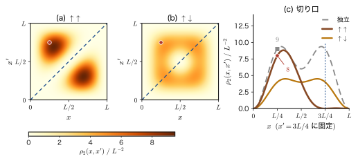
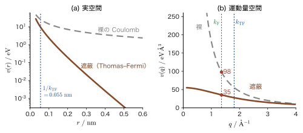

第58章1 体・2 体演算子と場の演算子 — 多体ハミルトニアンを書く
第56章では調和振動子を生成・消滅演算子だけで解き，第57章では電子（Fermi 粒子）の状態を占有数で表して，Slater 行列式を $\hat{c}_{i_1}^\dagger\cdots\hat{c}_{i_N}^\dagger\ket{0}$ と書けるようになった．けれども，状態を書けるだけでは物理は進まない．材料の電子状態を調べるには，$N$ 個の電子の全エネルギーを決めるハミルトニアン——電子の運動エネルギー，原子核や外場からの力，そして電子どうしの Coulomb 反発——を，同じ言葉で書き下さなければならない．この章では，それを行う．
古典力学（AD 03）では，$N$ 個の粒子の全エネルギーは「各粒子のエネルギーの和」$\sum_a\bigl(\bm{p}_a^2/2m+U(\bm{r}_a)\bigr)$ と，「粒子の対ごとの相互作用の和」$\tfrac12\sum_{a\ne b}V(\bm{r}_a-\bm{r}_b)$ に分かれた．量子力学でも，ハミルトニアンの構造は同じである．前者のように粒子 1 個にだけ作用する項の和を 1 体演算子，後者のように粒子 2 個にまたがる項の和を 2 体演算子という．違うのは，電子が区別できないために，状態が $N!$ 個の項の反対称和（Slater 行列式）になることである．第一量子化の書き方でこれらの演算子の行列要素を計算すると，置換の和を何度も展開することになり，第35章で見たように見通しが悪い．第二量子化では，1 体演算子は $\hat{c}^\dagger\hat{c}$ の 2 本，2 体演算子は $\hat{c}^\dagger\hat{c}^\dagger\hat{c}\hat{c}$ の 4 本の演算子で書け，Slater 行列式の細かい展開は演算子の反交換関係が肩代わりしてくれる．
その結果，たとえば Hartree–Fock 近似のエネルギー（第35・36章で何ページもかけて求めたもの）が，第二量子化の言葉では 3 行で書ける．ベンゼンの $\pi$ 電子の全エネルギー，ヘリウムの 1s2s 状態の一重項と三重項の分裂，金属中で Coulomb 力が原子間距離ほどの短い長さで遮蔽されること——これらが，本章で導く 2 つの演算子の形から出てくる．この章は，次の第59章（電子ガスと Hubbard 模型），第60章（光子とフォノン），そして姉妹編の線形応答理論（AD 08）や固体物理学（AD 06）の「多体ハミルトニアン」の読み方の土台になる．
- 1 体演算子 $\hat{T}=\sum_a\hat{t}(a)$ が $\hat{T}=\sum_{ij}\mel{i}{\hat{t}}{j}\,\hat{c}_i^\dagger\hat{c}_j$ と書けることを，$N=1,2$ の具体例と一般の $N$ で導き，基底の取り替え（ユニタリ変換）に対して形が変わらないことを示せること
- 粒子数 $\hat{N}$，スピン $\hat{S}_z$，$\hat{S}_\pm$，強束縛（Hückel 型）の $\hat{H}=-t\sum(\hat{c}_i^\dagger\hat{c}_j+\mathrm{h.c.})$ を $\hat{c}^\dagger\hat{c}$ で書き，ベンゼンの 6 サイト環で全エネルギー $-8t$ と共鳴安定化 $2t$ を求められること
- 2 体演算子 $\hat{V}=\tfrac12\sum\mel{ij}{v}{kl}\hat{c}_i^\dagger\hat{c}_j^\dagger\hat{c}_l\hat{c}_k$ を導き，添字が $l,k$ の順になる理由が「自己相互作用の除去（正規順序）」であること，順序を間違えると符号が反転することを，数値で確かめられること
- 2 電子の期待値 $\mel{\Phi_{ab}}{\hat{V}}{\Phi_{ab}}=U_{ab}-J_{ab}$ を求め，ヘリウムの 1s2s の三重項・一重項の分裂（実測 $2J=0.80\ \mathrm{eV}$）を「交換項」で説明できること
- 場の演算子 $\hat{\psi}(\bm{x})=\sum_i\chi_i(\bm{x})\hat{c}_i$ と $\acomm{\hat{\psi}(\bm{x})}{\hat{\psi}^\dagger(\bm{x}')}=\delta(\bm{x}-\bm{x}')$ を導き，Slater 行列式の波動関数を $\bra{0}\hat{\psi}(\bm{x}_N)\cdots\hat{\psi}(\bm{x}_1)\ket{\Phi}$ から取り出し，密度演算子と Pauli の穴（対相関）を計算できること
- 箱規格化の平面波基底でハミルトニアンを書き，Coulomb 相互作用の Fourier 成分 $v(q)=e_0^2/(\varepsilon_0q^2)$ と密度演算子 $\hat{\rho}_{\bm{q}}$ による表示 $\hat{V}=\dfrac{1}{2V}\sum_{\bm{q}\ne0}v(q)\bigl(\hat{\rho}_{-\bm{q}}\hat{\rho}_{\bm{q}}-\hat{N}\bigr)$ を導き，Thomas–Fermi 遮蔽（Cu で遮蔽長 $0.055\ \mathrm{nm}$）を見積もれること
- Hartree–Fock のエネルギー $E_{\mathrm{HF}}$，Fock 演算子，Brillouin の定理，Koopmans の定理を第二量子化の代数で導き，ヘリウムの $-74.83\ \mathrm{eV}$ と $20.41\ \mathrm{eV}$ を再現できること
- Heisenberg の運動方程式から $\hat{c}_k(t)=\hat{c}_ke^{-i\varepsilon_kt/\hbar}$ を導き，Fermi 海に電子を 1 個加える振幅 $(1-n_k)e^{-i\varepsilon_kt/\hbar}$ として Green 関数への入口に立てること
もとにしたノート：本章はノートにない内容を補った章である．関連するノート：望月泰英『物理学ノート 量子力学3』の Hartree–Fock の節（pp. 50–60）と，生成・消滅演算子の節（pp. 61–64）．
58.1 1 体演算子 — 粒子を 1 個だけ動かす $\hat{c}_i^\dagger\hat{c}_j$
58.1.1 この章で使う約束（第57章の復習）
復習：スピン軌道と $\hat{c}_i$，$\hat{c}_i^\dagger$ の約束（第57章 57.5 節，57.6 節）
- スピン軌道 $\chi_i(\bm{x})$：1 電子の状態．$\bm{x}=(\bm{r},\sigma)$ は位置とスピンをまとめた座標で，$\int\!\dd\bm{x}\equiv\sum_{\sigma}\int\dd^3r$ と書く（第33章．本書の第X部では，座標 $\bm{x}$ は太字，1 次元の位置 $x$ は細字で区別する．細字の $x$ は，58.5.1 項の 1 次元の離散化と例題58.10 だけに現れる）．正規直交性 $\int\chi_i^*(\bm{x})\chi_j(\bm{x})\dd\bm{x}=\delta_{ij}$ と，完全性 $\sum_i\chi_i(\bm{x})\chi_i^*(\bm{x}')=\delta(\bm{x}-\bm{x}')$（$\delta(\bm{x}-\bm{x}')=\delta_{\sigma\sigma'}\delta(\bm{r}-\bm{r}')$）を満たすとする．Dirac 記法では $\chi_i$ に対応するケットを $\ket{i}$ と書き，$\mel{i}{\hat{t}}{j}=\int\chi_i^*(\bm{x})\,\hat{t}\chi_j(\bm{x})\dd\bm{x}$ である．
- フェルミオンの演算子：$\hat{c}_i^\dagger$ はスピン軌道 $\chi_i$ に電子を 1 個作り，$\hat{c}_i$ は消す．反交換関係は $$\acomm{\hat{c}_i}{\hat{c}_j^\dagger}=\delta_{ij},\qquad \acomm{\hat{c}_i}{\hat{c}_j}=\acomm{\hat{c}_i^\dagger}{\hat{c}_j^\dagger}=0$$ で，特に $(\hat{c}_i^\dagger)^2=0$ が Pauli の排他原理である．真空 $\ket{0}$ は「電子が 1 個もない状態」を表し，$\hat{c}_i\ket{0}=0$ を満たす（本書では $\ket{0}$ は真空だけを表す．相互作用する系の基底状態は，あとで $\ket{\Psi_0}$ と書く）．
- Slater 行列式：$\ket{k_1k_2\cdots k_N}\equiv\hat{c}_{k_1}^\dagger\hat{c}_{k_2}^\dagger\cdots\hat{c}_{k_N}^\dagger\ket{0}$ は，波動関数 $\dfrac{1}{\sqrt{N!}}\det\bigl[\chi_{k_b}(\bm{x}_a)\bigr]$（行が電子 $a$，列が軌道 $k_b$）に対応する．$\hat{c}^\dagger$ の並べ方を入れ替えると符号が変わる（反対称）．粒子数演算子は $\hat{n}_i=\hat{c}_i^\dagger\hat{c}_i$（固有値 $0$ か $1$），$\hat{N}=\sum_i\hat{n}_i$ である．
記号の断り：この章で同じ文字が 2 通りに使われる場合
- $t$：58.1 節では 1 電子演算子 $\hat{t}$ とその行列要素 $t_{ij}$，58.2 節以降の強束縛模型ではホッピング $t$（$=-\beta\gt0$），58.8 節では時間．どれかは文脈で決まる．$\hat{T}$（ハットつき）は運動エネルギー・1 体演算子，58.8.3 項の $T[\cdots]$ は時間順序積，位相が 1 周する時間は $\tau_{\mathrm{ph}}$ と書く．
- $U$：ユニタリ行列 $U$（58.1.6 項，58.5 節），Coulomb 積分 $U_{ab}$（58.4 節以降），外場・核のポテンシャル $U(\bm{r})$（58.5.4 項以降）．Hubbard 模型の $U$ は第59章で使う．
- $k$：軌道のラベル（58.1〜58.5 節）と波数 $\bm{k}$（58.6 節以降．こちらは太字）．$V$：体積，$\hat{V}$：2 体演算子．$\mu$：化学ポテンシャル（58.6.5 項と 58.8.3 項）．基底関数の番号 $\phi_\mu$（58.7.5 項）にも使うが，サイトの番号には使わない．
58.1.2 第一量子化の 1 体演算子
$N$ 個の電子の全エネルギーを作る演算子のうち，もっとも簡単なのは「電子ごとのエネルギーの足し算」である．電子 $a$ の座標 $\bm{x}_a$ にだけ作用する演算子を $\hat{t}(a)$ と書く．
定義58.1 1 体演算子
1 個の粒子に作用する演算子 $\hat{t}$ を，$N$ 個の粒子のそれぞれに作用させて足し合わせたもの
\begin{equation} \hat{T}=\sum_{a=1}^{N}\hat{t}(a) \label{eq:58-T1} \end{equation}を，1 体演算子（one-body operator）という．$\hat{t}(a)$ は粒子 $a$ の座標にだけ作用し，ほかの粒子には何もしない．
例は次のとおりである．
- 運動エネルギー：$\hat{t}=-\dfrac{\hbar^2}{2m_{\mathrm{e}}}\nabla^2$．
- 外場や原子核が作るポテンシャル：$\hat{t}=U(\bm{r})$．たとえば核電荷 $Z$ の原子核からの引力 $U=-Ze_0^2/(4\pi\varepsilon_0r)$．
- スピンの $z$ 成分：$\hat{t}=\hat{s}_z$（全スピン $\hat{S}_z=\sum_a\hat{s}_z(a)$）．
- 粒子数：$\hat{t}=1$（$\hat{N}=\sum_a1=N$）．電気双極子 $\hat{\bm{d}}=-e_0\sum_a\bm{r}_a$（$\hat{t}=-e_0\bm{r}$）も 1 体演算子である．
古典力学との対応は明らかである．古典的な $N$ 粒子の運動エネルギー $\sum_a\bm{p}_a^2/2m$ も，外場の中の位置エネルギー $\sum_aU(\bm{r}_a)$ も「粒子ごとの足し算」で，電子どうしの力がなければ，各粒子は独立に運動する．量子力学でも，電子間に相互作用がなければ，1 体演算子だけの $\hat{H}=\hat{T}$ は，1 電子の固有値問題 $\hat{t}\chi=\varepsilon\chi$ に分解する．ただし電子が区別できないので，$N$ 電子の状態は Slater 行列式であり，$\hat{T}$ を行列式の各項に作用させると $N!$ 個の項が現れる．第二量子化では，その面倒が演算子の代数に吸収される．それを示すのがこの節である．
58.1.3 $\hat{c}_i^\dagger\hat{c}_j$ は「軌道 $j$ の粒子を軌道 $i$ に付け替える」
1 体演算子の第二量子化形を作る部品が，$\hat{c}_i^\dagger\hat{c}_j$（軌道 $j$ の電子を 1 個消して，軌道 $i$ に電子を 1 個作る）である．Slater 行列式 $\ket{k_1\cdots k_N}$ に作用させると，何が起こるだろうか．次の公式が鍵である．
公式58.1 $\hat{c}_i^\dagger\hat{c}_j$ は軌道の付け替えを起こす
任意の Slater 行列式 $\ket{K}=\ket{k_1k_2\cdots k_N}$ に対して， \begin{equation} \hat{c}_i^\dagger\hat{c}_j\ket{k_1\cdots k_N}=\sum_{a=1}^{N}\delta_{j,k_a}\,\ket{k_1\cdots\underset{a\text{ 番目}}{i}\cdots k_N} \label{eq:58-replace} \end{equation} が成り立つ．右辺の $\ket{k_1\cdots i\cdots k_N}$ は，$a$ 番目の軌道ラベル $k_a$ を $i$ に書き換えた（同じ位置で入れ替えた）状態である．
導出
まず，$\hat{c}_i^\dagger\hat{c}_j$ と $\hat{c}_m^\dagger$ の交換子を求める．反交換関係 $\hat{c}_j\hat{c}_m^\dagger=\delta_{jm}-\hat{c}_m^\dagger\hat{c}_j$ を使うと， $$\hat{c}_i^\dagger\hat{c}_j\hat{c}_m^\dagger=\delta_{jm}\hat{c}_i^\dagger-\hat{c}_i^\dagger\hat{c}_m^\dagger\hat{c}_j=\delta_{jm}\hat{c}_i^\dagger+\hat{c}_m^\dagger\hat{c}_i^\dagger\hat{c}_j$$ （2 番目の等号で $\hat{c}_i^\dagger\hat{c}_m^\dagger=-\hat{c}_m^\dagger\hat{c}_i^\dagger$ を使った）．よって $$\comm{\hat{c}_i^\dagger\hat{c}_j}{\hat{c}_m^\dagger}=\delta_{jm}\,\hat{c}_i^\dagger .$$ 次に，$\hat{c}_i^\dagger\hat{c}_j$ を $\hat{c}_{k_1}^\dagger\cdots\hat{c}_{k_N}^\dagger\ket{0}$ の右へ順に通していく．1 つの $\hat{c}_{k_a}^\dagger$ を通り抜けるたびに，$\hat{c}_i^\dagger\hat{c}_j\hat{c}_{k_a}^\dagger=\hat{c}_{k_a}^\dagger\hat{c}_i^\dagger\hat{c}_j+\delta_{j,k_a}\hat{c}_i^\dagger$ なので，「何もせずに通り抜ける項」と「$\hat{c}_{k_a}^\dagger$ が $\delta_{j,k_a}\hat{c}_i^\dagger$ に置き換わる項」の 2 つが出る．最後まで通り抜けた項は $\hat{c}_i^\dagger\hat{c}_j\ket{0}=0$ で消える．したがって $$\hat{c}_i^\dagger\hat{c}_j\,\hat{c}_{k_1}^\dagger\cdots\hat{c}_{k_N}^\dagger\ket{0}=\sum_{a=1}^{N}\hat{c}_{k_1}^\dagger\cdots\bigl(\delta_{j,k_a}\hat{c}_i^\dagger\bigr)\cdots\hat{c}_{k_N}^\dagger\ket{0}$$ で，これが式 \eqref{eq:58-replace} である．
（導出終わり）
イメージ：占有された軌道へは移せない
式 \eqref{eq:58-replace} には Pauli の排他原理が自動的に入っている．付け替え先の軌道 $i$ がすでに別の $k_b$（$b\ne a$）と同じなら，右辺の状態は $\hat{c}_i^\dagger\hat{c}_i^\dagger=0$ を含むので $0$ になる．たとえば $N=2$ で，軌道 1 と 2 が占有された状態 $\ket{12}=\hat{c}_1^\dagger\hat{c}_2^\dagger\ket{0}$ に作用させると， $$\hat{c}_3^\dagger\hat{c}_2\ket{12}=\ket{13},\qquad \hat{c}_1^\dagger\hat{c}_2\ket{12}=\ket{11}=0 .$$ 前者は 2 番目の電子を空いている軌道 3 へ移した状態，後者は，すでに占有されている軌道 1 へ移そうとして $0$ になる．また $\hat{c}_2^\dagger\hat{c}_3\ket{12}=0$ は，軌道 3 には電子がいないので移す電子がない，という意味である．
58.1.4 1 体演算子の第二量子化形
さて，1 体演算子 $\hat{T}$ が Slater 行列式にどう作用するかを，第一量子化の側で見よう．1 電子の演算子 $\hat{t}$ を軌道 $\chi_k$ に作用させた結果 $\hat{t}\chi_k$ は，完全性 $\sum_i\chi_i(\bm{x})\chi_i^*(\bm{x}')=\delta(\bm{x}-\bm{x}')$ を使って軌道 $\chi_i$ で展開できる． \begin{equation} \hat{t}\chi_k(\bm{x})=\sum_i\chi_i(\bm{x})\int\chi_i^*(\bm{x}')\,\hat{t}\chi_k(\bm{x}')\dd\bm{x}'=\sum_i\chi_i(\bm{x})\,t_{ik},\qquad t_{ik}\equiv\mel{i}{\hat{t}}{k} \label{eq:58-tk} \end{equation} である．展開係数の行列 $t_{ik}$ は，$\hat{t}$ の基底 $\{\chi_i\}$ での表現行列（AD 02 第11章 11.4 節）にほかならない．
定理58.1 1 体演算子の第二量子化
1 体演算子 $\hat{T}=\sum_{a=1}^N\hat{t}(a)$ は，Fock 空間で次の演算子に対応する． \begin{equation} \boxed{\ \hat{T}=\sum_{i,j}\mel{i}{\hat{t}}{j}\,\hat{c}_i^\dagger\hat{c}_j\ } \label{eq:58-T2} \end{equation} すなわち「軌道 $j$ の電子を軌道 $i$ に移す」演算 $\hat{c}_i^\dagger\hat{c}_j$ に，その振幅（遷移の行列要素）$t_{ij}=\mel{i}{\hat{t}}{j}$ をかけて，すべての $(i,j)$ について足したものである．右辺は粒子数 $N$ によらない形をしている．
導出
[i] $N=1$．1 電子の状態 $\ket{k}=\hat{c}_k^\dagger\ket{0}$ は波動関数 $\chi_k$ に対応し，$\hat{t}$ を作用させると式 \eqref{eq:58-tk} より $\sum_it_{ik}\chi_i$，すなわち $\sum_it_{ik}\ket{i}$ になる．一方，式 \eqref{eq:58-T2} は，$\sum_{ij}t_{ij}\hat{c}_i^\dagger\hat{c}_j\hat{c}_k^\dagger\ket{0}=\sum_{ij}t_{ij}\hat{c}_i^\dagger\bigl(\delta_{jk}-\hat{c}_k^\dagger\hat{c}_j\bigr)\ket{0}=\sum_it_{ik}\hat{c}_i^\dagger\ket{0}$ となって，両者は一致する．
[ii] 一般の $N$，第一量子化の側．Slater 行列式 $\Phi_K=\dfrac{1}{\sqrt{N!}}\sum_{P}(\mathrm{sgn}\,P)\prod_{b=1}^N\chi_{k_{P(b)}}(\bm{x}_b)$ に $\hat{T}=\sum_a\hat{t}(a)$ を作用させる．まず 1 つの項 $\prod_b\chi_{k_{P(b)}}(\bm{x}_b)$ を考える．$\hat{t}(a)$ は $a$ 番目の因子だけに作用し，式 \eqref{eq:58-tk} により $$\hat{t}(a)\,\chi_{k_{P(a)}}(\bm{x}_a)=\sum_it_{i,k_{P(a)}}\,\chi_i(\bm{x}_a)$$ と，その因子を軌道 $\chi_i$ に取り替えた項の和に変わる（取り替えの係数が $t_{i,k_{P(a)}}$）．これを $a=1,\dots,N$ について足す．この置換 $P$ については，$a$ が $1,\dots,N$ を動くとき $c\equiv P(a)$ も $1,\dots,N$ をちょうど 1 回ずつ動くので，$c=P(a)$ と置き直すと，「軌道ラベルの列 $(k_1,\dots,k_N)$ のうち $c$ 番目のラベル $k_c$ を $i$ に書き換え，係数 $t_{i,k_c}$ をかける」操作を $c$ について足したものになる．この書き換えは置換 $P$ の選び方に依らず同じ形で起こるので，符号 $\mathrm{sgn}\,P$ をつけて $P$ について足すと，書き換えたラベルの列に対する Slater 行列式が得られる： $$\hat{T}\,\Phi_{k_1\cdots k_N}=\sum_{c=1}^{N}\sum_{i}t_{i,k_c}\ \Phi_{k_1\cdots\underset{c\text{ 番目}}{i}\cdots k_N} .$$ [iii] 一般の $N$，第二量子化の側．式 \eqref{eq:58-T2} を $\ket{k_1\cdots k_N}$ に作用させ，公式58.1 を使うと， $$\sum_{i,j}t_{ij}\hat{c}_i^\dagger\hat{c}_j\ket{k_1\cdots k_N}=\sum_{i,j}t_{ij}\sum_{c=1}^N\delta_{j,k_c}\ket{k_1\cdots i\cdots k_N}=\sum_{c=1}^{N}\sum_it_{i,k_c}\ket{k_1\cdots\underset{c\text{ 番目}}{i}\cdots k_N}$$ となり，[ii] と完全に同じ式になる．Slater 行列式 $\ket{k_1\cdots k_N}$ は $N$ 電子の反対称状態の基底をなす（第57章）ので，2 つの演算子は同じものである．
（導出終わり）
イメージ：Slater 行列式の展開を $\hat{c}^\dagger\hat{c}$ が肩代わりする
第一量子化で $\hat{T}$ の行列要素を計算すると，置換 $P$ の和（$N!$ 項）を書き並べ，直交性で多くの項を落とす作業（第35章の Slater–Condon の規則）が必要だった．第二量子化では，その作業が「$\hat{c}_i^\dagger\hat{c}_j$ を通り抜けさせるたびに反交換関係を 1 回使う」という機械的な操作に置き換わる．反対称性は，$\hat{c}^\dagger$ の並べ方の符号として最初から演算子に埋め込まれているので，$N!$ 個の項を書く必要がない．
例題58.1 2 個の電子を 2 つの軌道に入れる — 第一量子化と第二量子化の一致
2 つのスピン軌道 $\chi_1,\chi_2$ があり，1 電子演算子 $\hat{t}$ の行列が $t=\begin{pmatrix}t_{11}&t_{12}\\t_{21}&t_{22}\end{pmatrix}$ であるとする．(1) 電子 2 個をこの 2 軌道に入れた状態 $\ket{12}=\hat{c}_1^\dagger\hat{c}_2^\dagger\ket{0}$ に $\hat{T}=\sum_{ij}t_{ij}\hat{c}_i^\dagger\hat{c}_j$ を作用させよ．(2) これを第一量子化で確かめよ．(3) $t=\begin{pmatrix}2&1\\1&0\end{pmatrix}$（単位は任意）のとき，得られた値と，$t$ の固有値の和を比べよ．
解答 (1) 公式58.1 を $\ket{12}$（$k_1=1,k_2=2$）に使う． $$\hat{c}_1^\dagger\hat{c}_1\ket{12}=\ket{12},\quad \hat{c}_2^\dagger\hat{c}_2\ket{12}=\ket{12},\quad \hat{c}_2^\dagger\hat{c}_1\ket{12}=\ket{22}=0,\quad \hat{c}_1^\dagger\hat{c}_2\ket{12}=\ket{11}=0 .$$ （最初の 2 つは，付け替え先が自分自身で，$\hat{n}_1\ket{12}=\ket{12}$ などと同じ．後の 2 つは，付け替え先がすでに占有されているので Pauli の原理で $0$．）したがって $$\hat{T}\ket{12}=(t_{11}+t_{22})\ket{12}$$ となり，$\ket{12}$ は $\hat{T}$ の固有状態で，固有値は $t$ のトレース $\mathrm{tr}\,t=t_{11}+t_{22}$ である．
(2) 第一量子化では，$\Phi_{12}=\dfrac{1}{\sqrt2}\bigl[\chi_1(\bm{x}_1)\chi_2(\bm{x}_2)-\chi_2(\bm{x}_1)\chi_1(\bm{x}_2)\bigr]$ に $\hat{t}(1)+\hat{t}(2)$ を作用させる．式 \eqref{eq:58-tk} の展開 $\hat{t}\chi_1=t_{11}\chi_1+t_{21}\chi_2$，$\hat{t}\chi_2=t_{12}\chi_1+t_{22}\chi_2$ を使うと，$\hat{t}(1)\chi_1(\bm{x}_1)\chi_2(\bm{x}_2)=\bigl[t_{11}\chi_1(\bm{x}_1)+t_{21}\chi_2(\bm{x}_1)\bigr]\chi_2(\bm{x}_2)$ などとなる．$\chi_1(\bm{x}_1)\chi_2(\bm{x}_2)$ と $\chi_2(\bm{x}_1)\chi_1(\bm{x}_2)$ のそれぞれに $\hat{t}(1)+\hat{t}(2)$ を作用させると， $$\begin{aligned} \bigl[\hat{t}(1)+\hat{t}(2)\bigr]\chi_1(\bm{x}_1)\chi_2(\bm{x}_2)&=(t_{11}+t_{22})\,\chi_1(\bm{x}_1)\chi_2(\bm{x}_2)+t_{21}\,\chi_2(\bm{x}_1)\chi_2(\bm{x}_2)+t_{12}\,\chi_1(\bm{x}_1)\chi_1(\bm{x}_2),\\ \bigl[\hat{t}(1)+\hat{t}(2)\bigr]\chi_2(\bm{x}_1)\chi_1(\bm{x}_2)&=(t_{11}+t_{22})\,\chi_2(\bm{x}_1)\chi_1(\bm{x}_2)+t_{12}\,\chi_1(\bm{x}_1)\chi_1(\bm{x}_2)+t_{21}\,\chi_2(\bm{x}_1)\chi_2(\bm{x}_2) \end{aligned}$$ である．$\Phi_{12}$ は前者から後者を引いたものの $1/\sqrt2$ 倍なので，$\chi_1(\bm{x}_1)\chi_2(\bm{x}_2)$ の係数は $t_{11}+t_{22}$，$\chi_2(\bm{x}_1)\chi_1(\bm{x}_2)$ の係数は $-(t_{11}+t_{22})$，同じ軌道が 2 回の積 $\chi_1(\bm{x}_1)\chi_1(\bm{x}_2)$ の係数は $t_{12}-t_{12}=0$，$\chi_2(\bm{x}_1)\chi_2(\bm{x}_2)$ の係数は $t_{21}-t_{21}=0$ となって， $$\hat{T}\,\Phi_{12}=(t_{11}+t_{22})\,\frac{1}{\sqrt2}\bigl[\chi_1(\bm{x}_1)\chi_2(\bm{x}_2)-\chi_2(\bm{x}_1)\chi_1(\bm{x}_2)\bigr]=(t_{11}+t_{22})\,\Phi_{12}$$ である．(1) と一致する．
(3) $t=\begin{pmatrix}2&1\\1&0\end{pmatrix}$ の固有値は，$\det(t-\lambda)=\lambda^2-2\lambda-1=0$ より $\lambda=1\pm\sqrt2$．和は $(1+\sqrt2)+(1-\sqrt2)=2$ で，トレース $t_{11}+t_{22}=2+0=2$ と一致する．軌道が 2 つで電子が 2 個のとき，$N=2$ の状態は 1 つしかなく，そのエネルギーは，軌道の取り方（基底）によらず $t$ のトレースに等しい．これは次項の「基底の取り替えに対する不変性」の最も簡単な例である．
58.1.5 読み方と性質
図58.1 のように，式 \eqref{eq:58-T2} は「1 個の電子が軌道 $j$ から軌道 $i$ へ移る」過程の和である．次の性質が成り立つ．
- 粒子数を変えない：$\hat{c}^\dagger\hat{c}$ は消すのと作るのが 1 個ずつなので，$\hat{T}\ket{K}$ は粒子数 $N$ の状態である．次の公式から $\comm{\hat{T}}{\hat{N}}=0$ がわかる（演習58.1）．
- $\hat{t}$ がエルミートなら $\hat{T}$ もエルミート：$t_{ji}^*=t_{ij}$ で，$\hat{T}^\dagger=\sum_{ij}t_{ij}^*\hat{c}_j^\dagger\hat{c}_i=\hat{T}$．
公式58.2 $\hat{c}_a^\dagger\hat{c}_b$ の交換子
\begin{equation} \comm{\hat{c}_a^\dagger\hat{c}_b}{\hat{c}_c^\dagger\hat{c}_d}=\delta_{bc}\,\hat{c}_a^\dagger\hat{c}_d-\delta_{ad}\,\hat{c}_c^\dagger\hat{c}_b \label{eq:58-gl} \end{equation} この関係は，本章のあちこち（粒子数の保存，密度演算子，運動方程式）で使う．
導出
$\hat{c}_a^\dagger\hat{c}_b\hat{c}_c^\dagger\hat{c}_d=\hat{c}_a^\dagger(\delta_{bc}-\hat{c}_c^\dagger\hat{c}_b)\hat{c}_d=\delta_{bc}\hat{c}_a^\dagger\hat{c}_d-\hat{c}_a^\dagger\hat{c}_c^\dagger\hat{c}_b\hat{c}_d$．同様に $\hat{c}_c^\dagger\hat{c}_d\hat{c}_a^\dagger\hat{c}_b=\delta_{da}\hat{c}_c^\dagger\hat{c}_b-\hat{c}_c^\dagger\hat{c}_a^\dagger\hat{c}_d\hat{c}_b$．4 本の積の項は，$\hat{c}_c^\dagger\hat{c}_a^\dagger=-\hat{c}_a^\dagger\hat{c}_c^\dagger$，$\hat{c}_d\hat{c}_b=-\hat{c}_b\hat{c}_d$ から $\hat{c}_c^\dagger\hat{c}_a^\dagger\hat{c}_d\hat{c}_b=\hat{c}_a^\dagger\hat{c}_c^\dagger\hat{c}_b\hat{c}_d$ となって，差をとると打ち消し合う．残るのが式 \eqref{eq:58-gl} である．
（導出終わり）
特に $\hat{N}=\sum_m\hat{c}_m^\dagger\hat{c}_m$ との交換子は，式 \eqref{eq:58-gl} で $(c,d)=(m,m)$ とおいて $\comm{\hat{c}_i^\dagger\hat{c}_j}{\hat{N}}=\sum_m\bigl(\delta_{jm}\hat{c}_i^\dagger\hat{c}_m-\delta_{im}\hat{c}_m^\dagger\hat{c}_j\bigr)=\hat{c}_i^\dagger\hat{c}_j-\hat{c}_i^\dagger\hat{c}_j=0$ となる．
58.1.6 基底の取り替えに対して形が変わらない
式 \eqref{eq:58-T2} の右辺は，軌道の選び方 $\{\chi_i\}$ に依存して見える．別の正規直交基底 $\{\chi_\alpha'\}$ を使っても同じ演算子が得られることを確かめよう．新しい軌道を，ユニタリ行列 $U$ を使って $\chi_\alpha'=\sum_i\chi_iU_{i\alpha}$ とする．
導出：基底の取り替えに対する不変性
新しい軌道に電子を作る演算子は，$\hat{d}_\alpha^\dagger=\sum_iU_{i\alpha}\hat{c}_i^\dagger$（軌道の係数と同じ変換），消す演算子はそのエルミート共役 $\hat{d}_\alpha=\sum_iU_{i\alpha}^*\hat{c}_i$ である．反交換関係は保たれる： $$\acomm{\hat{d}_\alpha}{\hat{d}_\beta^\dagger}=\sum_{i,j}U_{i\alpha}^*U_{j\beta}\acomm{\hat{c}_i}{\hat{c}_j^\dagger}=\sum_iU_{i\alpha}^*U_{i\beta}=(U^\dagger U)_{\alpha\beta}=\delta_{\alpha\beta},$$ $\acomm{\hat{d}_\alpha}{\hat{d}_\beta}=0$ も同様．新しい基底での表現行列は $t'_{\alpha\beta}=\mel{\chi_\alpha'}{\hat{t}}{\chi_\beta'}=\sum_{ij}U_{i\alpha}^*t_{ij}U_{j\beta}$（すなわち $t'=U^\dagger tU$）である．これを使って新しい基底での式 \eqref{eq:58-T2} を計算すると， $$\sum_{\alpha\beta}t'_{\alpha\beta}\,\hat{d}_\alpha^\dagger\hat{d}_\beta=\sum_{\alpha\beta}\sum_{ij}U_{i\alpha}^*t_{ij}U_{j\beta}\sum_kU_{k\alpha}\hat{c}_k^\dagger\sum_lU_{l\beta}^*\hat{c}_l=\sum_{ijkl}t_{ij}\underbrace{\Bigl(\sum_\alpha U_{k\alpha}U_{i\alpha}^*\Bigr)}_{(UU^\dagger)_{ki}=\delta_{ki}}\underbrace{\Bigl(\sum_\beta U_{j\beta}U_{l\beta}^*\Bigr)}_{(UU^\dagger)_{jl}=\delta_{jl}}\hat{c}_k^\dagger\hat{c}_l=\sum_{ij}t_{ij}\hat{c}_i^\dagger\hat{c}_j$$ となって，元の形に戻る．
（導出終わり）
つまり $\hat{T}$ は，どの基底で書いても同じ形 $\sum t_{ij}\hat{c}_i^\dagger\hat{c}_j$ をとり，基底を替えると行列 $t$ が $U^\dagger tU$ に，演算子の組 $(\hat{c}_i^\dagger,\hat{c}_i)$ が $(\hat{d}_\alpha^\dagger,\hat{d}_\alpha)$ に同時に変わるだけである．$\hat{t}$ の固有関数 $\hat{t}\phi_\alpha=\varepsilon_\alpha\phi_\alpha$ を基底に選べば $t'_{\alpha\beta}=\varepsilon_\alpha\delta_{\alpha\beta}$ となり， \begin{equation} \hat{T}=\sum_\alpha\varepsilon_\alpha\,\hat{d}_\alpha^\dagger\hat{d}_\alpha=\sum_\alpha\varepsilon_\alpha\,\hat{n}_\alpha \label{eq:58-Tdiag} \end{equation} と書ける．「1 体演算子の対角化＝行列 $t$ の対角化」であり，$N$ 電子のエネルギーは占有された軌道のエネルギー $\varepsilon_\alpha$ の和（例題58.1 のトレースはその特別な場合）になる．なお，$t=\delta_{ij}$（単位行列）の場合が粒子数演算子 $\hat{N}=\sum_i\hat{c}_i^\dagger\hat{c}_i$ で，これは基底によらない．Slater 行列式そのものについては，占有された $N$ 個の軌道だけを互いに混ぜるユニタリ変換（$N\times N$ のユニタリ行列 $U$）では位相 $\det U$ だけが変わる（第57章）．占有軌道と空の軌道を混ぜる変換では別の Slater 行列式（の重ね合わせ）になるので，基底全体の取り替えで不変なのは，状態そのものではなく，演算子 $\hat{T}$ の形である．
58.2 1 体演算子の実例 — 粒子数・スピン・強束縛模型とベンゼン
58.2.1 粒子数とスピン
定理58.1 を使えば，「粒子 1 個ずつの量の総和」は，行列要素 $\mel{i}{\hat{t}}{j}$ を計算するだけで第二量子化の形に書き直せる．もっとも基本的な例を表58.1 にまとめる．
| 量 | 第一量子化 $\sum_a\hat{t}(a)$ | 第二量子化 $\sum_{ij}t_{ij}\hat{c}_i^\dagger\hat{c}_j$ |
|---|---|---|
| 粒子数 | $\sum_a1=N$ | $\hat{N}=\sum_i\hat{c}_i^\dagger\hat{c}_i$ |
| 運動エネルギー | $-\dfrac{\hbar^2}{2m_{\mathrm{e}}}\sum_a\nabla_a^2$ | $\displaystyle\sum_{ij}\Bigl(\int\chi_i^*\Bigl(-\frac{\hbar^2\nabla^2}{2m_{\mathrm{e}}}\Bigr)\chi_j\dd\bm{x}\Bigr)\hat{c}_i^\dagger\hat{c}_j$ |
| 外場（核）のポテンシャル | $\sum_aU(\bm{r}_a)$ | $\displaystyle\sum_{ij}\Bigl(\int\chi_i^*U\chi_j\dd\bm{x}\Bigr)\hat{c}_i^\dagger\hat{c}_j$ |
| スピンの $z$ 成分 | $\hat{S}_z=\sum_a\hat{s}_z(a)$ | $\hat{S}_z=\dfrac{\hbar}{2}\displaystyle\sum_k\bigl(\hat{c}_{k\uparrow}^\dagger\hat{c}_{k\uparrow}-\hat{c}_{k\downarrow}^\dagger\hat{c}_{k\downarrow}\bigr)$ |
| スピンの昇降 | $\hat{S}_\pm=\sum_a\hat{s}_\pm(a)$ | $\hat{S}_+=\hbar\displaystyle\sum_k\hat{c}_{k\uparrow}^\dagger\hat{c}_{k\downarrow}$，$\hat{S}_-=\hbar\displaystyle\sum_k\hat{c}_{k\downarrow}^\dagger\hat{c}_{k\uparrow}$ |
| 電気双極子 | $-e_0\sum_a\bm{r}_a$ | $-e_0\displaystyle\sum_{ij}\Bigl(\int\chi_i^*\bm{r}\chi_j\dd\bm{x}\Bigr)\hat{c}_i^\dagger\hat{c}_j$ |
導出：スピンの演算子
スピンを含む軌道 $\chi_{k\sigma}$ を添字 $(k,\sigma)$ で区別する．1 電子のスピン演算子 $\hat{s}_z$ はスピン関数に作用して $\hat{s}_z\alpha=\tfrac{\hbar}{2}\alpha$，$\hat{s}_z\beta=-\tfrac{\hbar}{2}\beta$ なので，行列要素は $$\mel{k\sigma}{\hat{s}_z}{k'\sigma'}=\frac{\hbar}{2}\,(\pm1)\,\delta_{kk'}\delta_{\sigma\sigma'}\qquad(\sigma=\uparrow\text{ で }+,\ \downarrow\text{ で }-)$$ （軌道部分の内積 $\braket{\phi_k}{\phi_{k'}}=\delta_{kk'}$，スピン部分の内積 $\braket{\xi_\sigma}{\xi_{\sigma'}}=\delta_{\sigma\sigma'}$）．これを定理58.1 に代入すると，表58.1 の $\hat{S}_z$ を得る．昇降演算子 $\hat{s}_\pm=\hat{s}_x\pm i\hat{s}_y$ は $\hat{s}_+\beta=\hbar\alpha$，$\hat{s}_+\alpha=0$，$\hat{s}_-\alpha=\hbar\beta$，$\hat{s}_-\beta=0$ で（第23章，第24章），行列要素 $\mel{k\uparrow}{\hat{s}_+}{k'\downarrow}=\hbar\,\delta_{kk'}$ のみが残り，$\hat{S}_+=\hbar\sum_k\hat{c}_{k\uparrow}^\dagger\hat{c}_{k\downarrow}$ になる．実際，公式58.2 から $$\comm{\hat{S}_+}{\hat{S}_-}=\hbar^2\sum_k\comm{\hat{c}_{k\uparrow}^\dagger\hat{c}_{k\downarrow}}{\hat{c}_{k\downarrow}^\dagger\hat{c}_{k\uparrow}}=\hbar^2\sum_k\bigl(\hat{c}_{k\uparrow}^\dagger\hat{c}_{k\uparrow}-\hat{c}_{k\downarrow}^\dagger\hat{c}_{k\downarrow}\bigr)=2\hbar\hat{S}_z$$ となって，角運動量の交換関係 $\comm{\hat{S}_+}{\hat{S}_-}=2\hbar\hat{S}_z$ が $\hat{c}$ の代数から自動的に出てくる（ここで $k\ne k'$ の項は交換子が 0 になる）．
（導出終わり）
注意：$\hat{S}^2$ は 1 体演算子ではない
全スピンの大きさの 2 乗 $\hat{S}^2=\bigl(\sum_a\hat{\bm{s}}(a)\bigr)^2=\sum_a\hat{\bm{s}}(a)^2+\sum_{a\ne b}\hat{\bm{s}}(a)\cdot\hat{\bm{s}}(b)$ には，電子 $a$ と $b$ の積（2 体の項）が含まれる．第二量子化では $\hat{S}^2=\hat{S}_-\hat{S}_++\hat{S}_z^2+\hbar\hat{S}_z$ のように，$\hat{c}^\dagger\hat{c}$ の積（$\hat{c}^\dagger\hat{c}^\dagger\hat{c}\hat{c}$ の形）として現れる．$\hat{S}_z$ や $\hat{S}_\pm$ とは，性格が違う．
58.2.2 強束縛（Hückel 型）模型
材料科学でもっとも使われる 1 体演算子は，結晶や分子の「軌道のあいだの電子の飛び移り」を表す強束縛（tight-binding）模型である．サイト（原子）$j$ に 1 つずつ軌道 $\phi_j$ があり，隣り合うサイト間で電子が飛び移れるとする．この軌道を基底にとれば，1 電子ハミルトニアン $\hat{h}$ の行列要素は $h_{jj}=\alpha$（軌道が単独でもつエネルギー），$h_{ij}=\beta$（隣のサイトとの共鳴積分）で，これは第40章の Hückel 法と同じ行列である（重なり積分は無視し，軌道は規格直交とする）．定理58.1 から，$N$ 電子のハミルトニアンは
\begin{equation} \hat{H}=\alpha\sum_{j,\sigma}\hat{n}_{j\sigma}+\beta\sum_{\langle ij\rangle,\sigma}\bigl(\hat{c}_{i\sigma}^\dagger\hat{c}_{j\sigma}+\hat{c}_{j\sigma}^\dagger\hat{c}_{i\sigma}\bigr) \label{eq:58-tb} \end{equation}である．$\sum_{\langle ij\rangle}$ は隣り合うサイトの対を 1 回ずつ足すことを表し，$\sigma=\uparrow,\downarrow$ はスピンである．$\beta\lt0$ なので，姉妹編（AD 07，AD 08）や多体物理の慣習に合わせて，正のホッピング（hopping）$t\equiv-\beta\gt0$ を使い，エネルギーの原点を $\alpha=0$ にとると，
\begin{equation} \hat{H}=-t\sum_{\langle ij\rangle,\sigma}\bigl(\hat{c}_{i\sigma}^\dagger\hat{c}_{j\sigma}+\hat{c}_{j\sigma}^\dagger\hat{c}_{i\sigma}\bigr) \label{eq:58-tb2} \end{equation}と書ける．記号 $\mathrm{h.c.}$（Hermitian conjugate）を使えば $-t\sum(\hat{c}_{i\sigma}^\dagger\hat{c}_{j\sigma}+\mathrm{h.c.})$ である．各項は「電子がサイト $j$ からサイト $i$ へ飛び移る（$\hat{c}_{i\sigma}^\dagger\hat{c}_{j\sigma}$）」と「逆に飛び移る」を表し，飛び移る振幅が $-t$ である．Hückel 法の永年方程式を解くことは，式 \eqref{eq:58-tb2} の 1 電子の行列を対角化することであり，$N$ 電子の基底状態は，エネルギーの低い軌道から順に電子を詰めた Slater 行列式になる（式 \eqref{eq:58-Tdiag}）．
記号：Hückel の $\beta$ とホッピング $t$
本書の Hückel 法（第40章）の共鳴積分は $\beta\lt0$ で，準位は $E=\alpha+x\beta$ の形で書かれた．姉妹編の密度汎関数理論（AD 07）や多体物理で使われるホッピング $t$ は $t=-\beta\gt0$ で，準位は $E=-tx$ と書く．この章では $t$ を使う．値は，何に合わせるかで大きく違う．ベンゼンの実測の共鳴エネルギー（約 150 kJ/mol，約 1.6 eV）に合わせると $t\approx0.8\ \mathrm{eV}$，紫外吸収に合わせると 2 eV を超える（第40章）．Hückel 法の $\alpha,\beta$ は，電子間反発を間接的に含んだパラメーターである．
58.2.3 環状の分子：Fourier 変換は基底の取り替え
サイトが環状に $N_{\mathrm s}$ 個並ぶ場合（周期境界条件．$j=N_{\mathrm s}+1$ は $j=1$ と同じ）を考える．$j=1,\dots,N_{\mathrm s}$ で，1 電子の行列が隣同士だけ $-t$ なので，対角化の基底は平面波 $e^{ikj}/\sqrt{N_{\mathrm s}}$（$k=2\pi m/N_{\mathrm s}$，$m=0,\dots,N_{\mathrm s}-1$．格子間隔を 1 とした）である．これはユニタリ変換なので，58.1.6 項の基底の取り替えの特別な場合になる．
導出：環の強束縛ハミルトニアンの対角化
サイトの演算子から波数の演算子へ，$\hat{c}_{k\sigma}=\dfrac{1}{\sqrt{N_{\mathrm s}}}\displaystyle\sum_je^{-ikj}\hat{c}_{j\sigma}$（逆に $\hat{c}_{j\sigma}=\dfrac{1}{\sqrt{N_{\mathrm s}}}\displaystyle\sum_ke^{ikj}\hat{c}_{k\sigma}$）と変換する．$\sum_je^{i(k'-k)j}=N_{\mathrm s}\delta_{kk'}$（$k,k'$ が許された値のとき）から $\acomm{\hat{c}_{k\sigma}}{\hat{c}_{k'\sigma}^\dagger}=\delta_{kk'}$ である．隣同士の飛び移りの和は $$\sum_{j}\hat{c}_{j\sigma}^\dagger\hat{c}_{j+1,\sigma}=\frac{1}{N_{\mathrm s}}\sum_{k,k'}\Bigl(\sum_je^{-ikj}e^{ik'(j+1)}\Bigr)\hat{c}_{k\sigma}^\dagger\hat{c}_{k'\sigma}=\sum_ke^{ik}\,\hat{c}_{k\sigma}^\dagger\hat{c}_{k\sigma}$$ となる．その複素共役の項 $\sum_j\hat{c}_{j+1,\sigma}^\dagger\hat{c}_{j\sigma}=\sum_ke^{-ik}\hat{n}_{k\sigma}$ と足すと，$e^{ik}+e^{-ik}=2\cos k$ から \begin{equation} \hat{H}=\sum_{k,\sigma}\varepsilon_k\,\hat{c}_{k\sigma}^\dagger\hat{c}_{k\sigma},\qquad \varepsilon_k=-2t\cos k\qquad\Bigl(k=\frac{2\pi m}{N_{\mathrm s}}\Bigr) \label{eq:58-ring} \end{equation} を得る．
（導出終わり）
式 \eqref{eq:58-ring} は，第40章の環状分子の公式40.4，第41章のバンド $E(k)=\alpha+2\beta\cos ka$ と同じ式である（$\beta=-t$）．サイトを無限に増やすとバンドになる，というのが固体物理への入口である．
例題58.2 2 サイトの強束縛模型 — 結合性軌道と反結合性軌道
2 つのサイト 1，2 の強束縛模型 $\hat{H}=-t\sum_\sigma\bigl(\hat{c}_{1\sigma}^\dagger\hat{c}_{2\sigma}+\hat{c}_{2\sigma}^\dagger\hat{c}_{1\sigma}\bigr)$ を対角化し，(1) 電子 1 個のエネルギーと軌道，(2) 電子 2 個のエネルギーと，$\hat{S}_z$ の固有値を求めよ．$t=1\ \mathrm{eV}$ とする．
解答 (1) $\hat{c}_{\pm\sigma}=(\hat{c}_{1\sigma}\pm\hat{c}_{2\sigma})/\sqrt2$ と変換する（$\hat{c}_{1}=(\hat{c}_++\hat{c}_-)/\sqrt2$，$\hat{c}_2=(\hat{c}_+-\hat{c}_-)/\sqrt2$）．$\acomm{\hat{c}_{\pm}}{\hat{c}_{\pm}^\dagger}=\tfrac12(1+1)=1$，$\acomm{\hat{c}_+}{\hat{c}_-^\dagger}=\tfrac12(1-1)=0$ で反交換関係は保たれる． $$\hat{c}_+^\dagger\hat{c}_+-\hat{c}_-^\dagger\hat{c}_-=\tfrac12\bigl[(\hat{c}_1^\dagger+\hat{c}_2^\dagger)(\hat{c}_1+\hat{c}_2)-(\hat{c}_1^\dagger-\hat{c}_2^\dagger)(\hat{c}_1-\hat{c}_2)\bigr]=\hat{c}_1^\dagger\hat{c}_2+\hat{c}_2^\dagger\hat{c}_1$$ なので $\hat{H}=-t\sum_\sigma(\hat{n}_{+\sigma}-\hat{n}_{-\sigma})=\sum_\sigma(\varepsilon_+\hat{n}_{+\sigma}+\varepsilon_-\hat{n}_{-\sigma})$，$\varepsilon_+=-t$（結合性，$\phi_+=(\phi_1+\phi_2)/\sqrt2$），$\varepsilon_-=+t$（反結合性）．$t=1\ \mathrm{eV}$ なら $-1\ \mathrm{eV}$ と $+1\ \mathrm{eV}$．
(2) 2 個の電子を 4 つのスピン軌道 $+\uparrow,+\downarrow,-\uparrow,-\downarrow$ に入れる組合せは $\binom42=6$ 通りである．エネルギーは占有軌道の $\varepsilon$ の和で，$\hat{S}_z=\tfrac{\hbar}{2}\sum(\hat{n}_\uparrow-\hat{n}_\downarrow)$ は下の表のとおり．
| 状態 | エネルギー | $S_z/\hbar$ |
|---|---|---|
| $\hat{c}_{+\uparrow}^\dagger\hat{c}_{+\downarrow}^\dagger\ket{0}$ | $-2t=-2\ \mathrm{eV}$ | $0$ |
| $\hat{c}_{+\uparrow}^\dagger\hat{c}_{-\uparrow}^\dagger\ket{0}$ | $0$ | $+1$ |
| $\hat{c}_{+\downarrow}^\dagger\hat{c}_{-\downarrow}^\dagger\ket{0}$ | $0$ | $-1$ |
| $\hat{c}_{+\uparrow}^\dagger\hat{c}_{-\downarrow}^\dagger\ket{0}$，$\hat{c}_{+\downarrow}^\dagger\hat{c}_{-\uparrow}^\dagger\ket{0}$ | $0$（2 状態） | $0$ |
| $\hat{c}_{-\uparrow}^\dagger\hat{c}_{-\downarrow}^\dagger\ket{0}$ | $+2t=+2\ \mathrm{eV}$ | $0$ |
基底状態（$-2\ \mathrm{eV}$）は，2 個の電子が結合性軌道に逆向きのスピンで入った状態で，$S=0$ である．$E=0$ の 4 状態は，三重項 $S=1$（$S_z=+1,0,-1$）と，一重項 $S=0$ 1 つに分かれる．この模型には電子間の反発がないので，一重項と三重項が縮退している．反発を入れた 2 体演算子が，この縮退を解く（58.4 節）．
例題58.3 ベンゼンの $\pi$ 電子の全エネルギーと共鳴安定化
ベンゼン（6 サイトの環，$\pi$ 電子 6 個）について，式 \eqref{eq:58-ring} の $\varepsilon_k$ を求め，基底状態の全エネルギーを $t$ で表せ．また，3 つの局在した二重結合（Kekulé 構造）だけの場合の全エネルギーと比べ，共鳴安定化エネルギーを求めよ．実測値と比べるには $t$ に何を使うとよいか．
解答 $N_{\mathrm s}=6$ なので $k=2\pi m/6$（$m=0,\dots,5$），$\varepsilon_k=-2t\cos(2\pi m/6)=-2t\cos(60^\circ m)$： $$m=0:\ -2t,\quad m=1,5:\ -2t\cos60^\circ=-t,\quad m=2,4:\ -2t\cos120^\circ=+t,\quad m=3:\ -2t\cos180^\circ=+2t .$$ 準位は $-2t$（1 個），$-t$（$m=1,5$ の 2 重縮退），$+t$（2 重縮退），$+2t$（1 個）である（図58.2）．6 個の電子は，スピンの向きを逆にして下の 3 つの軌道（$-2t$ と，$-t$ の 2 つ）に入る．全エネルギーは $$E_{\pi}=2\times(-2t)+4\times(-t)=-8t .$$ 局在した 3 つの二重結合は，2 サイトの模型（例題58.2）の基底状態を 3 個並べたものなので，$3\times(-2t)=-6t$．差は $-6t-(-8t)=2t$ で，環になって電子が非局在化すると $2t$ だけ安定になる（共鳴安定化エネルギー）．ベンゼンの実測の共鳴エネルギー（水素化熱から見積もった約 150 kJ/mol $=1.55\ \mathrm{eV}$）に合わせるなら $2t=1.55\ \mathrm{eV}$，$t\approx0.78\ \mathrm{eV}$ とおく．（第40章の Hückel 法の非局在化エネルギー $2\abs{\beta}$ と同じ結果である．）
58.2.4 1 体密度行列の入口 — $\mel{\Phi}{\hat{c}_i^\dagger\hat{c}_j}{\Phi}$
1 体演算子の期待値は，行列 $t$ と「1 体密度行列」の積のトレースで書ける．Slater 行列式 $\ket{\Phi}$ が，$\hat{t}$ の固有軌道（演算子 $\hat{d}_\alpha$）を $n_\alpha=1$ または $0$ で占有した状態であるとする．$\ket{\Phi}$ は $\hat{n}_\alpha=\hat{d}_\alpha^\dagger\hat{d}_\alpha$ の固有状態（固有値 $n_\alpha$）で，$\hat{d}_\beta\ket{\Phi}$ は軌道 $\beta$ から電子を取り除いた状態（$\beta$ が空なら $0$）である．$\alpha\ne\beta$ なら，$\hat{d}_\alpha\ket{\Phi}$ と $\hat{d}_\beta\ket{\Phi}$ は占有数が違うので直交する．したがって
\begin{equation} \mel{\Phi}{\hat{d}_\alpha^\dagger\hat{d}_\beta}{\Phi}=\delta_{\alpha\beta}\,n_\alpha \label{eq:58-dens1} \end{equation}である．元の基底 $\hat{c}_i=\sum_\alpha U_{i\alpha}\hat{d}_\alpha$ に戻すと，
\begin{equation} \mel{\Phi}{\hat{c}_i^\dagger\hat{c}_j}{\Phi}=\sum_\alpha n_\alpha\,U_{i\alpha}^*U_{j\alpha}\equiv P_{ji},\qquad \mel{\Phi}{\hat{T}}{\Phi}=\sum_{ij}t_{ij}P_{ji}=\mathrm{tr}\,(tP) \label{eq:58-dens2} \end{equation}である．行列 $P=\sum_{\alpha\in\text{占有}}\ket{\alpha}\bra{\alpha}$ は，占有された軌道への射影行列で，1 体密度行列とよばれる．対角成分 $P_{ii}=\mel{\Phi}{\hat{n}_i}{\Phi}$ は軌道 $i$ の電子数（サイトの電荷密度），非対角成分は，軌道 $i$，$j$ の間を電子がどれだけ行き来しているか（結合の強さ）を表す．
例題58.4 ベンゼンの結合次数 — 1 体密度行列から
ベンゼンの基底状態について，スピン $\sigma$ を決めたときの隣り合うサイトの $\mel{\Phi}{\hat{c}_{j\sigma}^\dagger\hat{c}_{j+1,\sigma}}{\Phi}$ を求め，結合次数 $p=\sum_\sigma\mel{\Phi}{\hat{c}_{j\sigma}^\dagger\hat{c}_{j+1,\sigma}}{\Phi}$ とエネルギー $-8t$ を再現せよ．
解答 58.2.3 項の変換 $\hat{c}_{j\sigma}=N_{\mathrm s}^{-1/2}\sum_ke^{ikj}\hat{c}_{k\sigma}$（$N_{\mathrm s}=6$）を使うと， $$\mel{\Phi}{\hat{c}_{j\sigma}^\dagger\hat{c}_{j'\sigma}}{\Phi}=\frac{1}{6}\sum_{k,k'}e^{-ikj}e^{ik'j'}\mel{\Phi}{\hat{c}_{k\sigma}^\dagger\hat{c}_{k'\sigma}}{\Phi}=\frac16\sum_{k\in\text{占有}}e^{ik(j'-j)}$$ （式 \eqref{eq:58-dens1} で $k\ne k'$ の項は消える）．スピン $\sigma$ の占有軌道は $k=0,\pm\pi/3$ の 3 つなので，$j'=j+1$ のとき $$\frac16\bigl(1+e^{i\pi/3}+e^{-i\pi/3}\bigr)=\frac16\bigl(1+2\cos60^\circ\bigr)=\frac16\times2=\frac13 .$$ 結合次数は 2 つのスピンの和 $p=2\times\tfrac13=\tfrac23$ で，第40章の値と一致する．どの隣同士でも同じ値で，6 本の結合は等価である．（$j'=j$ では $\tfrac16\times3=\tfrac12$，2 つのスピンで各サイトに電子 $1$ 個．）エネルギーは，式 \eqref{eq:58-tb2} の期待値を，6 本の結合，2 つのスピンの和でとって $$\mel{\Phi}{\hat{H}}{\Phi}=-t\sum_{\text{6 本の結合}}\sum_\sigma\bigl(\tfrac13+\tfrac13\bigr)=-t\times6\times2\times\tfrac23=-8t$$ となり，例題58.3 と一致する（各項の $+\tfrac13$ は $\hat{c}_{j}^\dagger\hat{c}_{j+1}$ と，その複素共役の項の寄与）．
58.3 2 体演算子 — なぜ添字は $l,k$ の順なのか
58.3.1 第一量子化の 2 体演算子：Coulomb 相互作用
1 体演算子だけでは，電子間の力を表せない．電子 $a$ と電子 $b$ のあいだの Coulomb 反発 $v(\bm{x}_a,\bm{x}_b)$ は，2 個の電子の座標に同時に依存するからである．古典力学では，$N$ 個の点電荷の Coulomb エネルギーは，対ごとのエネルギー $\dfrac{q_aq_b}{4\pi\varepsilon_0\abs{\bm{r}_a-\bm{r}_b}}$ を，どの対も 1 回ずつ足したものである（AD 03）．量子力学でもまったく同じである．
定義58.2 2 体演算子
2 個の粒子の座標に作用する演算子 $v(\bm{x}_a,\bm{x}_b)$（$a\ne b$ を入れ替えても変わらない）に対して，粒子の対ごとに足し合わせた \begin{equation} \hat{V}=\sum_{a\lt b}v(\bm{x}_a,\bm{x}_b)=\frac12\sum_{a\ne b}v(\bm{x}_a,\bm{x}_b) \label{eq:58-V1} \end{equation} を 2 体演算子（two-body operator）という．$\tfrac12$ は，$(a,b)$ と $(b,a)$ が同じ対なので，和 $\sum_{a\ne b}$ では各対が 2 回数えられることの補正である．電子間の Coulomb 反発では $v(\bm{x}_a,\bm{x}_b)=\dfrac{e_0^2}{4\pi\varepsilon_0\abs{\bm{r}_a-\bm{r}_b}}$ で，スピンには依存しない．
この和から $a=b$ の項を除く点が重要である．電子が自分自身と Coulomb 相互作用する（$v(\bm{x}_a,\bm{x}_a)=e_0^2/(4\pi\varepsilon_0\cdot0)=\infty$）ことはないからである．これが第二量子化の形に書いたとき，添字の順序という形で効いてくる．
58.3.2 2 電子積分
2 体演算子の行列要素を決めるのは，次の積分である．
定義58.3 2 電子積分
4 つのスピン軌道 $\chi_i,\chi_j,\chi_k,\chi_l$ に対して， \begin{equation} \mel{ij}{v}{kl}\equiv\iint\chi_i^*(\bm{x}_1)\,\chi_j^*(\bm{x}_2)\,v(\bm{x}_1,\bm{x}_2)\,\chi_k(\bm{x}_1)\,\chi_l(\bm{x}_2)\dd\bm{x}_1\dd\bm{x}_2 \label{eq:58-eri} \end{equation} を 2 電子積分という．ブラとケットの1 番目の軌道（$i$ と $k$）が電子 1，2 番目の軌道（$j$ と $l$）が電子 2 の座標に対応する（第35章の記法と同じ）．
$v$ は実数で，$v(\bm{x}_1,\bm{x}_2)=v(\bm{x}_2,\bm{x}_1)$ なので，次の 2 つの対称性がある．
\begin{equation} \mel{ij}{v}{kl}=\mel{ji}{v}{lk},\qquad \mel{ij}{v}{kl}^*=\mel{kl}{v}{ij} \label{eq:58-sym} \end{equation}前者は，積分変数の名前 $\bm{x}_1\leftrightarrow \bm{x}_2$ を入れ替えるだけで得られる（電子 1 と 2 の名前の付け替え）．後者は，式 \eqref{eq:58-eri} の複素共役をとって $v$ の実数性を使えば得られる．後者は $\hat{V}$ がエルミートであることを保証する．$v$ がスピンに依らないとき，スピン積分から $\mel{ij}{v}{kl}\propto\delta_{\sigma_i\sigma_k}\delta_{\sigma_j\sigma_l}$（電子 1 のスピンが $i$ と $k$ で同じ，電子 2 が $j$ と $l$ で同じ）となる．
記号の対応：他書の 2 体演算子
この添字の書き方 $\mel{ij}{v}{kl}\hat{c}_i^\dagger\hat{c}_j^\dagger\hat{c}_l\hat{c}_k$ は，姉妹編の密度汎関数理論（AD 07 第6章 6.6 節．生成・消滅演算子を，ハットなしの $a_\mu^\dagger,a_\mu$ と書く），線形応答理論（AD 08 付録B B.6．本書と同じ $\hat{c}_i$），マテリアル計算科学（AD 05 第9章．$\mel{\chi_a\chi_b}{1/r_{12}}{\chi_c\chi_d}$）と，電子 1 と 2 の添字の並べ方まで同じである．化学者記法 $[ik\vert jl]$ とは $\mel{ij}{v}{kl}=[ik\vert jl]$ の関係にある（第35章）．
58.3.3 2 体演算子の第二量子化
定理58.2 2 体演算子の第二量子化
2 体演算子 $\hat{V}=\dfrac12\sum_{a\ne b}v(\bm{x}_a,\bm{x}_b)$ は，Fock 空間で次の演算子に対応する． \begin{equation} \boxed{\ \hat{V}=\frac12\sum_{i,j,k,l}\mel{ij}{v}{kl}\,\hat{c}_i^\dagger\hat{c}_j^\dagger\hat{c}_l\hat{c}_k\ } \label{eq:58-V2} \end{equation} 添字の並びに注意する：行列要素 $\mel{ij}{v}{kl}$ では $(i,j)$ と $(k,l)$ の順だが，演算子は $\hat{c}_i^\dagger\hat{c}_j^\dagger$ と $\hat{c}_l\hat{c}_k$（消滅演算子は $l$ が先，$k$ が後）の順に並ぶ．
ボソンの場合
ボソン（第57章）の場合も，$\hat{c}\to\hat{a}$，反交換子を交換子 $\comm{\hat{a}_i}{\hat{a}_j^\dagger}=\delta_{ij}$ に置き換えるだけで，同じ形 $\hat{T}=\sum_{ij}\mel{i}{\hat{t}}{j}\hat{a}_i^\dagger\hat{a}_j$，$\hat{V}=\tfrac12\sum\mel{ij}{v}{kl}\hat{a}_i^\dagger\hat{a}_j^\dagger\hat{a}_l\hat{a}_k$ が成り立つ（対称化された状態に作用させて確かめられる）．違いは，(i) 同じ軌道に何個でも粒子が入れること，(ii) 交換項 $\mel{ij}{v}{ji}$ の符号が $+$ になること（演習58.7）である．ボソンの 2 体演算子は，第60章の光子・フォノンの相互作用の土台になる．
導出 [i]：$N=2$ での一致
2 電子の状態 $\ket{kl}=\hat{c}_k^\dagger\hat{c}_l^\dagger\ket{0}$ は，波動関数 $\Phi_{kl}=\tfrac{1}{\sqrt2}\bigl[\chi_k(\bm{x}_1)\chi_l(\bm{x}_2)-\chi_l(\bm{x}_1)\chi_k(\bm{x}_2)\bigr]$ に対応する．$N=2$ では $\hat{V}=v(\bm{x}_1,\bm{x}_2)$ なので，第一量子化の行列要素は $$\mel{\Phi_{ij}}{v}{\Phi_{kl}}=\tfrac12\bigl[\mel{ij}{v}{kl}-\mel{ij}{v}{lk}-\mel{ji}{v}{kl}+\mel{ji}{v}{lk}\bigr]=\mel{ij}{v}{kl}-\mel{ij}{v}{lk}$$ である（2 番目の等号は，式 \eqref{eq:58-sym} の $\mel{ji}{v}{lk}=\mel{ij}{v}{kl}$，$\mel{ji}{v}{kl}=\mel{ij}{v}{lk}$）．一方，第二量子化では，式 \eqref{eq:58-V2} の添字を $(p,q,r,s)$ と書き直して $\hat{V}=\tfrac12\sum\mel{pq}{v}{rs}\hat{c}_p^\dagger\hat{c}_q^\dagger\hat{c}_s\hat{c}_r$ とし，まず 2 電子状態への作用を調べる．反交換関係を 2 回使うと $$\hat{c}_r\hat{c}_k^\dagger\hat{c}_l^\dagger\ket{0}=\delta_{rk}\hat{c}_l^\dagger\ket{0}-\hat{c}_k^\dagger\hat{c}_r\hat{c}_l^\dagger\ket{0}=\delta_{rk}\hat{c}_l^\dagger\ket{0}-\delta_{rl}\hat{c}_k^\dagger\ket{0},\qquad \hat{c}_s\hat{c}_r\hat{c}_k^\dagger\hat{c}_l^\dagger\ket{0}=\bigl(\delta_{rk}\delta_{sl}-\delta_{rl}\delta_{sk}\bigr)\ket{0}$$ である．ブラ側も同じ形で，$\bra{0}\hat{c}_j\hat{c}_i\hat{c}_p^\dagger\hat{c}_q^\dagger\ket{0}=\delta_{ip}\delta_{jq}-\delta_{iq}\delta_{jp}$．よって $$\bra{0}\hat{c}_j\hat{c}_i\,\hat{V}\,\hat{c}_k^\dagger\hat{c}_l^\dagger\ket{0}=\frac12\sum_{pqrs}\mel{pq}{v}{rs}\bigl(\delta_{ip}\delta_{jq}-\delta_{iq}\delta_{jp}\bigr)\bigl(\delta_{rk}\delta_{sl}-\delta_{rl}\delta_{sk}\bigr)=\frac12\bigl[\mel{ij}{v}{kl}-\mel{ij}{v}{lk}-\mel{ji}{v}{kl}+\mel{ji}{v}{lk}\bigr]$$ となり，第一量子化の値と一致する．
（導出 [i] 終わり）
導出 [ii]：一般の $N$
次の恒等式から出発する．反交換関係 $\hat{c}_k\hat{c}_j^\dagger=\delta_{jk}-\hat{c}_j^\dagger\hat{c}_k$ を使うと， $$\hat{c}_i^\dagger\hat{c}_k\,\hat{c}_j^\dagger\hat{c}_l=\delta_{jk}\hat{c}_i^\dagger\hat{c}_l-\hat{c}_i^\dagger\hat{c}_j^\dagger\hat{c}_k\hat{c}_l=\delta_{jk}\hat{c}_i^\dagger\hat{c}_l+\hat{c}_i^\dagger\hat{c}_j^\dagger\hat{c}_l\hat{c}_k,$$ すなわち \begin{equation} \hat{c}_i^\dagger\hat{c}_j^\dagger\hat{c}_l\hat{c}_k=\bigl(\hat{c}_i^\dagger\hat{c}_k\bigr)\bigl(\hat{c}_j^\dagger\hat{c}_l\bigr)-\delta_{jk}\,\hat{c}_i^\dagger\hat{c}_l \label{eq:58-normal} \end{equation} である．右辺の $\hat{c}_j^\dagger\hat{c}_l$ と $\hat{c}_i^\dagger\hat{c}_k$ は，公式58.1 の「付け替え」である．Slater 行列式 $\ket{K}=\ket{k_1\cdots k_N}$ に作用させる．まず $\hat{c}_j^\dagger\hat{c}_l\ket{K}=\sum_b\delta_{l,k_b}\ket{K_{b\to j}}$（$b$ 番目の軌道を $j$ に付け替えた状態）．次に $\hat{c}_i^\dagger\hat{c}_k$ を作用させる．状態 $\ket{K_{b\to j}}$ の $a$ 番目（$a\ne b$）のラベルは $k_a$，$b$ 番目のラベルは $j$ なので， $$\hat{c}_i^\dagger\hat{c}_k\ket{K_{b\to j}}=\sum_{a\ne b}\delta_{k,k_a}\ket{K_{a\to i,\,b\to j}}+\delta_{k,j}\ket{K_{b\to i}}$$ である．2 項目は「$b$ 番目に入れたばかりの $j$ を，$\hat{c}_k$ が消して $i$ に付け替えた」項である．したがって $$\bigl(\hat{c}_i^\dagger\hat{c}_k\bigr)\bigl(\hat{c}_j^\dagger\hat{c}_l\bigr)\ket{K}=\sum_{a\ne b}\delta_{k,k_a}\delta_{l,k_b}\ket{K_{a\to i,\,b\to j}}+\delta_{jk}\sum_b\delta_{l,k_b}\ket{K_{b\to i}}$$ で，最後の項は $\delta_{jk}\hat{c}_i^\dagger\hat{c}_l\ket{K}$ にほかならない．式 \eqref{eq:58-normal} の右辺の第 2 項 $-\delta_{jk}\hat{c}_i^\dagger\hat{c}_l$ がこれをちょうど打ち消すので， \begin{equation} \hat{c}_i^\dagger\hat{c}_j^\dagger\hat{c}_l\hat{c}_k\ket{K}=\sum_{a\ne b}\delta_{k,k_a}\delta_{l,k_b}\ket{K_{a\to i,\,b\to j}} \label{eq:58-2act} \end{equation} を得る．右辺は，異なる 2 つの位置 $a\ne b$ のラベルだけを $(k_a,k_b)\to(i,j)$ に付け替える操作の和である．したがって $$\hat{V}\ket{K}=\frac12\sum_{a\ne b}\sum_{i,j}\mel{ij}{v}{k_ak_b}\ket{K_{a\to i,\,b\to j}} .$$ 第一量子化の側は，$\tfrac12\sum_{a\ne b}v(\bm{x}_a,\bm{x}_b)$ を $\Phi_K$ に作用させる．2 変数の関数 $v(\bm{x}_a,\bm{x}_b)\chi_{k}(\bm{x}_a)\chi_{l}(\bm{x}_b)$ を積 $\chi_i(\bm{x}_a)\chi_j(\bm{x}_b)$ で展開すると，係数は $\iint\chi_i^*(\bm{x}_a)\chi_j^*(\bm{x}_b)v\,\chi_k(\bm{x}_a)\chi_l(\bm{x}_b)=\mel{ij}{v}{kl}$ で，式 \eqref{eq:58-tk} の 2 変数版になる： $$v(\bm{x}_a,\bm{x}_b)\,\chi_k(\bm{x}_a)\chi_l(\bm{x}_b)=\sum_{i,j}\mel{ij}{v}{kl}\,\chi_i(\bm{x}_a)\chi_j(\bm{x}_b) .$$ Slater 行列式の 1 つの項 $\prod_c\chi_{k_{P(c)}}(\bm{x}_c)$ で，$v(\bm{x}_a,\bm{x}_b)$ が作用するのは $a$ 番目と $b$ 番目の因子 $\chi_{k_{\alpha}}(\bm{x}_a)\chi_{k_{\beta}}(\bm{x}_b)$（$\alpha=P(a)$，$\beta=P(b)$）だけで，上の式により，この 2 つの因子が $\chi_i(\bm{x}_a)\chi_j(\bm{x}_b)$ に取り替わり，係数 $\mel{ij}{v}{k_\alpha k_\beta}$ がつく．置換 $P$ は 1 対 1 の対応なので，異なる対 $a\ne b$ を動かすと，$(\alpha,\beta)=(P(a),P(b))$ も異なる対 $\alpha\ne\beta$ をちょうど 1 回ずつ動く（$a\ne b\Leftrightarrow\alpha\ne\beta$）．そこで 1 体の場合と同様に $(\alpha,\beta)$ について足し直し，符号 $\mathrm{sgn}\,P$ をつけて $P$ について足すと，書き換えたラベルの列に対する Slater 行列式が得られて， $$\tfrac12\sum_{a\ne b}v(\bm{x}_a,\bm{x}_b)\,\Phi_K=\frac12\sum_{\alpha\ne\beta}\sum_{i,j}\mel{ij}{v}{k_\alpha k_\beta}\,\Phi_{K_{\alpha\to i,\,\beta\to j}}$$ となる．これは上の第二量子化の結果 $\hat{V}\ket{K}$（$a,b$ を $\alpha,\beta$ と書き直したもの）と同じ式である．Slater 行列式は完全系をなすので，両者は一致する．
（導出 [ii] 終わり）
58.3.4 なぜ $\hat{c}_l\hat{c}_k$ の順なのか — 正規順序と自己相互作用
式 \eqref{eq:58-V2} の右端は $\hat{c}_l\hat{c}_k$（消滅演算子が 2 つ）で，左端は $\hat{c}_i^\dagger\hat{c}_j^\dagger$（生成演算子が 2 つ）である．すべての生成演算子を左に，すべての消滅演算子を右に並べた形を正規順序（normal order）という．演算子の積は右から作用するので，$\hat{c}_i^\dagger\hat{c}_j^\dagger\hat{c}_l\hat{c}_k$ は「まず $\hat{c}_k$ と $\hat{c}_l$ で 2 個の電子を消し，そのあとで $\hat{c}_j^\dagger$ と $\hat{c}_i^\dagger$ で 2 個を作る」という順に働く．この順序には，次の 2 つの意味がある．
- 自己相互作用が自動的に除かれる．消すのが先なので，消される 2 個の電子は，もとからいた 2 個の異なる電子である（導出 [ii] の $a\ne b$）．「いま作った電子を，すぐ消す」ことが起こらない．もし順序を入れ替えて $\hat{c}_i^\dagger\hat{c}_k\hat{c}_j^\dagger\hat{c}_l$ のように，作る演算子が消す演算子のあいだに入ると，式 \eqref{eq:58-normal} から \begin{equation} \frac12\sum_{ijkl}\mel{ij}{v}{kl}\,\hat{c}_i^\dagger\hat{c}_k\hat{c}_j^\dagger\hat{c}_l=\hat{V}+\frac12\sum_{i,l}\Bigl(\sum_j\mel{ij}{v}{jl}\Bigr)\hat{c}_i^\dagger\hat{c}_l=\hat{V}+\frac12\,v(0)\,\hat{N} \label{eq:58-selfint} \end{equation} となる（最後の等号は完全系 $\sum_j\chi_j^*(\bm{x}_2)\chi_j(\bm{x}_1)=\delta(\bm{x}_1-\bm{x}_2)$ を使うと，$\sum_j\mel{ij}{v}{jl}=\int\chi_i^*(\bm{x})\,v(\bm{x},\bm{x})\,\chi_l(\bm{x})\dd\bm{x}=v(0)\delta_{il}$，ただし $v(0)$ は電子間距離 0 での $v$ の値）．余分な項 $\tfrac12v(0)\hat{N}$ は，電子 1 個が自分自身と相互作用するエネルギーで，Coulomb 相互作用では $v(0)=\infty$ である．
- 正規順序の形は，真空や少数の粒子に対して正しい答えを与える．$\hat{V}\ket{0}=0$ かつ，電子 1 個の状態に対して $\hat{V}\hat{c}_k^\dagger\ket{0}=0$（消滅演算子を 2 つ続けると $0$）．電子が 1 個のとき，電子間の相互作用エネルギーが 0 であることを正しく表している（例題58.5）．
注意：$\hat{c}_k\hat{c}_l$ と書き間違えると，符号が反転する
消滅演算子の順序を入れ替えて，$\hat{V}'=\tfrac12\sum\mel{ij}{v}{kl}\,\hat{c}_i^\dagger\hat{c}_j^\dagger\hat{c}_k\hat{c}_l$ と書くと，$\hat{c}_k\hat{c}_l=-\hat{c}_l\hat{c}_k$ なので， $$\hat{V}'=-\hat{V}$$ となる．つまり電子間の反発が引力になり，$U_{ab}$ も $J_{ab}$ も符号が反転する（例：三重項のエネルギー $h_{aa}+h_{bb}+(U_{ab}-J_{ab})$ が $h_{aa}+h_{bb}-(U_{ab}-J_{ab})$ になる）．演算子を $\hat{c}_l\hat{c}_k$ のままにして，積分の添字を $\mel{ij}{v}{lk}$ と取り違えても，ダミー添字の付け替え $k\leftrightarrow l$ で $\hat{c}_k\hat{c}_l$ と書いたものと同じになり，同じ符号の誤りになる．1 体演算子 $\hat{c}_i^\dagger\hat{c}_j$ と違って，2 体演算子は添字の順序を間違えると，エルミートで粒子数を保つ，もっともらしい演算子のまま，答えだけが間違うので気づきにくい．例題58.6 で数値的に確かめる．
例題58.5 電子 1 個には相互作用エネルギーがない — 正規順序の効果
軌道が 1 つだけあり，電子を 1 個入れた状態 $\ket{1}=\hat{c}_1^\dagger\ket{0}$ に，(1) 正規順序の $\hat{V}=\tfrac12u\,\hat{c}_1^\dagger\hat{c}_1^\dagger\hat{c}_1\hat{c}_1$（$u=\mel{11}{v}{11}$），(2) 順序を入れ替えた $\hat{V}''=\tfrac12u\,\hat{c}_1^\dagger\hat{c}_1\hat{c}_1^\dagger\hat{c}_1$ を作用させ，期待値を比べよ．
解答 (1) 電子 1 個の状態に $\hat{c}_1\hat{c}_1$ を作用させる．$\hat{c}_1\ket{1}=\hat{c}_1\hat{c}_1^\dagger\ket{0}=(1-\hat{c}_1^\dagger\hat{c}_1)\ket{0}=\ket{0}$，さらに $\hat{c}_1\ket{0}=0$．よって $\hat{V}\ket{1}=\tfrac12u\,\hat{c}_1^\dagger\hat{c}_1^\dagger\cdot0=0$ で，相互作用エネルギーは $0$ である（$\hat{c}_1^\dagger\hat{c}_1^\dagger=0$ でもそうなる）．(2) $\hat{V}''=\tfrac12u\,\hat{n}_1^2=\tfrac12u\,\hat{n}_1$（$\hat{n}_1^2=\hat{n}_1$）なので，$\hat{V}''\ket{1}=\tfrac12u\ket{1}$，期待値は $\tfrac12u\gt0$．電子が 1 個しかないのに，自分自身との反発エネルギー $\tfrac12\mel{11}{v}{11}$ が現れる．式 \eqref{eq:58-selfint} の $\tfrac12\sum_j\mel{1j}{v}{j1}\hat{c}_1^\dagger\hat{c}_1$ の 1 軌道版である．Coulomb 相互作用を考える完全な基底では，この余分な項が $\tfrac12v(0)\hat{N}=\infty$ となる．
例題58.6 乱数の 2 電子積分で，第一量子化と第二量子化のスペクトルを比べる
スピン軌道が 3 つ，電子が 2 個の系で，(1) 第一量子化（$3\times3=9$ 次元の積空間で，電子 1 と 2 の入れ替えについて反対称な 3 次元の部分空間）と，(2) 第二量子化の正しい順序 $\hat{c}_l\hat{c}_k$，(3) 誤った順序 $\hat{c}_k\hat{c}_l$ の 3 通りで，乱数の 2 電子積分 $\mel{ij}{v}{kl}$ の演算子 $\hat{V}$ のスペクトルを比較せよ．
解答 次のプログラム（Python）で計算する．$\mel{ij}{v}{kl}$ には，式 \eqref{eq:58-sym} の 2 つの対称性をもつ実数の乱数テンソルを使う．第二量子化の演算子は，$\hat{c}_i$ を $2^3\times2^3$ の行列（Jordan–Wigner 変換：$i$ 番目の演算子は，$\mathrm{diag}(1,-1)$ を $i$ 個，消滅の行列 $\begin{pmatrix}0&1\\0&0\end{pmatrix}$ を 1 個，単位行列を残りの個数だけ並べたクロネッカー積）で表す．
# 3 軌道・2 電子で，第一量子化と第二量子化のスペクトルを比べる
import numpy as np
rng = np.random.default_rng(58)
M = 3 # スピン軌道の数（N = 2 個の電子を入れる）
# --- 乱数の 2 電子積分 v[i,j,k,l] = <ij|v|kl>（実数．<ij|v|kl> = <ji|v|lk> = <kl|v|ij>）
a = rng.normal(size=(M, M, M, M))
a = a + a.transpose(1, 0, 3, 2) # 電子 1 と 2 の名前の入れ替え
v = a + a.transpose(2, 3, 0, 1) # Hermite（実数なので対称）
# --- 第一量子化：M×M 次元の積空間で v を行列にし，反対称な状態だけを取り出す
V1 = v.reshape(M*M, M*M) # 行 (i,j)，列 (k,l)
# P = (1 - SWAP)/2：電子 1 と 2 の入れ替え（SWAP 行列）を使った，反対称な部分への射影行列
# basis：P の (i,j) 列の √2 倍 = (|ij> - |ji>)/√2（i<j）．M(M-1)/2 = 3 個で，反対称な 3 次元部分空間の規格直交基底になる
# B：それらを列に並べた 9×3 行列．B^T V1 B が，この部分空間での電子間相互作用 v(1,2) の 3×3 行列
P = (np.eye(M*M) - np.eye(M*M).reshape(M, M, M, M).transpose(0, 1, 3, 2).reshape(M*M, M*M)) / 2
basis = [P[:, i*M + j] * np.sqrt(2) for i in range(M) for j in range(i+1, M)]
B = np.array(basis).T # 反対称状態 (|ij>-|ji>)/sqrt2，i<j
E1 = np.linalg.eigvalsh(B.T @ V1 @ B) # 第一量子化のスペクトル（0.5 sum_{a!=b} = v(1,2)）
# --- 第二量子化：c_i を Jordan–Wigner 変換で 2^M × 2^M 行列にする
Z, I2, s = np.diag([1., -1.]), np.eye(2), np.array([[0., 1.], [0., 0.]])
def kron(*m):
out = np.eye(1)
for x in m: out = np.kron(out, x)
return out
c = [kron(*([Z]*i + [s] + [I2]*(M-i-1))) for i in range(M)]
def V_hat(order): # order='lk'（正しい）または 'kl'（誤り）
H = 0
for i in range(M):
for j in range(M):
for k in range(M):
for l in range(M):
cc = c[l] @ c[k] if order == 'lk' else c[k] @ c[l]
H = H + 0.5 * v[i, j, k, l] * c[i].T @ c[j].T @ cc
return H
num = sum(ci.T @ ci for ci in c)
sel = np.isclose(np.diag(num), 2) # 粒子数 2 の部分空間
E2 = np.linalg.eigvalsh(V_hat('lk')[np.ix_(sel, sel)])
E3 = np.linalg.eigvalsh(V_hat('kl')[np.ix_(sel, sel)])
print("第一量子化 :", np.round(E1, 3))
print("正しい順序 :", np.round(E2, 3))
print("誤った順序 :", np.round(E3, 3))実行結果は次のとおりである．
| 計算法 | 固有値（3 個） |
|---|---|
| (1) 第一量子化 | $-6.170$，$1.720$，$12.007$ |
| (2) 第二量子化（$\hat{c}_l\hat{c}_k$，正しい順序） | $-6.170$，$1.720$，$12.007$ |
| (3) 第二量子化（$\hat{c}_k\hat{c}_l$，誤った順序） | $-12.007$，$-1.720$，$6.170$ |
正しい順序では 3 つの固有値が第一量子化と完全に一致し，誤った順序では符号がすべて反転する（$\hat{V}'=-\hat{V}$ だから，固有値は $-1$ 倍になる）．乱数を変えても同じ結果になる．（電子を 3 個以上にする場合は，第一量子化の側を，$M$ 個の軌道から $N$ 個を選ぶ反対称空間で作り，電子の対ごとに $v$ を足すことになる．上のプログラムは電子 2 個専用である．）
58.4 2 電子のエネルギー $U_{ab}-J_{ab}$ — ヘリウムの 1s2s と交換の効果
58.4.1 Slater 行列式 $\ket{\Phi_{ab}}$ での期待値
定理58.2 の最初の応用として，2 つの異なるスピン軌道 $\chi_a,\chi_b$ に電子を 1 個ずつ入れた状態
\begin{equation} \ket{\Phi_{ab}}=\hat{c}_a^\dagger\hat{c}_b^\dagger\ket{0}\qquad(a\ne b) \label{eq:58-Phiab} \end{equation}で，電子間反発 $\hat{V}$ の期待値を求める．Hartree–Fock 近似の基本単位になる量である．
公式58.3 2 電子の Slater 行列式での $\hat{V}$ の期待値
\begin{equation} \mel{\Phi_{ab}}{\hat{V}}{\Phi_{ab}}=U_{ab}-J_{ab},\qquad U_{ab}=\mel{ab}{v}{ab},\quad J_{ab}=\mel{ab}{v}{ba} \label{eq:58-UJ} \end{equation} $U_{ab}$ を Coulomb 積分，$J_{ab}$ を 交換積分という（第35章）．
導出
58.3.3 項の導出 [i] で得た $\mel{\Phi_{ij}}{\hat{V}}{\Phi_{kl}}=\mel{ij}{v}{kl}-\mel{ij}{v}{lk}$ で，$(i,j)=(k,l)=(a,b)$ とおくと $\mel{ab}{v}{ab}-\mel{ab}{v}{ba}=U_{ab}-J_{ab}$ を得る．
演算子の言葉でも読める．$\hat{V}$ の 4 本の演算子の積のうち，$\ket{\Phi_{ab}}$ の期待値に寄与するのは，「$a,b$ を消して $a,b$ を作る」4 項だけである： $$\tfrac12\Bigl[\mel{ab}{v}{ab}\hat{c}_a^\dagger\hat{c}_b^\dagger\hat{c}_b\hat{c}_a+\mel{ba}{v}{ba}\hat{c}_b^\dagger\hat{c}_a^\dagger\hat{c}_a\hat{c}_b+\mel{ab}{v}{ba}\hat{c}_a^\dagger\hat{c}_b^\dagger\hat{c}_a\hat{c}_b+\mel{ba}{v}{ab}\hat{c}_b^\dagger\hat{c}_a^\dagger\hat{c}_b\hat{c}_a\Bigr].$$ $\hat{c}_a^\dagger\hat{c}_b^\dagger\hat{c}_b\hat{c}_a=\hat{n}_a\hat{n}_b$，$\hat{c}_b^\dagger\hat{c}_a^\dagger\hat{c}_a\hat{c}_b=\hat{n}_a\hat{n}_b$，$\hat{c}_a^\dagger\hat{c}_b^\dagger\hat{c}_a\hat{c}_b=-\hat{n}_a\hat{n}_b$，$\hat{c}_b^\dagger\hat{c}_a^\dagger\hat{c}_b\hat{c}_a=-\hat{n}_a\hat{n}_b$ で（$\hat{c}_a^\dagger\hat{c}_b^\dagger\hat{c}_a\hat{c}_b=-\hat{c}_a^\dagger\hat{c}_b^\dagger\hat{c}_b\hat{c}_a$ など），式 \eqref{eq:58-sym} から $\mel{ba}{v}{ba}=U_{ab}$，$\mel{ba}{v}{ab}=J_{ab}$ なので，上の式は $(U_{ab}-J_{ab})\hat{n}_a\hat{n}_b$ になる．$\ket{\Phi_{ab}}$ では $\hat{n}_a\hat{n}_b=1$ である．
（導出終わり）
したがって，1 体の項も含めた 2 電子の全エネルギーは，1 電子積分 $h_{aa}=\mel{a}{\hat{h}}{a}$（運動エネルギーと核の引力）を使って
\begin{equation} E_{ab}=\mel{\Phi_{ab}}{\hat{T}+\hat{V}}{\Phi_{ab}}=h_{aa}+h_{bb}+U_{ab}-J_{ab} \label{eq:58-Eab} \end{equation}である．これは第35章で 2 電子の Slater 行列式を展開して得た式と同じだが，第二量子化では，上の 4 行で済む．$U_{ab}$ と $J_{ab}$ の 2 つの項を頂点の図で描くと，図58.4 のようになる．
記号の対応：$U_{ab},J_{ab}$ と Szabo–Ostlund・AD 07 の $J_{ab},K_{ab}$
本書の Coulomb 積分 $U_{ab}$，交換積分 $J_{ab}$ は，マテリアル計算科学（AD 05）の記号と同じで（Hubbard 模型の $U$，Hund 結合の $J$ と同じ文字使いで，第59章以降で使いやすい），Szabo–Ostlund の教科書や密度汎関数理論（AD 07）では Coulomb 積分を $J_{ab}$，交換積分を $K_{ab}$ と書く：$U_{ab}\leftrightarrow J_{ab}^{\mathrm{S\text{-}O}}$，$J_{ab}\leftrightarrow K_{ab}^{\mathrm{S\text{-}O}}$．同じ文字 $J$ が反対の意味になるので，他書を読むときは注意する．エネルギーは，本書で $E=\sum h_{aa}+\tfrac12\sum(U_{ab}-J_{ab})$，S–O や AD 07 では $\sum h_{aa}+\tfrac12\sum(J_{ab}-K_{ab})$ と書く（詳しい対応表は第35章の表35.2）．また，$J_{ab}$ は原子の全角運動量 $J$（第25章）とも，Hückel 法の $\alpha$（「Coulomb 積分」とも呼ばれるが別の量，第40章）とも別のものである．
58.4.2 スピンが平行か反平行か
軌道 $\chi_a,\chi_b$ を，空間軌道 $\phi_a,\phi_b$ とスピン関数の積 $\chi_a=\phi_a\xi_{\sigma_a}$，$\chi_b=\phi_b\xi_{\sigma_b}$ とする．$v$ がスピンに依らないので，電子 1 のスピン積分と電子 2 のスピン積分が，それぞれ別々に出る．
記号の約束：スピン軌道の積分と空間軌道の積分
公式58.3 の $U_{ab},J_{ab}$ はスピン軌道 $\chi_a,\chi_b$ の積分である．以下では，その値を区別するため，スピン軌道の積分を $U^{\mathrm{so}}_{ab}=\mel{ab}{v}{ab}$，$J^{\mathrm{so}}_{ab}=\mel{ab}{v}{ba}$ と書く．これに対し，この項の終わりから 58.4.3 項，例題58.7，58.8，演習58.3 までの $U_{ab},J_{ab}$ は，空間軌道 $\phi_a,\phi_b$ の積分 $$U_{ab}=\mel{\phi_a\phi_b}{v}{\phi_a\phi_b},\qquad J_{ab}=\mel{\phi_a\phi_b}{v}{\phi_b\phi_a}$$ を表す．両者の関係は，次の 2 つの箇条書きのとおり：$U^{\mathrm{so}}_{ab}=U_{ab}$（スピンによらない），$J^{\mathrm{so}}_{ab}=J_{ab}$（平行スピン）または $0$（反平行スピン）．58.7 節の Hartree–Fock では，再びスピン軌道の積分を使う．
- $U^{\mathrm{so}}_{ab}=\mel{ab}{v}{ab}$：電子 1 のスピン（$\braket{\xi_{\sigma_a}}{\xi_{\sigma_a}}=1$），電子 2 のスピン（$\braket{\xi_{\sigma_b}}{\xi_{\sigma_b}}=1$）とも 1 になるので，スピンによらず，空間軌道だけの Coulomb 積分 $U_{ab}=\mel{\phi_a\phi_b}{v}{\phi_a\phi_b}$ に等しい．
- $J^{\mathrm{so}}_{ab}=\mel{ab}{v}{ba}$：電子 1 のスピン積分は $\braket{\xi_{\sigma_a}}{\xi_{\sigma_b}}$，電子 2 は $\braket{\xi_{\sigma_b}}{\xi_{\sigma_a}}$ で，積は $\delta_{\sigma_a\sigma_b}$ である．スピンが平行（$\sigma_a=\sigma_b$）なら，空間軌道の交換積分 $J_{ab}=\mel{\phi_a\phi_b}{v}{\phi_b\phi_a}$ に等しく，反平行なら $0$ である．
すなわち，平行スピン（$\uparrow\uparrow$ または $\downarrow\downarrow$）では $\mel{\Phi_{ab}}{\hat{V}}{\Phi_{ab}}=U_{ab}-J_{ab}$，反平行スピン（$\uparrow\downarrow$）では $U_{ab}$ である．交換積分 $J_{ab}$ は，2 つの軌道の重なり密度 $\phi_a^*\phi_b$ の電荷どうしの Coulomb 反発エネルギーに等しく，Coulomb 反発が正定値であるため $J_{ab}\ge0$ である（第35章）．したがって，同じ空間軌道の組合せでも，スピンが平行なほど電子間反発のエネルギーが低い．これは，平行スピンの電子は Pauli の原理で互いに近づけず（Pauli の穴，58.5.5 項），Coulomb 反発を避けるからである．Hund の規則（第34章 34.6 節）の標準的な説明は，この $-J_{ab}$（交換孔による Coulomb 反発の低下）である（原子の基底項に対する Hund の規則の起源は，電子間反発だけでなく，軌道の収縮による核引力エネルギーの寄与も論じられており，なお議論がある）．
58.4.3 一重項と三重項 — ヘリウムの 1s2s
ヘリウム原子の励起状態 1s2s（1s 軌道と 2s 軌道に電子が 1 個ずつ）を考える．空間軌道 $\phi_a=1\mathrm{s}$，$\phi_b=2\mathrm{s}$ は直交する．スピンの組合せは 4 通りあり，Slater 行列式で書くと $\ket{a\!\uparrow b\!\uparrow}=\hat{c}_{a\uparrow}^\dagger\hat{c}_{b\uparrow}^\dagger\ket{0}$，$\ket{a\!\downarrow b\!\downarrow}$，$\ket{a\!\uparrow b\!\downarrow}$，$\ket{a\!\downarrow b\!\uparrow}$ である．
導出：1s2s の 4 状態のエネルギー
$\hat{V}$ の行列要素は $\mel{\Phi_{ij}}{\hat{V}}{\Phi_{kl}}=\mel{ij}{v}{kl}-\mel{ij}{v}{lk}$ で，$\hat{T}$ は各軌道の $h_{aa},h_{bb}$ を与える（軌道は直交するので $\hat{T}$ の非対角要素は 0）．
(i) 平行スピン：$\ket{a\!\uparrow b\!\uparrow}$，$\ket{a\!\downarrow b\!\downarrow}$ はそれぞれ公式58.3 から $E=h_{aa}+h_{bb}+U_{ab}-J_{ab}$．ほかの状態との行列要素は，$S_z$ が異なるので $0$．
(ii) 反平行スピン：$\ket{a\!\uparrow b\!\downarrow}$ と $\ket{a\!\downarrow b\!\uparrow}$ は $S_z=0$ で互いに混ざりうる．対角要素は $E_0\equiv h_{aa}+h_{bb}+U_{ab}$（交換項 $\mel{a\!\uparrow\,b\!\downarrow}{v}{b\!\downarrow\,a\!\uparrow}=0$）．非対角要素は $$\mel{a\!\uparrow b\!\downarrow}{\hat{V}}{a\!\downarrow b\!\uparrow}=\mel{a\!\uparrow\,b\!\downarrow}{v}{a\!\downarrow\,b\!\uparrow}-\mel{a\!\uparrow\,b\!\downarrow}{v}{b\!\uparrow\,a\!\downarrow}=0-J_{ab}$$ （第 1 項は電子 1 のスピンが $\uparrow$ と $\downarrow$ で直交して $0$．第 2 項は電子 1 が $a\!\uparrow\to b\!\uparrow$，電子 2 が $b\!\downarrow\to a\!\downarrow$ でスピンが合うので，空間の交換積分 $J_{ab}$ が残る．58.4.2 項の約束どおり，$J_{ab}$ は空間軌道の積分 $\mel{\phi_a\phi_b}{v}{\phi_b\phi_a}$ である）．よって 2×2 行列は $$\begin{pmatrix}E_0&-J_{ab}\\-J_{ab}&E_0\end{pmatrix}$$ で，固有値は $E_0\mp J_{ab}$，固有ベクトルは $$\tfrac{1}{\sqrt2}\bigl(\ket{a\!\uparrow b\!\downarrow}+\ket{a\!\downarrow b\!\uparrow}\bigr)\ \ (E_0-J_{ab}),\qquad \tfrac{1}{\sqrt2}\bigl(\ket{a\!\uparrow b\!\downarrow}-\ket{a\!\downarrow b\!\uparrow}\bigr)\ \ (E_0+J_{ab}).$$ 前者は，平行スピンの 2 状態と同じエネルギーをもち，$S=1$ の三重項の $S_z=0$ の成分（三重項の 3 成分は縮退している），後者は $S=0$ の一重項である．
（導出終わり）
$E_0=h_{aa}+h_{bb}+U_{ab}$ は，スピンの向きを決めた（交換を無視した）配置 $\ket{a\!\uparrow b\!\downarrow}$ のエネルギーで，一重項と三重項の真ん中にある．三重項が一重項より $2J_{ab}$ だけ低い．以上は，一重項にも三重項にも同じ空間軌道 $\phi_a=1\mathrm{s}$，$\phi_b=2\mathrm{s}$ を使う近似での結果であり，実測の分裂 $0.80\ \mathrm{eV}$ を $2J_{ab}$ とみなすのは，この近似の範囲である（実際の 2s 軌道は，一重項と三重項で少し異なる）．ヘリウム原子は，この分裂を観測で確かめられる実験系である．基底状態（$1\mathrm{s}^2$，${}^1\mathrm{S}$）から測った 1s2s 状態の励起エネルギーは，三重項 $2^3\mathrm{S}$ が $19.82\ \mathrm{eV}$，一重項 $2^1\mathrm{S}$ が $20.62\ \mathrm{eV}$ である（図58.5）．
例題58.7 2 つの軌道，2 個の電子：スピンの組合せ 4 状態のエネルギー
2 つの異なる空間軌道 $\phi_a,\phi_b$ に電子が 1 個ずつ入る 4 つの状態のエネルギーを，$h_{aa},h_{bb},U_{ab},J_{ab}$ で表し，縮退度をまとめよ．さらに，3 つの三重項と 1 つの一重項の平均エネルギー（縮退度で重みづけしたもの）を求めよ．
解答 58.4.3 項の導出より，平行スピンの $\ket{a\!\uparrow b\!\uparrow}$，$\ket{a\!\downarrow b\!\downarrow}$ と，$S_z=0$ の $(\ket{a\!\uparrow b\!\downarrow}+\ket{a\!\downarrow b\!\uparrow})/\sqrt2$ の 3 状態は，$E_{\mathrm{T}}=h_{aa}+h_{bb}+U_{ab}-J_{ab}$（三重項，縮退度 3）．$(\ket{a\!\uparrow b\!\downarrow}-\ket{a\!\downarrow b\!\uparrow})/\sqrt2$ は $E_{\mathrm{S}}=h_{aa}+h_{bb}+U_{ab}+J_{ab}$（一重項，縮退度 1）．縮退度で重みづけした平均は $$\frac{3E_{\mathrm{T}}+1\cdot E_{\mathrm{S}}}{4}=h_{aa}+h_{bb}+U_{ab}+\frac{-3J_{ab}+J_{ab}}{4}=h_{aa}+h_{bb}+U_{ab}-\frac{J_{ab}}{2}$$ で，$E_0$ よりも $J_{ab}/2$ だけ低い．これは，4 状態の行列のトレース（対角要素の和．平行スピンの 2 状態が $E_0-J_{ab}$，反平行スピンの 2 状態が $E_0$）の $\tfrac14$，すなわち $\tfrac14\bigl[2(E_0-J_{ab})+2E_0\bigr]=E_0-J_{ab}/2$ と一致している（トレースは基底の取り方によらない）．
例題58.8 ヘリウムの 1s2s：実験から $J_{ab}$ と $E_0$ を読み取る
実測のエネルギー $E(2^3\mathrm{S})=19.82\ \mathrm{eV}$，$E(2^1\mathrm{S})=20.62\ \mathrm{eV}$（基底状態から測る）から，$J_{ab}$ と，$E_0$ の基底状態からの差を求めよ（三重項・一重項に同じ空間軌道を使う近似で）．水素様の軌道で計算した $J_{ab}$ と比べると，何がわかるか．
解答 式 \eqref{eq:58-ST} より，分裂 $E_{\mathrm{S}}-E_{\mathrm{T}}=2J_{ab}=20.62-19.82=0.80\ \mathrm{eV}$，$J_{ab}=0.40\ \mathrm{eV}$．$E_0$ は $E_{\mathrm{T}}$ と $E_{\mathrm{S}}$ の平均なので，基底状態のエネルギー $E_{\mathrm{g}}$ からの差は $$E_0-E_{\mathrm{g}}=\frac{19.82+20.62}{2}=20.22\ \mathrm{eV}\qquad\bigl(=E_{\mathrm{T}}-E_{\mathrm{g}}+J_{ab}=19.82+0.40\bigr).$$ この $20.22\ \mathrm{eV}$ は，$E_0=h_{aa}+h_{bb}+U_{ab}$ と基底状態の全エネルギーの差で，1 電子のエネルギーの差も含んでおり，Coulomb 積分 $U_{ab}$ 単独の値ではない（$U_{ab}$ だけを取り出すには，軌道の形の情報が必要）．第35章で，水素様の 1s と 2s 軌道を使った計算では $J_{ab}=\tfrac{16}{729}Z\,E_{\mathrm{h}}=0.0439\,E_{\mathrm{h}}=1.19\ \mathrm{eV}$（$2J=2.39\ \mathrm{eV}$）だった．実験値 $0.40\ \mathrm{eV}$ の約 3 倍で，三重項が下という順序は合うが，大きさは過大である．これは，実際の 2s 電子が 1s 電子に遮蔽されて核電荷を弱く感じ，軌道が水素様より広がっており，1s との重なり密度 $\phi_{1\mathrm{s}}^*\phi_{2\mathrm{s}}$ が小さく，$J_{ab}$ が小さくなるためである（第35章）．同じ電子配置でも，スピンの向きだけで $0.8\ \mathrm{eV}$ も違うのは，Pauli の原理による交換項の効果である．
問い：もし添字の順序を間違えると，ヘリウムの準位はどうなるか
誤った順序 $\hat{V}'=-\hat{V}$（58.3.4 項）を使うと，$E_{\mathrm{T}}'=h_{aa}+h_{bb}-(U_{ab}-J_{ab})$，$E_{\mathrm{S}}'=h_{aa}+h_{bb}-(U_{ab}+J_{ab})$ となる．電子間の力が引力になるだけでなく，一重項が三重項より低くなり（$E_{\mathrm{S}}'-E_{\mathrm{T}}'=-2J_{ab}$），Hund の規則と逆の順序を予言してしまう．添字の順序が単なる見た目の約束ではなく，Hund の規則の向きを決めていることがわかる．
58.5 場の演算子 $\hat{\psi}(\bm{x})$ — 波動関数を演算子にする
58.5.1 定義と反交換関係
ここまでは，軌道の番号 $i$ に対する演算子 $\hat{c}_i$ を使ってきた．軌道の番号の代わりに座標 $\bm{x}=(\bm{r},\sigma)$ そのもので電子を作ったり消したりする演算子を作ると，ハミルトニアンを，基底（軌道の選び方）に依らない形で書ける．出発点は，1 電子の波動関数の展開 $\psi(\bm{x})=\sum_ic_i\chi_i(\bm{x})$ である．展開係数 $c_i=\braket{\chi_i}{\psi}$ は数だが，それを演算子 $\hat{c}_i$ に置き換える．これが場の演算子である．
連続座標の演算子に進む前に，有限個のサイトで確かめておこう．（この項では $x$ は 1 次元の位置である．）1 次元の直線を幅 $\Delta$ の小区間（サイト）$j=1,\dots,M$ に分け，区間 $j$ の中では一定値 $\Delta^{-1/2}$，外では $0$ の関数 $\chi_j(x)$ を軌道にとる（$\int\chi_j^*\chi_{j'}\dd x=\delta_{jj'}$ で，$\Delta\to0$ で完全系になる）．$\hat{c}_j$ は「サイト $j$ の電子を消す」演算子で，$\acomm{\hat{c}_j}{\hat{c}_{j'}^\dagger}=\delta_{jj'}$ である．後の式 \eqref{eq:58-psi} の $\sum_j\chi_j(x)\hat{c}_j$ は，$x$ が区間 $j$ にあるとき $\hat{c}_j/\sqrt{\Delta}$ に等しい．そこで $\hat{\psi}_j\equiv\hat{c}_j/\sqrt{\Delta}$ とおくと， $$\acomm{\hat{\psi}_j}{\hat{\psi}_{j'}^\dagger}=\frac{\delta_{jj'}}{\Delta}$$ である．右辺は，$x,x'$ が同じ区間にあるときは $1/\Delta$，別の区間では $0$ の関数で，$x'$ について積分すると（$\Delta$ 倍して足すと）$1$ になる．つまり $\Delta\to0$ の極限で $\delta(x-x')$ になる．クロネッカーの $\delta$ を区間の幅で割ったものが Dirac の $\delta$ 関数であり，$\hat{\psi}$ が $\hat{c}$ よりも $\Delta^{-1/2}$ だけ大きい（1 次元で $[\text{長さ}]^{-1/2}$ の次元をもつ）理由も，ここから見える．
定義58.4 場の演算子
正規直交完全系 $\{\chi_i(\bm{x})\}$ に対して， \begin{equation} \hat{\psi}(\bm{x})=\sum_i\chi_i(\bm{x})\,\hat{c}_i,\qquad \hat{\psi}^\dagger(\bm{x})=\sum_i\chi_i^*(\bm{x})\,\hat{c}_i^\dagger \label{eq:58-psi} \end{equation} を場の演算子（field operator）という．$\hat{\psi}^\dagger(\bm{x})$ は「座標 $\bm{x}=(\bm{r},\sigma)$ に電子を 1 個作る」，$\hat{\psi}(\bm{x})$ は「座標 $\bm{x}$ の電子を 1 個消す」演算子である．波動関数 $\psi(\bm{x})$（数）が演算子 $\hat{\psi}(\bm{x})$ に格上げされるので，「第二量子化」という名がついた（波動関数の量子化 $=$ 第一量子化に対し，その波動関数を更に量子化した，という意味）．
定理58.3 場の演算子の反交換関係
\begin{equation} \acomm{\hat{\psi}(\bm{x})}{\hat{\psi}^\dagger(\bm{x}')}=\delta(\bm{x}-\bm{x}'),\qquad \acomm{\hat{\psi}(\bm{x})}{\hat{\psi}(\bm{x}')}=\acomm{\hat{\psi}^\dagger(\bm{x})}{\hat{\psi}^\dagger(\bm{x}')}=0 \label{eq:58-psiac} \end{equation} ここで $\delta(\bm{x}-\bm{x}')=\delta_{\sigma\sigma'}\,\delta(\bm{r}-\bm{r}')$．ボソンでは反交換子が交換子になる：$\comm{\hat{\psi}(\bm{x})}{\hat{\psi}^\dagger(\bm{x}')}=\delta(\bm{x}-\bm{x}')$．
証明
定義と $\acomm{\hat{c}_i}{\hat{c}_j^\dagger}=\delta_{ij}$ から， $$\acomm{\hat{\psi}(\bm{x})}{\hat{\psi}^\dagger(\bm{x}')}=\sum_{i,j}\chi_i(\bm{x})\chi_j^*(\bm{x}')\acomm{\hat{c}_i}{\hat{c}_j^\dagger}=\sum_i\chi_i(\bm{x})\chi_i^*(\bm{x}')=\delta(\bm{x}-\bm{x}')$$ である．最後の等号は，軌道 $\{\chi_i\}$ が完全系であること（完全性 $\sum_i\chi_i(\bm{x})\chi_i^*(\bm{x}')=\delta(\bm{x}-\bm{x}')$．AD 02 27.2 節の関数の内積の言葉では，$\delta$ 関数が「恒等演算子の核」であること）による．$\acomm{\hat{\psi}}{\hat{\psi}}=0$ は $\acomm{\hat{c}_i}{\hat{c}_j}=0$ から直ちに出る．
（証明終わり）
イメージ：$\hat{\psi}(\bm{x})$ は基底によらず，$\delta$ 関数の規格化をもつ
(i) 別の完全系 $\{\chi_\alpha'\}$ を使って $\hat{\psi}'(\bm{x})=\sum_\alpha\chi_\alpha'(\bm{x})\hat{d}_\alpha$ と作っても，58.1.6 項の変換 $\chi_\alpha'=\sum_j\chi_jU_{j\alpha}$，$\hat{d}_\alpha=\sum_iU_{i\alpha}^*\hat{c}_i$ から $\hat{\psi}'(\bm{x})=\sum_{ij}\chi_j(\bm{x})\bigl(\sum_\alpha U_{j\alpha}U_{i\alpha}^*\bigr)\hat{c}_i=\sum_i\chi_i(\bm{x})\hat{c}_i=\hat{\psi}(\bm{x})$ で，同じ演算子になる．軌道の選び方に依存するのは $\hat{c}_i$ であって，$\hat{\psi}(\bm{x})$ は座標だけで決まる．
(ii) 式 \eqref{eq:58-psiac} の右辺は $\delta_{ij}$（クロネッカーのデルタ）でなく，ディラックの $\delta$ 関数である．これは位置の固有状態 $\ket{\bm{x}}$ が $\braket{\bm{x}}{\bm{x}'}=\delta(\bm{x}-\bm{x}')$ と規格化されること（連続スペクトル）に対応する．$\hat{\psi}(\bm{x})$ の次元は，体積の平方根の逆数 $[\text{長さ}]^{-3/2}$ である．
(iii) 古典力学では，位置と運動量の Poisson 括弧 $\{q,p\}=1$ を $\hat{q},\hat{p}$ の交換関係 $\comm{\hat{q}}{\hat{p}}=i\hbar$ に置き換えて量子化した（AD 03 第46章 46.3 節）．ボソンの場 $\hat{\psi}(\bm{x})$ と $\hat{\psi}^\dagger(\bm{x})$ は，古典的な場（たとえば Schrödinger 方程式を「場の方程式」とみなしたときの $\psi$ と $i\hbar\psi^*$）の正準共役対に対応し，$\comm{\hat{\psi}}{\hat{\psi}^\dagger}=\delta$ はその量子化である．フェルミオンの反交換関係には，こうした古典的な対応物がない（Pauli の原理は，古典力学にない）．
58.5.2 $\hat{\psi}^\dagger(\bm{x})\ket{0}$ は「位置 $\bm{x}$ に粒子がいる状態」
軌道の基底を取り替えても $\hat{\psi}(\bm{x})$ は変わらない（図58.6）．この演算子を真空に作用させると，何が得られるだろうか．
定理58.3 から，$\hat{\psi}^\dagger(\bm{x})\ket{0}$ は位置の固有状態 $\ket{\bm{x}}$ の役割をする：$\bra{0}\hat{\psi}(\bm{x})\hat{\psi}^\dagger(\bm{x}')\ket{0}=\delta(\bm{x}-\bm{x}')-\bra{0}\hat{\psi}^\dagger(\bm{x}')\hat{\psi}(\bm{x})\ket{0}=\delta(\bm{x}-\bm{x}')$．ここで $\hat{\psi}(\bm{x})\ket{0}=0$ を使った．電子 1 個の状態 $\ket{\chi}=\sum_i\braket{\chi_i}{\chi}\hat{c}_i^\dagger\ket{0}$ は，
\begin{equation} \ket{\chi}=\int\chi(\bm{x})\,\hat{\psi}^\dagger(\bm{x})\dd\bm{x}\,\ket{0},\qquad \bra{0}\hat{\psi}(\bm{x})\ket{\chi}=\chi(\bm{x}) \label{eq:58-one} \end{equation}と書ける（前者は $\int\chi(\bm{x})\chi_i^*(\bm{x})\dd\bm{x}=\braket{\chi_i}{\chi}$ から．後者は $\bra{0}\hat{\psi}(\bm{x})\hat{\psi}^\dagger(\bm{x}')\ket{0}=\delta(\bm{x}-\bm{x}')$ から）．つまり，$\bra{0}\hat{\psi}(\bm{x})$ を 1 電子状態にかけると波動関数が取り出せる．$N$ 電子では，次のようになる．
定理58.4 Slater 行列式の波動関数
$\ket{\Phi}=\hat{c}_{k_1}^\dagger\hat{c}_{k_2}^\dagger\cdots\hat{c}_{k_N}^\dagger\ket{0}$ に対して， \begin{equation} \bra{0}\hat{\psi}(\bm{x}_N)\cdots\hat{\psi}(\bm{x}_2)\hat{\psi}(\bm{x}_1)\ket{\Phi}=\det\bigl[\chi_{k_b}(\bm{x}_a)\bigr]_{a,b=1,\dots,N} \label{eq:58-slater-field} \end{equation} が成り立つ（行が電子 $a$，列が軌道 $k_b$）．$N$ 個の電子を見いだす確率振幅，すなわち規格化された波動関数は， $$\Phi(\bm{x}_1,\dots,\bm{x}_N)=\frac{1}{\sqrt{N!}}\bra{0}\hat{\psi}(\bm{x}_N)\cdots\hat{\psi}(\bm{x}_1)\ket{\Phi}=\frac{1}{\sqrt{N!}}\det\bigl[\chi_{k_b}(\bm{x}_a)\bigr]$$ で，第33章の Slater 行列式に一致する．
証明
$\acomm{\hat{\psi}(\bm{x})}{\hat{c}_k^\dagger}=\chi_k(\bm{x})$ である（$\hat{\psi}(\bm{x})=\sum_i\chi_i(\bm{x})\hat{c}_i$ と $\acomm{\hat{c}_i}{\hat{c}_k^\dagger}=\delta_{ik}$）．$\hat{\psi}(\bm{x}_1)$ を $\hat{c}_{k_1}^\dagger\cdots\hat{c}_{k_N}^\dagger\ket{0}$ の右へ通す．$\hat{c}_{k_a}^\dagger$ を通り抜けるたびに $\hat{\psi}\hat{c}_{k_a}^\dagger=\chi_{k_a}(\bm{x}_1)-\hat{c}_{k_a}^\dagger\hat{\psi}$ で，$\hat{\psi}(\bm{x}_1)\ket{0}=0$ だから， $$\hat{\psi}(\bm{x}_1)\hat{c}_{k_1}^\dagger\cdots\hat{c}_{k_N}^\dagger\ket{0}=\sum_{a=1}^N(-1)^{a-1}\chi_{k_a}(\bm{x}_1)\,\hat{c}_{k_1}^\dagger\cdots\widehat{\hat{c}_{k_a}^\dagger}\cdots\hat{c}_{k_N}^\dagger\ket{0}$$ （$\widehat{\ \ }$ は「その項を除く」．符号 $(-1)^{a-1}$ は，$a-1$ 個の $\hat{c}^\dagger$ を通り抜けるときの $-1$ の積）．これは，行列式 $\det[\chi_{k_b}(\bm{x}_a)]$ の第 1 行（電子 1）に関する余因子展開の形をしている．$N=3$ で 1 段だけ具体的に書くと， $$\hat{\psi}(\bm{x}_1)\hat{c}_{k_1}^\dagger\hat{c}_{k_2}^\dagger\hat{c}_{k_3}^\dagger\ket{0}=\chi_{k_1}(\bm{x}_1)\hat{c}_{k_2}^\dagger\hat{c}_{k_3}^\dagger\ket{0}-\chi_{k_2}(\bm{x}_1)\hat{c}_{k_1}^\dagger\hat{c}_{k_3}^\dagger\ket{0}+\chi_{k_3}(\bm{x}_1)\hat{c}_{k_1}^\dagger\hat{c}_{k_2}^\dagger\ket{0}$$ で，係数の符号 $+,-,+$ は第 1 行の余因子展開の符号 $(-1)^{1+b}$ そのものであり，各項の残る 2 個の $\hat{c}^\dagger$ の状態が，その要素を除いた $2\times2$ の小行列（余因子）に対応する．残る状態に $\hat{\psi}(\bm{x}_2)$，さらに $\hat{\psi}(\bm{x}_3)$ を作用させると，各項で同じ操作が繰り返されて，第 2 行，第 3 行の展開になる．たとえば第 1 項からは $\chi_{k_1}(\bm{x}_1)\bigl[\chi_{k_2}(\bm{x}_2)\chi_{k_3}(\bm{x}_3)-\chi_{k_3}(\bm{x}_2)\chi_{k_2}(\bm{x}_3)\bigr]$（$2\times2$ の小行列式）が出て，3 つの項を合わせると $3\times3$ 行列式の完全な展開になる．一般の $N$ でも，$\hat{\psi}(\bm{x}_N)$ まで繰り返せば行列式の展開が完成する．$N=2$ なら具体的に， $$\hat{\psi}(\bm{x}_1)\hat{c}_{k_1}^\dagger\hat{c}_{k_2}^\dagger\ket{0}=\chi_{k_1}(\bm{x}_1)\hat{c}_{k_2}^\dagger\ket{0}-\chi_{k_2}(\bm{x}_1)\hat{c}_{k_1}^\dagger\ket{0},$$ $$\bra{0}\hat{\psi}(\bm{x}_2)\hat{\psi}(\bm{x}_1)\hat{c}_{k_1}^\dagger\hat{c}_{k_2}^\dagger\ket{0}=\chi_{k_1}(\bm{x}_1)\chi_{k_2}(\bm{x}_2)-\chi_{k_2}(\bm{x}_1)\chi_{k_1}(\bm{x}_2)=\det\begin{pmatrix}\chi_{k_1}(\bm{x}_1)&\chi_{k_2}(\bm{x}_1)\\\chi_{k_1}(\bm{x}_2)&\chi_{k_2}(\bm{x}_2)\end{pmatrix}$$ である．規格化については，$N$ 電子の位置の基底状態を $\ket{\bm{x}_1\cdots \bm{x}_N}=\tfrac{1}{\sqrt{N!}}\hat{\psi}^\dagger(\bm{x}_1)\cdots\hat{\psi}^\dagger(\bm{x}_N)\ket{0}$ と規格化（$N!$ 通りの並べ替えで同じ状態になることの補正）すると，$\Phi(\bm{x}_1,\dots,\bm{x}_N)=\braket{\bm{x}_1\cdots \bm{x}_N}{\Phi}$ は $\tfrac{1}{\sqrt{N!}}$ 倍となり，$\int\abs{\Phi}^2\dd\bm{x}_1\cdots\dd\bm{x}_N=\tfrac{1}{N!}\int\abs{\det}^2=1$ を満たす．
（証明終わり）
注意：係数 $1/\sqrt{N!}$ はどこから来るか
式 \eqref{eq:58-slater-field} の左辺 $\bra{0}\hat{\psi}(\bm{x}_N)\cdots\hat{\psi}(\bm{x}_1)\ket{\Phi}$ そのものは $\det[\chi_{k_b}(\bm{x}_a)]$（係数なし）で，$\bm{x}_1,\dots,\bm{x}_N$ について 2 乗して積分すると $N!$ になる．電子に名札をつけて「$a$ 番目の電子が $\bm{x}_a$ にいる」と数えると，名札の付け方が $N!$ 通りあって，同じ物理状態を $N!$ 回数えるからである．規格化された波動関数には，この重複を補正する $1/\sqrt{N!}$ を付ける（$N=1$ で $1$，$N=2$ で $1/\sqrt2$）．
例題58.9 2 電子の波動関数を場の演算子で取り出す
2 つのスピン軌道 $\chi_1,\chi_2$ に電子が入った状態 $\ket{\Phi}=\hat{c}_1^\dagger\hat{c}_2^\dagger\ket{0}$ の波動関数 $\Phi(\bm{x}_1,\bm{x}_2)$ を求め，規格化を確かめよ．
解答 定理58.4 の $N=2$ の計算から，$\bra{0}\hat{\psi}(\bm{x}_2)\hat{\psi}(\bm{x}_1)\ket{\Phi}=\chi_1(\bm{x}_1)\chi_2(\bm{x}_2)-\chi_2(\bm{x}_1)\chi_1(\bm{x}_2)$．したがって $$\Phi(\bm{x}_1,\bm{x}_2)=\frac{1}{\sqrt2}\bigl[\chi_1(\bm{x}_1)\chi_2(\bm{x}_2)-\chi_2(\bm{x}_1)\chi_1(\bm{x}_2)\bigr].$$ 規格化：$\iint\abs{\Phi}^2=\tfrac12\bigl[\braket{\chi_1}{\chi_1}\braket{\chi_2}{\chi_2}+\braket{\chi_2}{\chi_2}\braket{\chi_1}{\chi_1}-\braket{\chi_1}{\chi_2}\braket{\chi_2}{\chi_1}-\braket{\chi_2}{\chi_1}\braket{\chi_1}{\chi_2}\bigr]=\tfrac12(1+1-0-0)=1$．$\bm{x}_1\leftrightarrow \bm{x}_2$ で符号が変わる（反対称）こと，$\chi_1=\chi_2$ なら $\Phi\equiv0$（Pauli の排他原理）が見える．
58.5.3 密度演算子
場の演算子の積 $\hat{\psi}^\dagger(\bm{x})\hat{\psi}(\bm{x})$ は，座標 $\bm{x}$ の電子の数を数える演算子である．
\begin{equation} \hat{\rho}(\bm{x})=\hat{\psi}^\dagger(\bm{x})\hat{\psi}(\bm{x})=\sum_{i,j}\chi_i^*(\bm{x})\chi_j(\bm{x})\,\hat{c}_i^\dagger\hat{c}_j,\qquad \hat{N}=\int\hat{\rho}(\bm{x})\dd\bm{x} \label{eq:58-rho} \end{equation}2 番目の式は，軌道の直交性 $\int\chi_i^*\chi_j\dd\bm{x}=\delta_{ij}$ から $\hat{N}=\sum_i\hat{c}_i^\dagger\hat{c}_i$ を再現する．$\hat{\rho}(\bm{x})$ は 1 体演算子で，その行列要素は $\chi_i^*(\bm{x})\chi_j(\bm{x})$ である．Slater 行列式での期待値は，式 \eqref{eq:58-dens1}（$\ket{\Phi}$ が軌道 $\{\chi_i\}$ を占有しているとき $\mel{\Phi}{\hat{c}_i^\dagger\hat{c}_j}{\Phi}=\delta_{ij}n_i$）から， $$\mel{\Phi}{\hat{\rho}(\bm{x})}{\Phi}=\sum_{i\in\text{占有}}\abs{\chi_i(\bm{x})}^2$$ となる（占有された軌道の確率密度の和）．全空間で積分すると電子数 $N$ である．電荷密度は $-e_0\hat{\rho}(\bm{r})$，$\hat{\rho}(\bm{r})=\sum_\sigma\hat{\rho}(\bm{r},\sigma)$ である．
58.5.4 ハミルトニアンの場の演算子表示
定理58.1，58.2 の $\hat{c}^\dagger\hat{c}$ を，式 \eqref{eq:58-psi} で $\hat{\psi}$ に書き直す．1 体項は $\sum_{ij}\mel{i}{\hat{t}}{j}\hat{c}_i^\dagger\hat{c}_j=\int\hat{\psi}^\dagger(\bm{x})\,\hat{t}\,\hat{\psi}(\bm{x})\dd\bm{x}$（右辺を展開すると，$\sum_{ij}\hat{c}_i^\dagger\hat{c}_j\int\chi_i^*\hat{t}\chi_j\dd\bm{x}$）．2 体項は，$\hat{\psi}(\bm{x}')\hat{\psi}(\bm{x})=\sum_{kl}\chi_l(\bm{x}')\chi_k(\bm{x})\hat{c}_l\hat{c}_k$ から $\tfrac12\iint\hat{\psi}^\dagger(\bm{x})\hat{\psi}^\dagger(\bm{x}')v(\bm{x},\bm{x}')\hat{\psi}(\bm{x}')\hat{\psi}(\bm{x})\dd\bm{x}\dd\bm{x}'=\tfrac12\sum_{ijkl}\mel{ij}{v}{kl}\hat{c}_i^\dagger\hat{c}_j^\dagger\hat{c}_l\hat{c}_k$ となる．したがって，電子系のハミルトニアンは次のように書ける．
$U(\bm{r})$ は原子核（イオン）による外部ポテンシャル，$v(\bm{r}-\bm{r}')=e_0^2/(4\pi\varepsilon_0\abs{\bm{r}-\bm{r}'})$ は電子間の Coulomb 反発である．1 体項は，1 電子の波動関数のエネルギー $\int\psi^*\bigl(-\tfrac{\hbar^2}{2m}\nabla^2+U\bigr)\psi\dd\bm{x}$ の $\psi\to\hat{\psi}$ 置き換え，2 体項は，粒子の対の Coulomb エネルギー $\tfrac12\iint\rho(\bm{x})v\rho(\bm{x}')$ の密度を $\hat{\psi}^\dagger\hat{\psi}$ に置き換えたものにあたる．ただし，2 体項の演算子の並びは $\hat{\psi}^\dagger(\bm{x})\hat{\psi}^\dagger(\bm{x}')\hat{\psi}(\bm{x}')\hat{\psi}(\bm{x})$（$\hat{c}_l\hat{c}_k$ の順に対応）で，密度の積 $\hat{\rho}(\bm{x})\hat{\rho}(\bm{x}')$ そのものではない．差は，$\hat{\psi}(\bm{x})\hat{\psi}^\dagger(\bm{x}')=\delta(\bm{x}-\bm{x}')-\hat{\psi}^\dagger(\bm{x}')\hat{\psi}(\bm{x})$ を使って，
\begin{equation} \hat{\psi}^\dagger(\bm{x})\hat{\psi}^\dagger(\bm{x}')\hat{\psi}(\bm{x}')\hat{\psi}(\bm{x})=\hat{\rho}(\bm{x})\hat{\rho}(\bm{x}')-\delta(\bm{x}-\bm{x}')\,\hat{\rho}(\bm{x}) \label{eq:58-rhorho} \end{equation}となる（$\hat{\rho}(\bm{x})\hat{\rho}(\bm{x}')=\hat{\psi}^\dagger(\bm{x})\bigl[\delta(\bm{x}-\bm{x}')-\hat{\psi}^\dagger(\bm{x}')\hat{\psi}(\bm{x})\bigr]\hat{\psi}(\bm{x}')=\delta(\bm{x}-\bm{x}')\hat{\rho}(\bm{x})+\hat{\psi}^\dagger(\bm{x})\hat{\psi}^\dagger(\bm{x}')\hat{\psi}(\bm{x}')\hat{\psi}(\bm{x})$ を整理した）．右辺の $-\delta(\bm{x}-\bm{x}')\hat{\rho}(\bm{x})$ が，自己相互作用を除く項（式 \eqref{eq:58-selfint} の $v(0)\hat{N}/2$ の実空間版）である．
式 \eqref{eq:58-Hfield} は $\hat{\psi}$ だけで書かれ，$\hat{\psi}$ は基底の取り替えで変わらない（58.5.1 項 (i)）．したがって，2 体演算子 $\hat{V}$ も，1 体演算子 $\hat{T}$ と同じく，基底の取り替え（$\hat{c}\to\hat{d}$）に対して形が変わらない．58.1.6 項の不変性は，$\hat{V}$ にもそのまま成り立つ．
58.5.5 対相関と交換孔（Pauli の穴）
場の演算子で，「座標 $\bm{x}$ に 1 個，$\bm{x}'$ に別の 1 個の電子を同時に見いだす」確率密度を測る演算子を作れる．
定義58.5 対相関関数
状態 $\ket{\Phi}$ に対して， \begin{equation} \rho_2(\bm{x},\bm{x}')=\mel{\Phi}{\hat{\psi}^\dagger(\bm{x})\hat{\psi}^\dagger(\bm{x}')\hat{\psi}(\bm{x}')\hat{\psi}(\bm{x})}{\Phi} \label{eq:58-g} \end{equation} を対相関関数（pair correlation function）という．式 \eqref{eq:58-rhorho} より $\iint \rho_2\dd\bm{x}\dd\bm{x}'=\mel{\Phi}{\hat{N}^2-\hat{N}}{\Phi}=N(N-1)$ で，「異なる 2 個の電子の組」の数に等しい．
Slater 行列式の対相関を求めるために，4 本の演算子の期待値を計算する．
公式58.4 Slater 行列式での 4 演算子の期待値
$\ket{\Phi_0}=\prod_{i\in\text{占有}}\hat{c}_i^\dagger\ket{0}$（軌道 $p$ の占有数 $n_p=1$ または $0$）に対して， \begin{equation} \mel{\Phi_0}{\hat{c}_a^\dagger\hat{c}_b^\dagger\hat{c}_d\hat{c}_c}{\Phi_0}=n_an_b\bigl(\delta_{ac}\delta_{bd}-\delta_{ad}\delta_{bc}\bigr),\qquad \mel{\Phi_0}{\hat{c}_a^\dagger\hat{c}_c}{\Phi_0}=\delta_{ac}\,n_a \label{eq:58-wick} \end{equation}
証明
$\ket{\Phi_0}$ は各 $\hat{n}_p$ の固有状態（固有値 $n_p$）である．$\hat{c}_d\hat{c}_c\ket{\Phi_0}$ は，$c,d$ がともに占有されているとき（かつ $c\ne d$）に限って $0$ でなく，それは $c,d$ を取り除いた状態の $\pm1$ 倍である．ブラ側の $\bra{\Phi_0}\hat{c}_a^\dagger\hat{c}_b^\dagger=\bigl(\hat{c}_b\hat{c}_a\ket{\Phi_0}\bigr)^\dagger$ も同様に，$a,b$ を取り除いた状態である．2 つの状態の内積が 0 でないのは，取り除いた軌道の組が同じ $\{a,b\}=\{c,d\}$ のときだけである．$(a,b)=(c,d)$ なら $\hat{c}_b\hat{c}_a=\hat{c}_d\hat{c}_c$ で内積は $n_an_b$．$(a,b)=(d,c)$ なら $\hat{c}_b\hat{c}_a=\hat{c}_c\hat{c}_d=-\hat{c}_d\hat{c}_c$ で内積は $-n_an_b$．これで式の前半を得る（$a=b$ なら両辺とも $0$）．後半は，58.2.4 項の式 \eqref{eq:58-dens1} と同じ．
（証明終わり）
式 \eqref{eq:58-wick} の前半は，「4 演算子の期待値が，2 演算子の期待値 $\mel{}{\hat{c}_a^\dagger\hat{c}_c}{}\mel{}{\hat{c}_b^\dagger\hat{c}_d}{}$ の積から，入れ替えた積を引いたものに分解される」という形（Wick の定理の最も簡単な場合）をしている．これを $\rho_2(\bm{x},\bm{x}')$ に使う．$\hat{\psi}^\dagger(\bm{x})\hat{\psi}^\dagger(\bm{x}')\hat{\psi}(\bm{x}')\hat{\psi}(\bm{x})=\sum\chi_a^*(\bm{x})\chi_b^*(\bm{x}')\chi_d(\bm{x}')\chi_c(\bm{x})\,\hat{c}_a^\dagger\hat{c}_b^\dagger\hat{c}_d\hat{c}_c$ なので，
\begin{equation} \rho_2(\bm{x},\bm{x}')=\sum_{a,b\in\text{占有}}\Bigl[\abs{\chi_a(\bm{x})}^2\abs{\chi_b(\bm{x}')}^2-\chi_a^*(\bm{x})\chi_b^*(\bm{x}')\chi_a(\bm{x}')\chi_b(\bm{x})\Bigr]=\rho(\bm{x})\rho(\bm{x}')-\abs{\gamma(\bm{x},\bm{x}')}^2 \label{eq:58-gSlater} \end{equation}である．ここで $\rho(\bm{x})=\sum_a\abs{\chi_a(\bm{x})}^2$，$\gamma(\bm{x},\bm{x}')=\sum_{a\in\text{占有}}\chi_a(\bm{x})\chi_a^*(\bm{x}')$（1 体密度行列の座標表示）．
定理58.5 交換孔（Pauli の穴）
Slater 行列式の対相関関数は，独立な粒子の積 $\rho(\bm{x})\rho(\bm{x}')$ から交換項 $\abs{\gamma(\bm{x},\bm{x}')}^2$ を引いたもの（式 \eqref{eq:58-gSlater}）である．$\bm{x}'=\bm{x}$ では $\gamma(\bm{x},\bm{x})=\rho(\bm{x})$ なので $$\rho_2(\bm{x},\bm{x})=\rho(\bm{x})^2-\rho(\bm{x})^2=0 .$$ すなわち，同じスピンの 2 個の電子は，同じ場所に見いだされない．反対スピンの電子の対（$\sigma\ne\sigma'$）では，$\gamma(\bm{x},\bm{x}')\propto\delta_{\sigma\sigma'}$ のため交換項が消え，同じ位置 $\bm{r}=\bm{r}'$ でも $\rho_2$ は 0 にならない（穴は，同じスピンの電子のあいだだけにできる）．交換項の積分は $\iint\abs{\gamma}^2\dd\bm{x}\dd\bm{x}'=\sum_{a,b}\abs{\braket{\chi_a}{\chi_b}}^2=N$ で，「穴」に含まれる電子は全体で 1 個分である．
この穴は「交換孔」（Pauli の穴，Fermi 孔ともいう）で，第33章 33.6.7 項で，第一量子化の波動関数 $\abs{\Phi}^2$ が $\bm{x}_1=\bm{x}_2$ で 0 になる性質（Fermi 孔）として見たもの，第57章 57.2 節の「交換孔」と同じである．交換積分 $J_{ab}$ が電子反発を減らす仕組みは，穴の中では Coulomb 反発が効かないためである（58.4.2 項）．
例題58.10 無限井戸の 2 電子の交換孔（Pauli の穴）：$x=L/4$，$x'=3L/4$ で $8/L^2$ 対 $9/L^2$
幅 $L$ の 1 次元の無限井戸で，軌道 $\phi_n(x)=\sqrt{2/L}\sin(n\pi x/L)$（$n=1,2$）に，同じスピン（$\uparrow\uparrow$）の電子が 1 個ずつ入った状態を考える．(1) $\rho_2^{\uparrow\uparrow}(x,x')$ を求め，$x=L/4$，$x'=3L/4$ での値を，独立な粒子の積 $\rho(x)\rho(x')$ と比べよ．(2) $x=x'$ での値を求めよ．(3) 反対スピン（$\phi_1$ に $\uparrow$，$\phi_2$ に $\downarrow$）の場合の同じ点での対相関を求めよ．（この例では $x$ は 1 次元の位置座標を表し，スピンは添字 $\uparrow,\downarrow$ で区別する．）
解答 (1) 式 \eqref{eq:58-gSlater} で，占有軌道は $\phi_1,\phi_2$（スピンは共通）：
$$\rho_2^{\uparrow\uparrow}(x,x')=\abs{\phi_1(x)\phi_2(x')-\phi_1(x')\phi_2(x)}^2 .$$
（同じ結果が $\rho\rho-\abs{\gamma}^2$ からも出る．）$x=L/4$ で $\phi_1=\sqrt{2/L}\sin(\pi/4)=\sqrt{2/L}\,\tfrac{\sqrt2}{2}$，$\phi_2=\sqrt{2/L}\sin(\pi/2)=\sqrt{2/L}$．$x'=3L/4$ で $\phi_1=\sqrt{2/L}\,\tfrac{\sqrt2}{2}$，$\phi_2=\sqrt{2/L}\sin(3\pi/2)=-\sqrt{2/L}$．よって
$$\phi_1(x)\phi_2(x')-\phi_1(x')\phi_2(x)=\frac2L\Bigl[\tfrac{\sqrt2}{2}(-1)-\tfrac{\sqrt2}{2}(1)\Bigr]=-\frac{2\sqrt2}{L},\qquad \rho_2^{\uparrow\uparrow}=\frac{8}{L^2}.$$
独立な粒子の積は，$\rho(x)=\phi_1^2+\phi_2^2=\tfrac2L\bigl(\tfrac12+1\bigr)=\tfrac3L$（$x=L/4$ でも $x'=3L/4$ でも同じ）より $\rho(x)\rho(x')=9/L^2$．比は $8/9$ である．差の $1/L^2$ は交換項 $\abs{\gamma}^2$：$\gamma=\phi_1(x)\phi_1(x')+\phi_2(x)\phi_2(x')=\tfrac2L\bigl(\tfrac12-1\bigr)=-\tfrac1L$，$\abs{\gamma}^2=1/L^2$ で，$9/L^2-1/L^2=8/L^2$ と確かめられる．
(2) $x=x'$ では $\rho_2^{\uparrow\uparrow}(x,x)=\abs{\phi_1(x)\phi_2(x)-\phi_1(x)\phi_2(x)}^2=0$．どの $x$ でも 0 で，対角線が「穴」になる（図58.7(a)）．
(3) $\phi_1\uparrow$，$\phi_2\downarrow$ のとき，スピンが異なるので交換項は現れず，$x$ に $\uparrow$，$x'$ に $\downarrow$ の組と，その逆の組の和として $\rho_2(x,x')=\phi_1(x)^2\phi_2(x')^2+\phi_2(x)^2\phi_1(x')^2$．$x=L/4$，$x'=3L/4$：$\phi_1(x)^2=\tfrac1L$，$\phi_2(x')^2=\tfrac2L$，$\phi_2(x)^2=\tfrac2L$，$\phi_1(x')^2=\tfrac1L$ より $\rho_2=\tfrac{1}{L}\cdot\tfrac{2}{L}+\tfrac{2}{L}\cdot\tfrac{1}{L}=4/L^2$．また $x=x'$ でも $\rho_2=2\phi_1^2\phi_2^2\gt0$（$\sin$ の零点を除く）で，穴がない．どちらの場合も $\iint \rho_2\dd x\dd x'=2$（$=N(N-1)$）である．

58.6 平面波基底 — 運動量表示のハミルトニアンと Coulomb 相互作用
58.6.1 箱規格化の平面波と場の演算子
結晶の電子や金属の自由電子のように，空間が一様な系では，平面波 $e^{i\bm{k}\cdot\bm{r}}$ を基底にとると，運動エネルギーが対角化される．一辺 $L$ の立方体（体積 $V=L^3$）の箱に周期境界条件をおく（第10章 10.7 節）と，波数は $\bm{k}=\dfrac{2\pi}{L}(n_x,n_y,n_z)$（$n_x,n_y,n_z$ は整数）の離散的な値をとる．規格化した平面波（箱規格化）は
\begin{equation} \phi_{\bm{k}}(\bm{r})=\frac{1}{\sqrt{V}}\,e^{i\bm{k}\cdot\bm{r}},\qquad \int_V\phi_{\bm{k}}^*\phi_{\bm{k}'}\dd^3r=\delta_{\bm{k}\bm{k}'} \label{eq:58-box} \end{equation}である（$\int_Ve^{i(\bm{k}'-\bm{k})\cdot\bm{r}}\dd^3r=V\delta_{\bm{k}\bm{k}'}$．無限の空間では AD 02 第30章 30.3 節の $\int e^{i(k'-k)x}\dd x=2\pi\delta(k-k')$ になり，連続規格化 $(2\pi\hbar)^{-3/2}e^{i\bm{p}\cdot\bm{r}/\hbar}$ で $\braket{\bm{p}}{\bm{p}'}=\delta(\bm{p}-\bm{p}')$ となる．箱規格化と連続規格化は，係数 $V^{-1/2}$ と $(2\pi\hbar)^{-3/2}$ が違うだけである）．波数の和と積分は，$V\to\infty$ で
\begin{equation} \sum_{\bm{k}}\ \longrightarrow\ V\int\frac{\dd^3k}{(2\pi)^3} \label{eq:58-sumint} \end{equation}と置き換えられる（波数空間で，1 つの $\bm{k}$ が占める体積が $(2\pi/L)^3=(2\pi)^3/V$ だから）．スピンも含めた軌道 $\chi_{\bm{k}\sigma}=\phi_{\bm{k}}(\bm{r})\xi_\sigma$ に対する演算子 $\hat{c}_{\bm{k}\sigma}$ を使うと，場の演算子は
\begin{equation} \hat{\psi}_\sigma(\bm{r})=\frac{1}{\sqrt{V}}\sum_{\bm{k}}e^{i\bm{k}\cdot\bm{r}}\,\hat{c}_{\bm{k}\sigma},\qquad \acomm{\hat{c}_{\bm{k}\sigma}}{\hat{c}_{\bm{k}'\sigma'}^\dagger}=\delta_{\bm{k}\bm{k}'}\delta_{\sigma\sigma'} \label{eq:58-psik} \end{equation}である．反交換関係 $\acomm{\hat{\psi}_\sigma(\bm{r})}{\hat{\psi}_{\sigma'}^\dagger(\bm{r}')}=\delta_{\sigma\sigma'}\dfrac{1}{V}\sum_{\bm{k}}e^{i\bm{k}\cdot(\bm{r}-\bm{r}')}=\delta_{\sigma\sigma'}\delta(\bm{r}-\bm{r}')$ が，平面波の完全性から出る（定理58.3）．
運動エネルギーは，平面波が $-\dfrac{\hbar^2}{2m_{\mathrm{e}}}\nabla^2$ の固有関数（固有値 $\varepsilon_{\bm{k}}=\hbar^2k^2/2m_{\mathrm{e}}$）なので，1 体演算子の行列 $t_{\bm{k}\bm{k}'}=\varepsilon_{\bm{k}}\delta_{\bm{k}\bm{k}'}$ が対角的である．定理58.1 から
\begin{equation} \hat{T}=\sum_{\bm{k},\sigma}\varepsilon_{\bm{k}}\,\hat{c}_{\bm{k}\sigma}^\dagger\hat{c}_{\bm{k}\sigma},\qquad \varepsilon_{\bm{k}}=\frac{\hbar^2k^2}{2m_{\mathrm{e}}} \label{eq:58-Tk} \end{equation}を得る．$\hat{n}_{\bm{k}\sigma}=\hat{c}_{\bm{k}\sigma}^\dagger\hat{c}_{\bm{k}\sigma}$ は「波数 $\bm{k}$，スピン $\sigma$ の状態にいる電子の数」で，全運動量は $\hat{\bm{P}}=\sum_{\bm{k}\sigma}\hbar\bm{k}\,\hat{n}_{\bm{k}\sigma}$ と書ける．相互作用がなければ，$N$ 電子の基底状態は，エネルギーの低い波数から順に電子を詰めた Fermi 海になる（第59章）．
58.6.2 Coulomb ポテンシャルの Fourier 変換
電子間相互作用 $v(\bm{r})=\dfrac{e_0^2}{4\pi\varepsilon_0r}$ を，平面波の基底で扱うには，その Fourier 成分 \begin{equation} v(\bm{q})=\int v(\bm{r})\,e^{-i\bm{q}\cdot\bm{r}}\dd^3r,\qquad v(\bm{r})=\frac1V\sum_{\bm{q}}v(\bm{q})\,e^{i\bm{q}\cdot\bm{r}} \label{eq:58-vq-def} \end{equation} が必要である（$V\to\infty$ では，式 \eqref{eq:58-sumint} で逆変換は $\int\dd^3q/(2\pi)^3$）．$1/r$ は遠方で遅くしか減衰せず，そのままでは積分が収束しないので，指数関数で切った Yukawa 型 $e^{-\kappa r}/r$ を計算し，$\kappa\to0$ とする．
導出：Coulomb ポテンシャルの Fourier 変換
極座標で $\bm{q}$ を $z$ 軸にとると，$\int_0^\pi\!\!\int_0^{2\pi}e^{-iqr\cos\theta}\sin\theta\dd\theta\dd\varphi=4\pi\dfrac{\sin qr}{qr}$．よって $$\int\frac{e^{-\kappa r}}{r}e^{-i\bm{q}\cdot\bm{r}}\dd^3r=\int_0^\infty r^2\frac{e^{-\kappa r}}{r}\,4\pi\frac{\sin qr}{qr}\dd r=\frac{4\pi}{q}\int_0^\infty e^{-\kappa r}\sin qr\dd r=\frac{4\pi}{q}\cdot\frac{q}{\kappa^2+q^2}=\frac{4\pi}{q^2+\kappa^2}.$$ （$\int_0^\infty e^{-\kappa r}\sin qr\dd r=\mathrm{Im}\int_0^\infty e^{-(\kappa-iq)r}\dd r=\mathrm{Im}\,\dfrac{1}{\kappa-iq}=\dfrac{q}{\kappa^2+q^2}$．）$\kappa\to0$ とすれば $\int\dfrac{1}{r}e^{-i\bm{q}\cdot\bm{r}}\dd^3r=\dfrac{4\pi}{q^2}$ で， \begin{equation} v(q)=\frac{e_0^2}{4\pi\varepsilon_0}\cdot\frac{4\pi}{q^2}=\frac{e_0^2}{\varepsilon_0\,q^2} \label{eq:58-vq} \end{equation} を得る．
（導出終わり）
次元は，$e_0^2/\varepsilon_0=[\mathrm{J\,m}]$，$q^{-2}=[\mathrm{m^2}]$ で，$v(q)$ は $[\mathrm{J\,m^3}]$（エネルギー×体積）である．数値では，$\dfrac{e_0^2}{4\pi\varepsilon_0}=14.40\ \mathrm{eV\,\text{Å}}$ から $\dfrac{e_0^2}{\varepsilon_0}=4\pi\times14.40\ \mathrm{eV\,\text{Å}}=180.95\ \mathrm{eV\,\text{Å}}$ なので，$q$ を $\text{Å}^{-1}$ で測れば $v(q)=180.95/q^2\ \mathrm{eV\,\text{Å}^3}$ である．$1/q^2$ は $q\to0$（長距離）で発散する．
AD 08 との橋渡し：Gauss 単位系の $4\pi e^2/q^2$ と SI の $e_0^2/(\varepsilon_0q^2)$
姉妹編の線形応答理論（AD 08），固体物理学（AD 06），密度汎関数理論（AD 07）と，Fetter–Walecka などの多体物理の教科書は，電子間の相互作用を Gauss 単位系（あるいは原子単位）で $v(r)=e^2/r$ と書き，Fourier 成分を $v(q)=4\pi e^2/q^2$ とする．SI の式 \eqref{eq:58-vq} $v(q)=e_0^2/(\varepsilon_0q^2)=4\pi\cdot\dfrac{e_0^2}{4\pi\varepsilon_0}\cdot\dfrac{1}{q^2}$ とは，$e^2\ \leftrightarrow\ \dfrac{e_0^2}{4\pi\varepsilon_0}$ の読み替えで一致する（本書の $e_0$ は AD 03 や AD 08 の素電荷 $e$ と同じ量）．原子単位（$e^2=4\pi\varepsilon_0=1$，$\hbar=m_{\mathrm{e}}=1$）では $v(q)=4\pi/q^2$ である．
58.6.3 運動量表示の電子間相互作用
場の演算子の表示 \eqref{eq:58-Hfield} の 2 体項に，式 \eqref{eq:58-psik} と式 \eqref{eq:58-vq-def} を代入する．スピンの添字を $\sigma,\sigma'$ として，
\begin{equation} \hat{V}=\frac12\sum_{\sigma\sigma'}\iint\hat{\psi}_\sigma^\dagger(\bm{r})\hat{\psi}_{\sigma'}^\dagger(\bm{r}')\,v(\bm{r}-\bm{r}')\,\hat{\psi}_{\sigma'}(\bm{r}')\hat{\psi}_\sigma(\bm{r})\dd^3r\dd^3r' \label{eq:58-V-r} \end{equation}である．
導出：運動量保存則と $\hat{V}$ の形
$\hat{\psi}_\sigma^\dagger(\bm{r})=V^{-1/2}\sum_{\bm{k}_1}e^{-i\bm{k}_1\cdot\bm{r}}\hat{c}_{\bm{k}_1\sigma}^\dagger$，$\hat{\psi}_{\sigma'}^\dagger(\bm{r}')=V^{-1/2}\sum_{\bm{k}_2}e^{-i\bm{k}_2\cdot\bm{r}'}\hat{c}_{\bm{k}_2\sigma'}^\dagger$，$\hat{\psi}_{\sigma'}(\bm{r}')=V^{-1/2}\sum_{\bm{k}_3}e^{i\bm{k}_3\cdot\bm{r}'}\hat{c}_{\bm{k}_3\sigma'}$，$\hat{\psi}_\sigma(\bm{r})=V^{-1/2}\sum_{\bm{k}_4}e^{i\bm{k}_4\cdot\bm{r}}\hat{c}_{\bm{k}_4\sigma}$ と，$v(\bm{r}-\bm{r}')=\dfrac1V\sum_{\bm{q}}v(q)e^{i\bm{q}\cdot(\bm{r}-\bm{r}')}$ を式 \eqref{eq:58-V-r} に入れる．$\bm{r}$ に依存する指数関数は $e^{i(-\bm{k}_1+\bm{k}_4+\bm{q})\cdot\bm{r}}$，$\bm{r}'$ に依存するものは $e^{i(-\bm{k}_2+\bm{k}_3-\bm{q})\cdot\bm{r}'}$ である．それぞれ積分すると，$\int_Ve^{i(-\bm{k}_1+\bm{k}_4+\bm{q})\cdot\bm{r}}\dd^3r=V\delta_{\bm{k}_1,\bm{k}_4+\bm{q}}$，$\int_Ve^{i(-\bm{k}_2+\bm{k}_3-\bm{q})\cdot\bm{r}'}\dd^3r'=V\delta_{\bm{k}_2,\bm{k}_3-\bm{q}}$．係数は $\dfrac{1}{2}\cdot\dfrac{1}{V^2}\cdot\dfrac1V\cdot V\cdot V=\dfrac{1}{2V}$ である．$\bm{k}_4\to\bm{k}$，$\bm{k}_3\to\bm{k}'$ と書くと， \begin{equation} \hat{V}=\frac{1}{2V}\sum_{\bm{q}}\sum_{\bm{k},\bm{k}'}\sum_{\sigma,\sigma'}v(q)\,\hat{c}_{\bm{k}+\bm{q},\sigma}^\dagger\hat{c}_{\bm{k}'-\bm{q},\sigma'}^\dagger\hat{c}_{\bm{k}'\sigma'}\hat{c}_{\bm{k}\sigma} \label{eq:58-Vk-all} \end{equation} となる．
（導出終わり）
式 \eqref{eq:58-Vk-all} は「波数 $\bm{k},\bm{k}'$ の 2 個の電子を消し，波数 $\bm{k}+\bm{q},\bm{k}'-\bm{q}$ の 2 個の電子を作る」散乱を表す（図58.3(a)）．波数の和は $(\bm{k}+\bm{q})+(\bm{k}'-\bm{q})=\bm{k}+\bm{k}'$ で保存され，2 個の電子が運動量 $\hbar\bm{q}$ をやり取りしている（運動量保存．空間が一様なので，全運動量が保存される）．やり取りされる運動量の大きさ $q$ ごとに，Coulomb 相互作用の強さ $v(q)=e_0^2/(\varepsilon_0q^2)$ がかかる．$q$ が小さい（遠く離れた電子の相互作用）ほど強い．
$\bm{q}=\bm{0}$ の項は，運動量を交換しない電子対の相互作用で，$v(0)=\int v(\bm{r})\dd^3r=\infty$（$1/r$ を全空間で積分すると発散する）である．この項は，電子の平均的な電荷密度 $\bar{n}=N/V$ どうしの静電エネルギー $\tfrac12\bar{n}^2V\cdot v(0)$ に対応する．実際の固体や，一様な正電荷の背景（ジェリウム模型．第59章）の中の電子系では，電子の負電荷を打ち消す正電荷（イオンや背景）が同じ量だけ存在し，電子–背景の引力，背景–背景の反発と合わせた全電荷がゼロになるので，$\bm{q}=\bm{0}$ の項は互いに打ち消し合う．したがって，電子間相互作用からは $\bm{q}=\bm{0}$ を除いて
\begin{equation} \hat{V}=\frac{1}{2V}\sum_{\bm{q}\ne\bm{0}}\sum_{\bm{k}\bm{k}'\sigma\sigma'}v(q)\,\hat{c}_{\bm{k}+\bm{q},\sigma}^\dagger\hat{c}_{\bm{k}'-\bm{q},\sigma'}^\dagger\hat{c}_{\bm{k}'\sigma'}\hat{c}_{\bm{k}\sigma} \label{eq:58-Vk} \end{equation}と書く．これが，金属の電子ガスの多体ハミルトニアン $\hat{H}=\hat{T}+\hat{V}$（式 \eqref{eq:58-Tk}，\eqref{eq:58-Vk}）である．
58.6.4 密度演算子 $\hat{\rho}_{\bm{q}}$ で書く
密度演算子 $\hat{\rho}(\bm{r})=\sum_\sigma\hat{\psi}_\sigma^\dagger(\bm{r})\hat{\psi}_\sigma(\bm{r})$ の Fourier 成分を
\begin{equation} \hat{\rho}_{\bm{q}}=\int\hat{\rho}(\bm{r})\,e^{-i\bm{q}\cdot\bm{r}}\dd^3r=\sum_{\bm{k},\sigma}\hat{c}_{\bm{k}\sigma}^\dagger\hat{c}_{\bm{k}+\bm{q},\sigma} \label{eq:58-rhoq} \end{equation}と定義する（2 番目の等号は，$\hat{\rho}(\bm{r})=\dfrac1V\sum_{\bm{k}\bm{k}'\sigma}e^{i(\bm{k}'-\bm{k})\cdot\bm{r}}\hat{c}_{\bm{k}\sigma}^\dagger\hat{c}_{\bm{k}'\sigma}$ を $\bm{r}$ で積分すると $\bm{k}'=\bm{k}+\bm{q}$ だけが残ることから）．$\hat{c}_{\bm{k}\sigma}^\dagger\hat{c}_{\bm{k}+\bm{q},\sigma}$ は「波数 $\bm{k}+\bm{q}$ の電子を，波数 $\bm{k}$ に移す」1 体演算子で，$\hat{\rho}_{\bm{q}}$ は，運動量 $-\hbar\bm{q}$ を電子系に与える密度の波である．次の性質がある．
- $\hat{\rho}_{\bm{0}}=\hat{N}$．
- $\hat{\rho}_{\bm{q}}^\dagger=\hat{\rho}_{-\bm{q}}$（$\hat{\rho}(\bm{r})$ がエルミートなので．演習58.4）．逆変換は $\hat{\rho}(\bm{r})=\dfrac1V\sum_{\bm{q}}\hat{\rho}_{\bm{q}}e^{i\bm{q}\cdot\bm{r}}$．
公式58.5 密度演算子の積と 2 体演算子
\begin{equation} \hat{\rho}_{-\bm{q}}\hat{\rho}_{\bm{q}}=\hat{N}+\sum_{\bm{k},\bm{k}'}\sum_{\sigma\sigma'}\hat{c}_{\bm{k}+\bm{q},\sigma}^\dagger\hat{c}_{\bm{k}'-\bm{q},\sigma'}^\dagger\hat{c}_{\bm{k}'\sigma'}\hat{c}_{\bm{k}\sigma} \label{eq:58-rhorho-q} \end{equation} したがって，式 \eqref{eq:58-Vk} の電子間相互作用は \begin{equation} \boxed{\ \hat{V}=\frac{1}{2V}\sum_{\bm{q}\ne\bm{0}}v(q)\Bigl(\hat{\rho}_{-\bm{q}}\hat{\rho}_{\bm{q}}-\hat{N}\Bigr)\ } \label{eq:58-Vrho} \end{equation} と書ける．
式 \eqref{eq:58-Vrho} は，古典的な静電エネルギー $\dfrac{1}{2V}\sum_{\bm{q}}v(q)\abs{\rho_{\bm{q}}}^2$（電荷密度の Fourier 成分の大きさの 2 乗に，$v(q)$ を掛けて足したもの）と同じ形をしている．違いは，(i) $\hat{\rho}_{-\bm{q}}\hat{\rho}_{\bm{q}}$ が演算子の積である点，(ii) $-\hat{N}$ の項があり，これが，電子が自分自身と相互作用する分（自己相互作用．58.3.4 項）を引く補正になっている点である．実際，$\dfrac{1}{2V}\sum_{\bm{q}\ne\bm{0}}v(q)\,\hat{N}=\dfrac12\hat{N}\Bigl[\dfrac1V\sum_{\bm{q}\ne\bm{0}}v(q)\Bigr]$ の括弧は，$v(\bm{r}=0)$（$\bm{q}=\bm{0}$ を除いた $\tfrac1V\sum_{\bm{q}}v(q)e^{i\bm{q}\cdot\bm{r}}$ の $\bm{r}=0$ での値）であり，式 \eqref{eq:58-selfint} の $\tfrac12v(0)\hat{N}$ と同じである．
例題58.11 $\hat{\rho}_{-\bm{q}}\hat{\rho}_{\bm{q}}=\hat{N}+\sum\hat{c}^\dagger\hat{c}^\dagger\hat{c}\hat{c}$ の導出
式 \eqref{eq:58-rhorho-q} を，反交換関係を使う行を省かずに導け．
解答 式 \eqref{eq:58-rhoq} より $\hat{\rho}_{\bm{q}}=\sum_{\bm{k}'\sigma'}\hat{c}_{\bm{k}'-\bm{q},\sigma'}^\dagger\hat{c}_{\bm{k}'\sigma'}$（$\bm{k}$ を $\bm{k}'-\bm{q}$ と書き直した），$\hat{\rho}_{-\bm{q}}=\sum_{\bm{k}\sigma}\hat{c}_{\bm{k}+\bm{q},\sigma}^\dagger\hat{c}_{\bm{k}\sigma}$（$\bm{k}\to\bm{k}+\bm{q}$ と書き直した）．積は $$\hat{\rho}_{-\bm{q}}\hat{\rho}_{\bm{q}}=\sum_{\bm{k}\sigma}\sum_{\bm{k}'\sigma'}\hat{c}_{\bm{k}+\bm{q},\sigma}^\dagger\,\hat{c}_{\bm{k}\sigma}\hat{c}_{\bm{k}'-\bm{q},\sigma'}^\dagger\,\hat{c}_{\bm{k}'\sigma'} .$$ 中央の $\hat{c}_{\bm{k}\sigma}\hat{c}_{\bm{k}'-\bm{q},\sigma'}^\dagger$ に反交換関係 $\hat{c}_{\bm{k}\sigma}\hat{c}_{\bm{k}'-\bm{q},\sigma'}^\dagger=\delta_{\bm{k},\bm{k}'-\bm{q}}\delta_{\sigma\sigma'}-\hat{c}_{\bm{k}'-\bm{q},\sigma'}^\dagger\hat{c}_{\bm{k}\sigma}$ を使うと， $$\hat{\rho}_{-\bm{q}}\hat{\rho}_{\bm{q}}=\sum_{\bm{k}\sigma\bm{k}'\sigma'}\delta_{\bm{k},\bm{k}'-\bm{q}}\delta_{\sigma\sigma'}\,\hat{c}_{\bm{k}+\bm{q},\sigma}^\dagger\hat{c}_{\bm{k}'\sigma'}-\sum\hat{c}_{\bm{k}+\bm{q},\sigma}^\dagger\hat{c}_{\bm{k}'-\bm{q},\sigma'}^\dagger\hat{c}_{\bm{k}\sigma}\hat{c}_{\bm{k}'\sigma'}.$$ 第 1 項は，$\bm{k}'=\bm{k}+\bm{q}$，$\sigma'=\sigma$ だけが残るので $\sum_{\bm{k}\sigma}\hat{c}_{\bm{k}+\bm{q},\sigma}^\dagger\hat{c}_{\bm{k}+\bm{q},\sigma}=\hat{N}$．第 2 項は，消滅演算子の順序を $\hat{c}_{\bm{k}\sigma}\hat{c}_{\bm{k}'\sigma'}=-\hat{c}_{\bm{k}'\sigma'}\hat{c}_{\bm{k}\sigma}$ と入れ替えて符号が $+$ になり，$\sum\hat{c}_{\bm{k}+\bm{q},\sigma}^\dagger\hat{c}_{\bm{k}'-\bm{q},\sigma'}^\dagger\hat{c}_{\bm{k}'\sigma'}\hat{c}_{\bm{k}\sigma}$ で，これは式 \eqref{eq:58-Vk} の被和項そのものである．以上で式 \eqref{eq:58-rhorho-q} が示された．これに $\dfrac{1}{2V}\sum_{\bm{q}\ne\bm{0}}v(q)$ をかけて $\hat{N}$ の項を左辺に移せば，式 \eqref{eq:58-Vrho} を得る．
58.6.5 応用：遮蔽 Coulomb 相互作用 — Thomas–Fermi 遮蔽
金属では，電子どうしの Coulomb 反発 $e_0^2/(4\pi\varepsilon_0r)$ は，実際には遠方で弱められる．ある電子の周りでは，ほかの電子が遠ざかり，正電荷が相対的に残るためである．この遮蔽（screening）を，もっとも簡単に見積もるのが Thomas–Fermi 近似である．
導出：Thomas–Fermi 遮蔽
金属の電子ガス（電子密度 $n$，Fermi エネルギー $E_{\mathrm{F}}$）に，ゆっくり変化する静電ポテンシャル $\varphi_{\mathrm{el}}(\bm{r})$ がかかっているとする．電子（電荷 $-e_0$）の位置エネルギーは $U(\bm{r})=-e_0\varphi_{\mathrm{el}}(\bm{r})$ である．局所的に電子ガスが平衡にあり，化学ポテンシャル $\mu$ が場所によらない（一定）なら，局所的な Fermi エネルギー $E_{\mathrm{F}}(n(\bm{r}))=\dfrac{\hbar^2}{2m_{\mathrm{e}}}\bigl(3\pi^2n(\bm{r})\bigr)^{2/3}$ と位置エネルギーの和が一定：$E_{\mathrm{F}}(n(\bm{r}))+U(\bm{r})=\mu$．密度のずれ $\delta n=n(\bm{r})-n$ について， $$\frac{\dd E_{\mathrm{F}}}{\dd n}\,\delta n+U(\bm{r})=0,\qquad \frac{\dd E_{\mathrm{F}}}{\dd n}=\frac{2E_{\mathrm{F}}}{3n}\equiv\frac{1}{g(E_{\mathrm{F}})},\qquad g(E_{\mathrm{F}})=\frac{3n}{2E_{\mathrm{F}}}$$ （$g(E_{\mathrm{F}})$ は Fermi 準位での単位体積・単位エネルギーあたりの状態密度．スピンの 2 重度を含む．第10章 10.7 節）．よって $\delta n=-g(E_{\mathrm{F}})\,U=g(E_{\mathrm{F}})\,e_0\varphi_{\mathrm{el}}$：電位が高いところに電子が集まる．誘起される電荷密度は $-e_0\delta n=-e_0^2g(E_{\mathrm{F}})\varphi_{\mathrm{el}}$．Poisson 方程式 $-\varepsilon_0\nabla^2\varphi_{\mathrm{el}}=\rho_{\mathrm{ext}}-e_0^2g(E_{\mathrm{F}})\varphi_{\mathrm{el}}$（$\rho_{\mathrm{ext}}$ は外から置いた電荷）を整理すると \begin{equation} \bigl(\nabla^2-k_{\mathrm{TF}}^2\bigr)\varphi_{\mathrm{el}}=-\frac{\rho_{\mathrm{ext}}}{\varepsilon_0},\qquad k_{\mathrm{TF}}^2=\frac{e_0^2\,g(E_{\mathrm{F}})}{\varepsilon_0} \label{eq:58-TF} \end{equation} である．点電荷 $Q$ なら，解は $\varphi_{\mathrm{el}}(r)=\dfrac{Q}{4\pi\varepsilon_0r}e^{-k_{\mathrm{TF}}r}$（Yukawa 型．裸の Coulomb ポテンシャルに $e^{-k_{\mathrm{TF}}r}$ がかかる），Fourier 成分は $\dfrac{Q}{\varepsilon_0(q^2+k_{\mathrm{TF}}^2)}$ である（前項の Yukawa 型の Fourier 変換）．したがって，遮蔽された電子間相互作用は \begin{equation} v_{\mathrm{TF}}(\bm{r})=\frac{e_0^2}{4\pi\varepsilon_0r}\,e^{-k_{\mathrm{TF}}r},\qquad v_{\mathrm{TF}}(q)=\frac{e_0^2}{\varepsilon_0\,(q^2+k_{\mathrm{TF}}^2)} \label{eq:58-vTF} \end{equation} となる．自由電子では $g(E_{\mathrm{F}})=\dfrac{3n}{2E_{\mathrm{F}}}=\dfrac{m_{\mathrm{e}}k_{\mathrm{F}}}{\pi^2\hbar^2}$（$n=k_{\mathrm{F}}^3/3\pi^2$，$E_{\mathrm{F}}=\hbar^2k_{\mathrm{F}}^2/2m_{\mathrm{e}}$）なので，$a_0=4\pi\varepsilon_0\hbar^2/(m_{\mathrm{e}}e_0^2)$ を使うと \begin{equation} k_{\mathrm{TF}}^2=\frac{e_0^2m_{\mathrm{e}}k_{\mathrm{F}}}{\pi^2\varepsilon_0\hbar^2}=\frac{4k_{\mathrm{F}}}{\pi a_0} \label{eq:58-kTF} \end{equation} を得る．
（導出終わり）
注意：Thomas–Fermi 遮蔽の適用範囲
この導出は，ポテンシャルが $k_{\mathrm{F}}^{-1}$ よりゆっくり変化する（$q\ll k_{\mathrm{F}}$）ことを仮定しており，金属の典型では $k_{\mathrm{TF}}\gtrsim k_{\mathrm{F}}$ なので，定量的ではなく半定量的な見積もりである（遮蔽電荷が波数 $2k_{\mathrm{F}}$ で正負に振動する Friedel 振動などの量子的な効果は含まれない）．動的な遮蔽や量子効果を入れた遮蔽は，Lindhard 関数（自由電子ガスの密度応答関数），RPA（乱雑位相近似．電子・正孔対の「泡」を無限に足し上げる近似）で扱う（第59章 59.2 節に，結果の式だけを引用する．導出と遮蔽・RPA は AD 08 第9章・第10章）で扱う．
銅の場合の $v(r)$ と $v(q)$ を図58.8に示す．数値は，次の例題で求める．

例題58.12 銅の Thomas–Fermi 遮蔽長
銅の伝導電子の密度 $n=8.47\times10^{28}\ \mathrm{m^{-3}}$ から，$k_{\mathrm{F}}$，$E_{\mathrm{F}}$，$k_{\mathrm{TF}}$，遮蔽長 $1/k_{\mathrm{TF}}$ を求めよ．また，$q=k_{\mathrm{F}}$ での遮蔽された $v_{\mathrm{TF}}(q)$ と裸の $v(q)$ の比を求め，最近接原子間距離（$0.256\ \mathrm{nm}$）での遮蔽の効果を見積もれ．
解答 $k_{\mathrm{F}}=(3\pi^2n)^{1/3}=(29.609\times8.47\times10^{28})^{1/3}=(2.508\times10^{30})^{1/3}\ \mathrm{m^{-1}}=1.359\times10^{10}\ \mathrm{m^{-1}}=1.36\ \text{Å}^{-1}$．$E_{\mathrm{F}}=\hbar^2k_{\mathrm{F}}^2/2m_{\mathrm{e}}=7.03\ \mathrm{eV}$（第10章の値）．式 \eqref{eq:58-kTF} より，$a_0=5.2918\times10^{-11}\ \mathrm{m}$ を使って $$k_{\mathrm{TF}}^2=\frac{4k_{\mathrm{F}}}{\pi a_0}=\frac{4\times1.3586\times10^{10}}{\pi\times5.2918\times10^{-11}}=3.27\times10^{20}\ \mathrm{m^{-2}},\qquad k_{\mathrm{TF}}=1.81\times10^{10}\ \mathrm{m^{-1}}=1.81\ \text{Å}^{-1},$$ 遮蔽長は $1/k_{\mathrm{TF}}=5.53\times10^{-11}\ \mathrm{m}=0.055\ \mathrm{nm}$．（別の式 $k_{\mathrm{TF}}^2=e_0^2g(E_{\mathrm{F}})/\varepsilon_0$ に $g(E_{\mathrm{F}})=3n/2E_{\mathrm{F}}=1.13\times10^{47}\ \mathrm{J^{-1}m^{-3}}$，$e_0^2/\varepsilon_0=2.90\times10^{-27}\ \mathrm{J\,m}$ を入れても同じ $3.27\times10^{20}\ \mathrm{m^{-2}}$ になる．）
$q=k_{\mathrm{F}}$ での比は $\dfrac{v(q)}{v_{\mathrm{TF}}(q)}=\dfrac{q^2+k_{\mathrm{TF}}^2}{q^2}=1+\dfrac{k_{\mathrm{TF}}^2}{k_{\mathrm{F}}^2}=1+\dfrac{3.27}{1.846}=2.77$．裸の値 $e_0^2/(\varepsilon_0k_{\mathrm{F}}^2)=98.0\ \mathrm{eV\,\text{Å}^3}$ に対して，遮蔽された値は $35.4\ \mathrm{eV\,\text{Å}^3}$ である．
実空間では，最近接原子間距離 $r=0.256\ \mathrm{nm}$ で遮蔽因子は $e^{-k_{\mathrm{TF}}r}=e^{-0.256/0.0553}=e^{-4.63}=9.8\times10^{-3}$，つまり 1 % ほどしか残らない．裸の Coulomb エネルギー $1.44\ \mathrm{eV\,nm}/0.256\ \mathrm{nm}=5.6\ \mathrm{eV}$ は，遮蔽されて約 $0.055\ \mathrm{eV}$ になる．遮蔽長（$e$ 分の 1 に減る長さ）は $0.55\ \text{Å}$ で，最近接原子間距離 $2.56\ \text{Å}$ はその約 4.6 倍にあたり，電子間の Coulomb 反発は，隣の原子の位置までにはほぼ遮蔽されている．金属の中では，Coulomb 力が原子間距離ほどの短い長さでほぼ遮蔽されるために，電子間の強い相互作用があるにもかかわらず，電子が互いにほぼ独立に運動する「自由電子」のような描像（第10章，第41章）がよく成り立つ．次の第59章で，電子ガスの励起と，相互作用の効果を調べる．
58.7 Hartree–Fock の第二量子化表現 — 3 行で書ける
58.7.1 Hartree–Fock のエネルギー
第VII部では，Slater 行列式 1 個を試行関数にして，$N$ 電子のエネルギー期待値を求め（第35章），それを最小にする軌道の方程式を導いた（第36章）．第二量子化の言葉では，これが数行で済む．分子や固体中の電子のハミルトニアンを，1 体演算子（運動エネルギーと，原子核からの引力を合わせたもの）と，2 体演算子（電子間反発）の和として書く．
\begin{equation} \hat{H}=\sum_{i,j}h_{ij}\,\hat{c}_i^\dagger\hat{c}_j+\frac12\sum_{i,j,k,l}\mel{ij}{v}{kl}\,\hat{c}_i^\dagger\hat{c}_j^\dagger\hat{c}_l\hat{c}_k \label{eq:58-Hfull} \end{equation}$h_{ij}=\mel{i}{\hat{h}}{j}$，$\hat{h}=-\dfrac{\hbar^2}{2m_{\mathrm{e}}}\nabla^2+U_{\mathrm{nuc}}(\bm{r})$ で，$U_{\mathrm{nuc}}$ は核による引力の位置エネルギー（原子核どうしの反発は定数なので，ここでは落とす）．この節の添字 $i,j,\dots$ はスピン軌道で，$U_{ij},J_{ij}$ はスピン軌道の積分（58.4.2 項の $U^{\mathrm{so}},J^{\mathrm{so}}$）である．スピンが反平行の対では $J_{ij}=0$ になる．基準状態 $\ket{\Phi_0}=\prod_{i\in\text{占有}}\hat{c}_i^\dagger\ket{0}$ の期待値は，公式58.4（式 \eqref{eq:58-wick}）を，1 体項と 2 体項に 1 回ずつ使うだけである．
導出：$E_{\mathrm{HF}}=\mel{\Phi_0}{\hat{H}}{\Phi_0}$ を 3 行で
(1) 1 体項：$\mel{\Phi_0}{\hat{c}_i^\dagger\hat{c}_j}{\Phi_0}=\delta_{ij}n_i$ より，$\sum_{ij}h_{ij}\delta_{ij}n_i=\sum_ih_{ii}n_i$．
(2) 2 体項：$\mel{\Phi_0}{\hat{c}_i^\dagger\hat{c}_j^\dagger\hat{c}_l\hat{c}_k}{\Phi_0}=n_in_j(\delta_{ik}\delta_{jl}-\delta_{il}\delta_{jk})$ を代入すると，$\dfrac12\sum_{ijkl}\mel{ij}{v}{kl}n_in_j(\delta_{ik}\delta_{jl}-\delta_{il}\delta_{jk})=\dfrac12\sum_{ij}n_in_j\bigl(\mel{ij}{v}{ij}-\mel{ij}{v}{ji}\bigr)$．
(3) 定義 $U_{ij}=\mel{ij}{v}{ij}$，$J_{ij}=\mel{ij}{v}{ji}$ を使って，
\begin{equation}
E_{\mathrm{HF}}=\sum_{i\in\text{占有}}h_{ii}+\frac12\sum_{i,j\in\text{占有}}\bigl(U_{ij}-J_{ij}\bigr) \label{eq:58-EHF}
\end{equation}
を得る．
（導出終わり）
式 \eqref{eq:58-EHF} は，第35章の定理35.5（Slater 行列式のエネルギー）や，AD 05 第9章の全エネルギーの式と同じである．$i=j$ の項では $U_{ii}=J_{ii}$ で打ち消し合う（$\mel{ii}{v}{ii}$ は同じ積分）ので，電子が自分自身と反発する項は自動的に入らない．$i\ne j$ の項は，(a) 直接項 $U_{ij}$（電荷分布 $\abs{\chi_i}^2$ と $\abs{\chi_j}^2$ の静電反発，Hartree 項）と，(b) 交換項 $-J_{ij}$（同じスピンの電子だけに働く，Fock 項）で，図58.4 の 2 つの頂点に対応する．2 電子の場合は $E=h_{aa}+h_{bb}+U_{ab}-J_{ab}$ で，式 \eqref{eq:58-Eab} に一致する．
例題58.13 ヘリウム原子の水素様 1s 軌道での $E_{\mathrm{HF}}$ と，Koopmans 型のイオン化エネルギー
ヘリウム原子（$Z=2$）の基底状態を，水素様の 1s 軌道に，上向き・下向きの電子を 1 個ずつ入れた Slater 行列式 $\ket{\Phi_0}=\hat{c}_{1\mathrm{s}\uparrow}^\dagger\hat{c}_{1\mathrm{s}\downarrow}^\dagger\ket{0}$ で近似する．式 \eqref{eq:58-EHF} で全エネルギーを求め，実験値 $-79.005\ \mathrm{eV}$ と比べよ．また，He の第 1 イオン化エネルギーを，He$^+$ の 1s 電子のエネルギーとの差として求め，実験値 $24.59\ \mathrm{eV}$ と比べよ．
解答 占有スピン軌道は $a=1\mathrm{s}\!\uparrow$，$b=1\mathrm{s}\!\downarrow$．水素様の 1s 軌道の 1 電子積分は $h_{aa}=h_{bb}=-\dfrac{Z^2}{2}E_{\mathrm{h}}=-2\,E_{\mathrm{h}}=-54.42\ \mathrm{eV}$，2 電子積分は $U_{ab}=\dfrac{5Z}{8}E_{\mathrm{h}}=1.25\,E_{\mathrm{h}}=34.01\ \mathrm{eV}$（第29章），$J_{ab}=0$（スピンが反平行）である．$U_{aa}-J_{aa}=0$，$U_{bb}-J_{bb}=0$ だから，式 \eqref{eq:58-EHF} は
$$E_{\mathrm{HF}}=h_{aa}+h_{bb}+\tfrac12\bigl[(U_{ab}-J_{ab})+(U_{ba}-J_{ba})\bigr]=2h_{1\mathrm{s}}+U_{ab}=-4+1.25=-2.75\,E_{\mathrm{h}}=-74.83\ \mathrm{eV}.$$
実験値 $-79.005\ \mathrm{eV}$ より $4.2\ \mathrm{eV}$（5.3 %）高い．これは第29章の 1 次摂動の値と同じである．
He$^+$ の基底状態は，水素様の 1s 電子 1 個で，$E(\mathrm{He}^+)=h_{1\mathrm{s}}=-2\,E_{\mathrm{h}}=-54.42\ \mathrm{eV}$．したがってイオン化エネルギーは
$$E(\mathrm{He}^+)-E(\mathrm{He})=-2-(-2.75)=0.75\,E_{\mathrm{h}}=20.41\ \mathrm{eV}$$
で，実験値 $24.59\ \mathrm{eV}$ より $4.2\ \mathrm{eV}$ 小さい．この $0.75\,E_{\mathrm{h}}$ は，次項の軌道エネルギー $\varepsilon_{1\mathrm{s}}=h_{1\mathrm{s}}+U_{ab}=-0.75\,E_{\mathrm{h}}$ の符号を変えたものにちょうど等しい（Koopmans の定理．He$^+$ には電子が 1 個しかないので，軌道の緩和は起こらない）．
なお，軌道を最適化（1s の広がりを変分で決定）した Hartree–Fock 計算では，$E_{\mathrm{HF}}\approx-2.862\,E_{\mathrm{h}}=-77.87\ \mathrm{eV}$，Koopmans のイオン化エネルギー $-\varepsilon_{1\mathrm{s}}\approx0.918\,E_{\mathrm{h}}\approx25.0\ \mathrm{eV}$ となる．実験値との差（$-79.005-(-77.87)\approx-1.1\ \mathrm{eV}$）が，Hartree–Fock の範囲を超えた電子相関エネルギーである．水素様軌道で 20.41 eV と実験の 24.59 eV が大きく違うのは，主に軌道の広がり（核電荷の遮蔽）を最適化していないためで，第30章〜第32章の変分法で改善される．
58.7.2 平均場近似と Fock 演算子
Hartree–Fock 近似は，電子間の 2 体の相互作用を，「1 個の電子が，ほかの電子の作る平均の場の中を動く」1 体の問題に置き換える近似である．第二量子化では，4 本の演算子の積を，「2 本の演算子の積 $\times$ その期待値」の和で置き換えることに対応する：
\begin{equation} \hat{c}_i^\dagger\hat{c}_j^\dagger\hat{c}_l\hat{c}_k\ \approx\ \expval{\hat{c}_i^\dagger\hat{c}_k}\,\hat{c}_j^\dagger\hat{c}_l+\hat{c}_i^\dagger\hat{c}_k\,\expval{\hat{c}_j^\dagger\hat{c}_l}-\expval{\hat{c}_i^\dagger\hat{c}_l}\,\hat{c}_j^\dagger\hat{c}_k-\hat{c}_i^\dagger\hat{c}_l\,\expval{\hat{c}_j^\dagger\hat{c}_k} \label{eq:58-decouple} \end{equation}（定数項を除く．期待値 $\expval{\cdot}$ は $\ket{\Phi_0}$ での期待値）．右辺の各項は，公式58.4 の「積から入れ替えた積を引く」分解に対応している．$\expval{\hat{c}_i^\dagger\hat{c}_k}=\delta_{ik}n_i$ を使うと，$\hat{V}$ の近似は
\begin{equation} \hat{V}\ \approx\ \sum_{p,q}\Bigl[\sum_{j\in\text{占有}}\bigl(\mel{pj}{v}{qj}-\mel{pj}{v}{jq}\bigr)\Bigr]\hat{c}_p^\dagger\hat{c}_q\ \ (+\text{定数}) \label{eq:58-MF} \end{equation}である．実際，式 \eqref{eq:58-decouple} の第 1，2 項は，対称性 $\mel{ij}{v}{kl}=\mel{ji}{v}{lk}$ から互いに等しく，$\tfrac12\times2=1$ の係数で $\sum_{jl}\bigl[\sum_in_i\mel{ij}{v}{il}\bigr]\hat{c}_j^\dagger\hat{c}_l$（Hartree 項）になる．第 3，4 項も同様に $-\sum_{jk}\bigl[\sum_in_i\mel{ji}{v}{ik}\bigr]\hat{c}_j^\dagger\hat{c}_k$（交換項）になる．
定義58.6 Fock 演算子
1 体演算子 $\hat{h}$ に，式 \eqref{eq:58-MF} の平均場を足したもの \begin{equation} \hat{F}=\sum_{p,q}f_{pq}\,\hat{c}_p^\dagger\hat{c}_q,\qquad f_{pq}=h_{pq}+\sum_{j\in\text{占有}}\bigl(\mel{pj}{v}{qj}-\mel{pj}{v}{jq}\bigr) \label{eq:58-fock} \end{equation} を Fock 演算子，行列 $f_{pq}$ を Fock 行列という．$\sum_j\mel{pj}{v}{qj}$ が Coulomb（Hartree）項，$-\sum_j\mel{pj}{v}{jq}$ が交換（Fock）項である（第36章の $\hat{h}+\sum_b(\hat{U}_b-\hat{J}_b)$ と同じ）．
Fock 行列は，全エネルギーと軌道エネルギー $\varepsilon_i=f_{ii}$ を結びつける．式 \eqref{eq:58-fock} で $p=q=i$ とおき，占有軌道 $i$ について足すと，$\sum_if_{ii}=\sum_ih_{ii}+\sum_{ij}(U_{ij}-J_{ij})$ で，式 \eqref{eq:58-EHF} と比べて
\begin{equation} E_{\mathrm{HF}}=\frac12\sum_{i\in\text{占有}}\bigl(h_{ii}+\varepsilon_i\bigr)\ \neq\ \sum_i\varepsilon_i \label{eq:58-Esum} \end{equation}である．軌道エネルギーの和は，電子間反発を 2 回数える（電子 $i$ の感じる反発に $j$ が入り，$j$ の感じる反発に $i$ が入る）ので，全エネルギーとは違う（第36章 36.5 節）．
第36章では，$E_{\mathrm{HF}}$ を占有軌道について変分し，軌道の規格直交性を Lagrange の未定乗数法で課して，Fock 演算子 $\hat{h}+\sum_b(\hat{U}_b-\hat{J}_b)$ の固有値方程式を導いた．ここで平均場の分解から得た $f_{pq}$ は，その Fock 演算子の行列要素に等しい．さらに，占有軌道に空の軌道を少し混ぜて $\chi_i\to\chi_i+\sum_a\delta_{ai}\chi_a$ と変えると，$E_{\mathrm{HF}}$ の 1 次の変化は $2\,\mathrm{Re}\sum_{a,i}\delta_{ai}f_{ia}$（$f_{ia}=f_{ai}^*$）で，これが任意の $\delta_{ai}$ について 0 になる条件が $f_{ai}=0$（次項の Brillouin の定理）である．つまり，変分条件 $\delta E_{\mathrm{HF}}=0$ と $f_{ai}=0$ は同じ内容で，第36章の代数と本節の代数は互いの検算になる．
58.7.3 Brillouin の定理
基準状態 $\ket{\Phi_0}$ から，占有軌道 $i$ の電子を空の軌道 $a$ に移した 1 電子励起状態は $\ket{\Phi_i^a}=\hat{c}_a^\dagger\hat{c}_i\ket{\Phi_0}$ である（$i$：占有，$a$：非占有）．
定理58.6 Brillouin の定理
\begin{equation} \mel{\Phi_i^a}{\hat{H}}{\Phi_0}=f_{ai} \label{eq:58-brill} \end{equation} したがって，Hartree–Fock の条件（軌道を変えてもエネルギーが極値）$\Leftrightarrow\ f_{ai}=0$ は，「$\hat{H}$ は $\ket{\Phi_0}$ と 1 電子励起状態を混ぜない」という条件と同じである．
証明
$\bra{\Phi_i^a}=\bra{\Phi_0}\hat{c}_i^\dagger\hat{c}_a$ である．$a$ は空の軌道なので $\hat{c}_a\ket{\Phi_0}=0$ で，$\hat{c}_i^\dagger\hat{c}_a\ket{\Phi_0}=0$．よって $\mel{\Phi_0}{\hat{c}_i^\dagger\hat{c}_a\hat{H}}{\Phi_0}=\mel{\Phi_0}{\comm{\hat{c}_i^\dagger\hat{c}_a}{\hat{H}}}{\Phi_0}$．公式58.2 の交換子を，1 体項と 2 体項に使う．1 体項は $\comm{\hat{c}_i^\dagger\hat{c}_a}{\hat{c}_p^\dagger\hat{c}_q}=\delta_{ap}\hat{c}_i^\dagger\hat{c}_q-\delta_{iq}\hat{c}_p^\dagger\hat{c}_a$ で，第 2 項は期待値で $\mel{\Phi_0}{\hat{c}_p^\dagger\hat{c}_a}{\Phi_0}=0$（$a$ が空）なので，$\sum_{pq}h_{pq}\delta_{ap}\delta_{iq}n_i=h_{ai}$．2 体項は，$\comm{\hat{c}_i^\dagger\hat{c}_a}{\hat{c}_p^\dagger\hat{c}_q^\dagger\hat{c}_s\hat{c}_r}=\delta_{ap}\hat{c}_i^\dagger\hat{c}_q^\dagger\hat{c}_s\hat{c}_r+\delta_{aq}\hat{c}_p^\dagger\hat{c}_i^\dagger\hat{c}_s\hat{c}_r-\delta_{is}\hat{c}_p^\dagger\hat{c}_q^\dagger\hat{c}_a\hat{c}_r-\delta_{ir}\hat{c}_p^\dagger\hat{c}_q^\dagger\hat{c}_s\hat{c}_a$ のうち，$\hat{c}_a$ を含む後ろの 2 項は，$\hat{c}_a$ が右端で $\ket{\Phi_0}$ に作用して 0 になる．前の 2 項に公式58.4 を使うと， $$\tfrac12\sum_{qrs}\mel{aq}{v}{rs}\,n_in_q\bigl(\delta_{ir}\delta_{qs}-\delta_{is}\delta_{qr}\bigr)+(\text{第 2 項：同じ値})=\sum_{j\in\text{占有}}\bigl(\mel{aj}{v}{ij}-\mel{aj}{v}{ji}\bigr)$$ となり，$h_{ai}$ と合わせて $f_{ai}$（式 \eqref{eq:58-fock}）になる．
（証明終わり）
また，Fock 演算子 $\hat{F}$ を $\ket{\Phi_0}$ に作用させると，$\hat{F}\ket{\Phi_0}=\sum_if_{ii}\ket{\Phi_0}+\sum_{a,i}f_{ai}\ket{\Phi_i^a}$ となり（演習58.6），1 電子励起成分の係数が $f_{ai}$ で，Brillouin の定理の $f_{ai}=0$ は，$\ket{\Phi_0}$ が $\hat{F}$ の固有状態である条件でもある．この条件が満たされるとき Fock 行列は占有・非占有のブロックに分かれ，さらにユニタリ変換で $f_{pq}=\varepsilon_p\delta_{pq}$ と対角化できる（カノニカル軌道．第36章 36.4.5 項）．
58.7.4 Koopmans の定理
軌道 $i$ の電子を 1 個取り去った状態 $\ket{\Phi_0^{(i)}}=\hat{c}_i\ket{\Phi_0}$（ほかの軌道は変えない．軌道の緩和を無視する）のエネルギーは，$N-1$ 個の電子に対する式 \eqref{eq:58-EHF} で与えられる．$i$ を除いた和なので，$i$ を含む項を落とせばよい： $$E_{N-1}^{(i)}=E_{\mathrm{HF}}-h_{ii}-\sum_{j\in\text{占有}}(U_{ij}-J_{ij})=E_{\mathrm{HF}}-f_{ii}$$ （$i$ を含む 2 体項 $\tfrac12\sum(U-J)$ は，$(i,j)$ と $(j,i)$ の 2 つがあるので，$\sum_j(U_{ij}-J_{ij})$ だけ落ちる）．したがって，イオン化エネルギーは
\begin{equation} \mathrm{IP}_i=E_{N-1}^{(i)}-E_{\mathrm{HF}}=-f_{ii}=-\varepsilon_i \label{eq:58-koop} \end{equation}である．これが Koopmans の定理（第36章 36.5.3 項）の第二量子化による導出で，占有軌道エネルギーの符号を変えたものが，その軌道の電子を取り去るエネルギーである．近似の仕方は，(i) 取り去ったあとの軌道が変わらない（緩和の無視．実際には，イオンになると残りの電子が縮んで，IP は Koopmans の値より小さくなる），(ii) 電子相関の無視（相関エネルギーは $N$ 電子のほうが大きい），の 2 つで，この 2 つが部分的に打ち消し合うことが多い．
例題58.14 公式58.4 の符号を手で確かめる：2 電子の $E_{\mathrm{HF}}$
$\ket{\Phi_0}=\hat{c}_1^\dagger\hat{c}_2^\dagger\ket{0}$ に対して，(1) $\mel{\Phi_0}{\hat{c}_1^\dagger\hat{c}_2^\dagger\hat{c}_2\hat{c}_1}{\Phi_0}$，(2) $\mel{\Phi_0}{\hat{c}_1^\dagger\hat{c}_2^\dagger\hat{c}_1\hat{c}_2}{\Phi_0}$ を反交換関係から直接計算し，式 \eqref{eq:58-wick} と比べよ．また，$E_{\mathrm{HF}}$ を $h_{11},h_{22},U_{12},J_{12}$ で表せ．
解答 (1) $\hat{c}_2\hat{c}_1\hat{c}_1^\dagger\hat{c}_2^\dagger\ket{0}=\hat{c}_2(1-\hat{c}_1^\dagger\hat{c}_1)\hat{c}_2^\dagger\ket{0}=\hat{c}_2\hat{c}_2^\dagger\ket{0}-\hat{c}_2\hat{c}_1^\dagger\hat{c}_1\hat{c}_2^\dagger\ket{0}$．第 2 項は $\hat{c}_1\hat{c}_2^\dagger\ket{0}=-\hat{c}_2^\dagger\hat{c}_1\ket{0}=0$ で消え，第 1 項は $(1-\hat{c}_2^\dagger\hat{c}_2)\ket{0}=\ket{0}$．したがって $\hat{c}_2\hat{c}_1\ket{\Phi_0}=\ket{0}$，ブラ側は $\bra{\Phi_0}\hat{c}_1^\dagger\hat{c}_2^\dagger=(\hat{c}_2\hat{c}_1\ket{\Phi_0})^\dagger=\bra{0}$ なので，期待値は $\braket{0}{0}=+1$．式 \eqref{eq:58-wick} で $(a,b,c,d)=(1,2,1,2)$：$n_1n_2(\delta_{11}\delta_{22}-0)=+1$．一致する．
(2) $\hat{c}_1\hat{c}_2=-\hat{c}_2\hat{c}_1$ なので，(1) の符号を反転して $-1$．式 \eqref{eq:58-wick} の $(a,b,c,d)=(1,2,2,1)$ では $\delta_{ac}\delta_{bd}=\delta_{12}\delta_{21}=0$，$\delta_{ad}\delta_{bc}=\delta_{11}\delta_{22}=1$ で，$n_1n_2(0-1)=-1$ となり，一致する．
$E_{\mathrm{HF}}$：式 \eqref{eq:58-EHF} で $i,j\in\{1,2\}$ とすると，$E_{\mathrm{HF}}=h_{11}+h_{22}+\tfrac12\bigl[(U_{12}-J_{12})+(U_{21}-J_{21})\bigr]=h_{11}+h_{22}+U_{12}-J_{12}$（$U_{11}-J_{11}=0$ など）で，公式58.3 と一致する．(1) の $+1$ が $U_{12}$ の，(2) の $-1$ が $-J_{12}$ の符号を決めている．
58.7.5 Roothaan–Hall 方程式への橋
Fock 行列 $f_{pq}$ を，固定された基底関数（原子軌道）$\{\phi_\mu\}$ で展開した軌道 $\chi_p=\sum_\mu\phi_\mu C_{\mu p}$ で書くと，条件 $f_{ai}=0$（または $\hat{F}\chi_p=\varepsilon_p\chi_p$）は，行列方程式 $FC=SC\varepsilon$（$S$ は基底関数の重なり行列）になる．これがRoothaan–Hall 方程式で，第37章で導く．マテリアル計算科学（AD 05 第10章）や密度汎関数理論（AD 07 第5章）の計算プログラムは，この方程式を自己無撞着に解いている．なお AD 05 第10章の Koopmans の定理の導出や AD 07 では，Coulomb 積分を $J$，交換積分を $K$ と書くので，58.4.1 項の対応表で読み替える．
58.8 運動方程式と Green 関数への入口
58.8.1 Heisenberg の運動方程式：$\hat{c}_{\bm{k}}(t)=\hat{c}_{\bm{k}}e^{-i\varepsilon_{\bm{k}}t/\hbar}$
この節では $t$ は時間を表す（強束縛模型のホッピング $t$ とは別）．これまでは，状態（ケット）が時間とともに変わる Schrödinger 表示で考えてきた．第50章の Heisenberg 表示では，状態は動かさず，演算子を時間発展させる：$\hat{A}_{\mathrm{H}}(t)=e^{i\hat{H}t/\hbar}\hat{A}\,e^{-i\hat{H}t/\hbar}$，運動方程式は $i\hbar\dfrac{\dd\hat{A}_{\mathrm{H}}}{\dd t}=\comm{\hat{A}_{\mathrm{H}}}{\hat{H}}$ である．粒子を作る・消す演算子の時間変化を知れば，多体系の時間発展がわかる．
相互作用のない電子（$\hat{H}_0=\sum_{\bm{k}\sigma}\varepsilon_{\bm{k}}\hat{c}_{\bm{k}\sigma}^\dagger\hat{c}_{\bm{k}\sigma}$）の場合を解く．交換子 $\comm{\hat{c}_c}{\hat{c}_a^\dagger\hat{c}_b}=\delta_{ac}\hat{c}_b$（反交換関係から，$\hat{c}_c\hat{c}_a^\dagger\hat{c}_b=(\delta_{ac}-\hat{c}_a^\dagger\hat{c}_c)\hat{c}_b=\delta_{ac}\hat{c}_b-\hat{c}_a^\dagger\hat{c}_c\hat{c}_b$ と $\hat{c}_a^\dagger\hat{c}_b\hat{c}_c=-\hat{c}_a^\dagger\hat{c}_c\hat{c}_b$ の差）より，
\begin{equation} \comm{\hat{c}_{\bm{k}\sigma}}{\hat{H}_0}=\sum_{\bm{k}'\sigma'}\varepsilon_{\bm{k}'}\,\delta_{\bm{k}\bm{k}'}\delta_{\sigma\sigma'}\hat{c}_{\bm{k}'\sigma'}=\varepsilon_{\bm{k}}\hat{c}_{\bm{k}\sigma} \label{eq:58-comm0} \end{equation}である．したがって運動方程式は $i\hbar\dfrac{\dd\hat{c}_{\bm{k}\sigma}(t)}{\dd t}=\varepsilon_{\bm{k}}\hat{c}_{\bm{k}\sigma}(t)$ で，$\hat{c}_{\bm{k}\sigma}(t)$ は数の方程式 $i\hbar\dot{z}=\varepsilon z$ と同じ形をしている．初期条件 $\hat{c}_{\bm{k}\sigma}(0)=\hat{c}_{\bm{k}\sigma}$ で解いて
\begin{equation} \hat{c}_{\bm{k}\sigma}(t)=\hat{c}_{\bm{k}\sigma}\,e^{-i\varepsilon_{\bm{k}}t/\hbar},\qquad \hat{c}_{\bm{k}\sigma}^\dagger(t)=\hat{c}_{\bm{k}\sigma}^\dagger\,e^{+i\varepsilon_{\bm{k}}t/\hbar} \label{eq:58-ct} \end{equation}を得る．消滅演算子は $e^{-i\varepsilon t/\hbar}$（古典的な波の $e^{-i\omega t}$ と同じ）で回り，生成演算子は逆向きに回る．第56章で予告したボソンの結果 $\hat{a}_{\bm{q}}(t)=\hat{a}_{\bm{q}}e^{-i\omega t}$（$\hbar\omega$ は量子のエネルギー）は，ここで一般的な形になった．粒子数 $\hat{n}_{\bm{k}\sigma}(t)=\hat{c}^\dagger\hat{c}$ は位相が打ち消して時間によらない．
相互作用があると，運動方程式に 3 本の演算子の積が現れる．式 \eqref{eq:58-gl} と同じ計算（$\comm{\hat{c}_m}{\hat{c}_i^\dagger\hat{c}_j^\dagger\hat{c}_l\hat{c}_k}=\delta_{mi}\hat{c}_j^\dagger\hat{c}_l\hat{c}_k-\delta_{mj}\hat{c}_i^\dagger\hat{c}_l\hat{c}_k$）で，$\comm{\hat{c}_m}{\hat{V}}=\sum_{jkl}\mel{mj}{v}{kl}\hat{c}_j^\dagger\hat{c}_l\hat{c}_k$ となる．$\hat{c}_{\bm{k}}$ の運動方程式の右辺が $\hat{c}^\dagger\hat{c}\hat{c}$ を含み，それを調べるにはさらに多くの演算子の方程式が必要になる（方程式の「連鎖」）．これを近似的に打ち切る方法が，Green 関数の摂動論である（第55章，第59章，AD 08）．
58.8.2 場の演算子の運動方程式 — Schrödinger 方程式の再現
場の演算子の運動方程式 $i\hbar\dfrac{\partial\hat{\psi}(\bm{x},t)}{\partial t}=\comm{\hat{\psi}(\bm{x},t)}{\hat{H}}$ を，1 体項だけの $\hat{T}=\sum_{ij}t_{ij}\hat{c}_i^\dagger\hat{c}_j$ で計算する．$\comm{\hat{c}_i}{\hat{T}}=\sum_jt_{ij}\hat{c}_j$ だから，
$$\comm{\hat{\psi}(\bm{x})}{\hat{T}}=\sum_{ij}\chi_i(\bm{x})\,t_{ij}\,\hat{c}_j=\sum_j\bigl(\hat{t}\chi_j\bigr)(\bm{x})\,\hat{c}_j=\hat{t}\,\hat{\psi}(\bm{x})$$（式 \eqref{eq:58-tk} の展開 $\sum_i\chi_i(\bm{x})t_{ij}=(\hat{t}\chi_j)(\bm{x})$ を使った）となり，
\begin{equation} i\hbar\frac{\partial}{\partial t}\hat{\psi}(\bm{x},t)=\Bigl[-\frac{\hbar^2}{2m_{\mathrm{e}}}\nabla^2+U(\bm{r})\Bigr]\hat{\psi}(\bm{x},t)+\int v(\bm{r}-\bm{r}')\,\hat{\psi}^\dagger(\bm{x}',t)\hat{\psi}(\bm{x}',t)\,\hat{\psi}(\bm{x},t)\dd\bm{x}' \label{eq:58-eom} \end{equation}を得る（最後の項は 2 体項 $\hat{V}$ からの寄与で，$\comm{\hat{c}_m}{\hat{V}}$ の上の式を場の演算子で書いたもの）．電子間相互作用がなければ，右辺の第 1 項だけが残り，$\hat{\psi}$ は波動関数 $\psi$ と同じ Schrödinger 方程式に従う．数である波動関数 $\psi(\bm{x},t)$ が演算子 $\hat{\psi}(\bm{x},t)$ に置き換わっただけで，方程式の形は同じである．たとえば自由電子の $\hat{\psi}_\sigma(\bm{r},t)=\dfrac{1}{\sqrt{V}}\sum_{\bm{k}}e^{i(\bm{k}\cdot\bm{r}-\varepsilon_{\bm{k}}t/\hbar)}\hat{c}_{\bm{k}\sigma}$ は，平面波 $e^{i(\bm{k}\cdot\bm{r}-\omega t)}$ の重ね合わせの係数を演算子にしたものである．相互作用があると，右辺の第 2 項（密度 $\hat{\rho}(\bm{r}')$ が作る静電ポテンシャルが $\hat{\psi}$ に作用する項）が加わり，密度が演算子のままなので，波動関数の非線形な方程式（Hartree 方程式）の演算子版になる．密度演算子を期待値 $\expval{\hat{\rho}}$ で置き換えると，Hartree 方程式（第36章）に戻る．
58.8.3 Green 関数の入口 — Fermi 海に電子を 1 個入れて，取り除く
多体系の性質を調べる基本的な道具が Green 関数である（1 粒子の場合は第55章）．その出発点の量を，相互作用のない電子でやさしく作ってみよう．相互作用のない電子の基底状態は，波数 $\abs{\bm{k}}\lt k_{\mathrm{F}}$ の状態をすべて詰めた Fermi 海 $\ket{\mathrm{FS}}=\prod_{\abs{\bm{k}}\lt k_{\mathrm{F}},\sigma}\hat{c}_{\bm{k}\sigma}^\dagger\ket{0}$ で，$\mel{\mathrm{FS}}{\hat{n}_{\bm{k}\sigma}}{\mathrm{FS}}=n_{\bm{k}}$（$\abs{\bm{k}}\lt k_{\mathrm{F}}$ で $1$，$\abs{\bm{k}}\gt k_{\mathrm{F}}$ で $0$）である（第59章）．時刻 $0$ に，波数 $\bm{k}$ の電子を 1 個加え（$\hat{c}_{\bm{k}}^\dagger\ket{\mathrm{FS}}$），時刻 $t$ にそれを取り除いて（$\hat{c}_{\bm{k}}(t)$），Fermi 海に戻る振幅を考える（スピンの添字は省く）．
公式58.6 Fermi 海に電子を 1 個加えて，取り除く振幅
\begin{equation} \mel{\mathrm{FS}}{\hat{c}_{\bm{k}}(t)\,\hat{c}_{\bm{k}}^\dagger}{\mathrm{FS}}=\bigl(1-n_{\bm{k}}\bigr)\,e^{-i\varepsilon_{\bm{k}}t/\hbar},\qquad \mel{\mathrm{FS}}{\hat{c}_{\bm{k}}^\dagger\,\hat{c}_{\bm{k}}(t)}{\mathrm{FS}}=n_{\bm{k}}\,e^{-i\varepsilon_{\bm{k}}t/\hbar} \label{eq:58-FSamp} \end{equation}
前半は，式 \eqref{eq:58-ct} で $\hat{c}_{\bm{k}}(t)=\hat{c}_{\bm{k}}e^{-i\varepsilon_{\bm{k}}t/\hbar}$ とし，$\mel{\mathrm{FS}}{\hat{c}_{\bm{k}}\hat{c}_{\bm{k}}^\dagger}{\mathrm{FS}}=1-n_{\bm{k}}$（$\hat{c}\hat{c}^\dagger=1-\hat{n}$）を使えば直ちに出る．後半も同様に $\mel{\mathrm{FS}}{\hat{n}_{\bm{k}}}{\mathrm{FS}}=n_{\bm{k}}$ から出る．意味は次のとおりである．
- 波数 $\bm{k}$ が Fermi 海の外（空き，$n_{\bm{k}}=0$）：電子を入れることができ，その振幅は位相 $e^{-i\varepsilon_{\bm{k}}t/\hbar}$ で回り続ける（大きさは 1）．入れた電子は，相互作用がなければ生き続ける（寿命が無限大）．
- 波数 $\bm{k}$ が Fermi 海の中（占有，$n_{\bm{k}}=1$）：すでに電子がいる状態には，もう 1 個入れられない（Pauli の排他原理，$\hat{c}_{\bm{k}}^\dagger\hat{c}_{\bm{k}}^\dagger=0$）ので振幅は $0$．代わりに，電子を先に取り除く過程（正孔の伝搬）が後半の式で与えられる．
電子を加える操作のエネルギーの基準は，化学ポテンシャル $\mu$（金属では絶対零度で $\mu=E_{\mathrm{F}}$）にとるのが自然である．電子を外部の電子の溜め（化学ポテンシャル $\mu$）から 1 個持ってくるのに必要なエネルギーが $\varepsilon_{\bm{k}}-\mu$ だからである．$\hat{H}$ を $\hat{H}-\mu\hat{N}$ に置き換える（$\hat{N}$ は $\hat{H}_0$ と交換するので，運動方程式の形は変わらない）と，$\xi_{\bm{k}}\equiv\varepsilon_{\bm{k}}-\mu$ を使って $\hat{c}_{\bm{k}}(t)=\hat{c}_{\bm{k}}e^{-i\xi_{\bm{k}}t/\hbar}$ となり，位相は $e^{-i\xi_{\bm{k}}t/\hbar}$ になる（以下の式では，$\varepsilon_{\bm{k}}$ を $\xi_{\bm{k}}$ と読み替える）．位相が 1 周する時間 $\tau_{\mathrm{ph}}$ は $h/\abs{\xi_{\bm{k}}}$ である．$\abs{\xi_{\bm{k}}}=1\ \mathrm{eV}$ なら
\begin{equation} \tau_{\mathrm{ph}}=\frac{h}{1\ \mathrm{eV}}=\frac{6.626\times10^{-34}\ \mathrm{J\,s}}{1.602\times10^{-19}\ \mathrm{J}}=4.14\times10^{-15}\ \mathrm{s}=4.14\ \mathrm{fs} \label{eq:58-period} \end{equation}である．Fermi 面の近く（$\xi_{\bm{k}}\approx0$）の電子は，位相がほとんど回らない．
この振幅をすべて並べると，時間順序 Green 関数になる．$t\gt0$ では電子を加えて取り除く振幅，$t\lt0$ では電子を先に取り除く（正孔を作る）振幅で，フェルミオンなので後者に符号 $-1$ がつく（時間順序積 $T$）．
\begin{equation} \mel{\mathrm{FS}}{T\bigl[\hat{c}_{\bm{k}}(t)\hat{c}_{\bm{k}}^\dagger(0)\bigr]}{\mathrm{FS}}=\theta(t)\bigl(1-n_{\bm{k}}\bigr)e^{-i\xi_{\bm{k}}t/\hbar}-\theta(-t)\,n_{\bm{k}}\,e^{-i\xi_{\bm{k}}t/\hbar} \label{eq:58-GT} \end{equation}ここで $\hbar=1$ とし，時間 Fourier 変換（時間核 $e^{+i\omega t}$）と断熱因子 $\eta\to+0$ を使うと，$\int_0^\infty e^{i(\omega-\xi_{\bm{k}}+i\eta)t}\dd t=\dfrac{i}{\omega-\xi_{\bm{k}}+i\eta}$，$\int_{-\infty}^0e^{i(\omega-\xi_{\bm{k}}-i\eta)t}\dd t=\dfrac{-i}{\omega-\xi_{\bm{k}}-i\eta}$ から，式 \eqref{eq:58-GT} を $i$ で割ったもの $G_0(\bm{k},\omega)$ は
\begin{equation} G_0(\bm{k},\omega)=\frac{\theta(\abs{\bm{k}}-k_{\mathrm{F}})}{\omega-\xi_{\bm{k}}+i\eta}+\frac{\theta(k_{\mathrm{F}}-\abs{\bm{k}})}{\omega-\xi_{\bm{k}}-i\eta} \label{eq:58-G0} \end{equation}となる（$\omega$ も $\mu$ を原点に測る．Fermi 面の外は $\xi_{\bm{k}}\gt0$，内は $\xi_{\bm{k}}\lt0$）．Fermi 面の外では極が下半面（$\omega=\xi_{\bm{k}}-i\eta$），内では上半面（$\omega=\xi_{\bm{k}}+i\eta$）にある．これが，Fetter–Walecka の多体 Green 関数の自由粒子の場合の式で，摂動論（Feynman 図形）の出発点になる．
記号の断り：$iG=\expval{T\hat{\psi}\hat{\psi}^\dagger}$ と $G=-i\expval{T\hat{\psi}\hat{\psi}^\dagger}$，そして $\ket{0}$ と $\ket{\Psi_0}$
- 同じ物理で，$i$ の置き方だけが違う．姉妹編の線形応答理論（AD 08）の付録 C，シミュレーター「Green 関数と Feynman 図形」（導出）は，Fetter–Walecka の流儀 $iG(\bm{x},\bm{x}')=\mel{\Psi_0}{T\bigl[\hat{\psi}(\bm{x})\hat{\psi}^\dagger(\bm{x}')\bigr]}{\Psi_0}$ を採る．多くの教科書は，両辺を $i$ で割った $G=-i\mel{\Psi_0}{T[\hat{\psi}\hat{\psi}^\dagger]}{\Psi_0}$ と書く．式 \eqref{eq:58-GT} の右辺は前者の $iG_0$ で，式 \eqref{eq:58-G0} は後者の（Fourier 変換した）$G_0$ である．本書の遅延 Green 関数 $-\tfrac{i}{\hbar}\theta(t)\expval{\acomm{\hat{c}(t)}{\hat{c}^\dagger}}$（第55章）も同じ因子 $-i$ で，自由粒子では $\acomm{\hat{c}_{\bm{k}}(t)}{\hat{c}_{\bm{k}}^\dagger}=e^{-i\varepsilon_{\bm{k}}t/\hbar}$（$n_{\bm{k}}$ によらない）なので，$K^{\mathrm{R}}_{\bm{k}}(t)=-\tfrac{i}{\hbar}\theta(t)e^{-i\varepsilon_{\bm{k}}t/\hbar}$，$G^{\mathrm{R}}_{\bm{k}}(E)=(E-\varepsilon_{\bm{k}}+i\eta)^{-1}$ となる．時間順序型と遅延型は別の関数であることも含め，詳しくは第55章 55.5 節．
- $\ket{0}$ は真空だけ．本書では，$\ket{0}$ は電子が 1 個もない真空，$\ket{\mathrm{FS}}$ は相互作用のない電子の基底状態（Fermi 海），$\ket{\Phi_0}$ は Hartree–Fock の基準状態，$\ket{\Psi_0}$ は相互作用する系の（厳密な）基底状態を表す．線形応答理論（AD 08 第8章）は，基底状態を $\ket{0}$ と書くので，読み比べるときは注意する．
例題58.15 $\hat{c}_{\bm{k}}(t)$ と Fermi 海への電子の追加
(1) $\hat{H}_0=\varepsilon\hat{c}^\dagger\hat{c}$（1 つの状態）の Heisenberg の運動方程式から $\hat{c}(t)=\hat{c}\,e^{-i\varepsilon t/\hbar}$ を導き，$e^{i\hat{H}_0t/\hbar}\hat{c}\,e^{-i\hat{H}_0t/\hbar}$ を直接計算して確かめよ．(2) 金属の Fermi 準位から $1\ \mathrm{eV}$ 上（$\varepsilon_{\bm{k}}-\mu=+1\ \mathrm{eV}$，空いた状態）と $1\ \mathrm{eV}$ 下（占有された状態）の波数で，$\mel{\mathrm{FS}}{\hat{c}_{\bm{k}}(t)\hat{c}_{\bm{k}}^\dagger}{\mathrm{FS}}$ の大きさと位相が 1 周する時間 $\tau_{\mathrm{ph}}$ を求めよ．(3) $\varepsilon_{\bm{k}}-\mu=0.1\ \mathrm{eV}$ のときの周期は．
解答 (1) $\comm{\hat{c}}{\varepsilon\hat{c}^\dagger\hat{c}}=\varepsilon\hat{c}$（式 \eqref{eq:58-comm0}）より $i\hbar\dot{\hat{c}}=\varepsilon\hat{c}$，$\hat{c}(t)=\hat{c}\,e^{-i\varepsilon t/\hbar}$．直接計算では，$\hat{c}$ が占有数を 1 つ減らすので，$\hat{c}\,f(\hat{n})=f(\hat{n}+1)\hat{c}$ が成り立つ．$e^{i\hat{H}_0t/\hbar}=e^{i\varepsilon\hat{n}t/\hbar}$ を使うと，$e^{i\varepsilon\hat{n}t/\hbar}\hat{c}\,e^{-i\varepsilon\hat{n}t/\hbar}=e^{i\varepsilon\hat{n}t/\hbar}e^{-i\varepsilon(\hat{n}+1)t/\hbar}\hat{c}=e^{-i\varepsilon t/\hbar}\hat{c}$ で，一致する．
(2) 上の状態は $n_{\bm{k}}=0$ なので，式 \eqref{eq:58-FSamp} の振幅は $1\cdot e^{-i(\varepsilon_{\bm{k}}-\mu)t/\hbar}$，大きさ $1$，周期 $\tau_{\mathrm{ph}}=h/(1\ \mathrm{eV})=4.14\ \mathrm{fs}$（式 \eqref{eq:58-period}）．下の状態は $n_{\bm{k}}=1$ なので，電子を加える振幅は $(1-1)e^{\cdots}=0$（Pauli の排他原理）．この状態は，電子を取り除く振幅 $\mel{\mathrm{FS}}{\hat{c}_{\bm{k}}^\dagger\hat{c}_{\bm{k}}(t)}{\mathrm{FS}}=e^{-i(\varepsilon_{\bm{k}}-\mu)t/\hbar}$（大きさ 1，$\varepsilon_{\bm{k}}-\mu=-1\ \mathrm{eV}$ なので，位相は逆回り）で現れる．
(3) $\tau_{\mathrm{ph}}=h/(0.1\ \mathrm{eV})=41.4\ \mathrm{fs}$．エネルギーが 10 分の 1 なら周期は 10 倍になり，Fermi 面に近いほど位相はゆっくり回る．
58.8.4 線形応答への橋 — 密度演算子の時間発展
外場に対する電子系の応答（第54章）は，外場と結合する演算子と，観測する演算子の交換子の時間相関で決まる．電子の密度に対する外部ポテンシャル $U_{\mathrm{ext}}(\bm{r},t)$ は $\hat{H}_1=\int U_{\mathrm{ext}}(\bm{r},t)\hat{\rho}(\bm{r})\dd^3r$ と結合し（電場 $\bm{E}$ なら $-\hat{\bm{d}}\cdot\bm{E}$，$\hat{\bm{d}}=-e_0\int\bm{r}\hat{\rho}\dd^3r$），$U_{\mathrm{ext}}=U_{\bm{q}}(t)e^{i\bm{q}\cdot\bm{r}}+\text{c.c.}$ なら $\hat{H}_1=U_{\bm{q}}\hat{\rho}_{-\bm{q}}+U_{\bm{q}}^*\hat{\rho}_{\bm{q}}$ である．したがって，観測する量は $\hat{\rho}_{\bm{q}}$，外場と結合する量は $\hat{\rho}_{-\bm{q}}$ で，応答は $\mel{\Psi_0}{\comm{\hat{\rho}_{\bm{q}}(t)}{\hat{\rho}_{-\bm{q}}(0)}}{\Psi_0}$ で決まる（第54章の $\hat{H}_1=-F(t)\hat{B}$ で，$\hat{B}=\hat{\rho}_{-\bm{q}}$．AD 08 は外場を $+f\hat{B}$ と書くので符号が逆になる．第54章 54.2 節の囲みを参照）．
その時間発展は，公式58.2 で求められる．$\comm{\hat{\rho}_{\bm{q}}}{\hat{T}}=\sum_{\bm{k}\sigma}\bigl(\varepsilon_{\bm{k}+\bm{q}}-\varepsilon_{\bm{k}}\bigr)\hat{c}_{\bm{k}\sigma}^\dagger\hat{c}_{\bm{k}+\bm{q},\sigma}$ である（$\comm{\hat{c}_{\bm{k}}^\dagger\hat{c}_{\bm{k}+\bm{q}}}{\hat{c}_{\bm{p}}^\dagger\hat{c}_{\bm{p}}}=\delta_{\bm{k}+\bm{q},\bm{p}}\hat{c}_{\bm{k}}^\dagger\hat{c}_{\bm{p}}-\delta_{\bm{k}\bm{p}}\hat{c}_{\bm{p}}^\dagger\hat{c}_{\bm{k}+\bm{q}}$ から）．また，$\hat{V}$ は $\hat{\rho}_{\bm{q}'}$ の関数（式 \eqref{eq:58-Vrho}）で，$\hat{\rho}_{\bm{q}}$ どうしは互いに交換する（演習58.4）ので，$\comm{\hat{\rho}_{\bm{q}}}{\hat{V}}=0$ である．相互作用のない場合，各項の時間発展は式 \eqref{eq:58-ct} から，$\hat{c}_{\bm{k}}^\dagger(t)\hat{c}_{\bm{k}+\bm{q}}(t)=\hat{c}_{\bm{k}}^\dagger\hat{c}_{\bm{k}+\bm{q}}\,e^{-i\omega_{\bm{k}\bm{q}}t}$，$\hbar\omega_{\bm{k}\bm{q}}=\varepsilon_{\bm{k}+\bm{q}}-\varepsilon_{\bm{k}}$ で，$\hat{\rho}_{\bm{q}}(t)=\sum_{\bm{k}\sigma}e^{-i\omega_{\bm{k}\bm{q}}t}\hat{c}_{\bm{k}\sigma}^\dagger\hat{c}_{\bm{k}+\bm{q},\sigma}$ となる．Fermi 海での交換子の期待値は，公式58.2 から
\begin{equation} \mel{\mathrm{FS}}{\comm{\hat{\rho}_{\bm{q}}(t)}{\hat{\rho}_{-\bm{q}}(0)}}{\mathrm{FS}}=\sum_{\bm{k}\sigma}\bigl(n_{\bm{k}}-n_{\bm{k}+\bm{q}}\bigr)\,e^{-i\omega_{\bm{k}\bm{q}}t} \label{eq:58-rhocomm} \end{equation}である．$n_{\bm{k}}-n_{\bm{k}+\bm{q}}$ は，$\bm{k}$ が占有で $\bm{k}+\bm{q}$ が空いているときに $+1$，逆のとき $-1$，ともに占有か空なら $0$ で，運動量 $\hbar\bm{q}$ を加えて電子を $\bm{k}$ から $\bm{k}+\bm{q}$ へ持ち上げる電子・正孔対の励起（励起エネルギー $\hbar\omega_{\bm{k}\bm{q}}$）だけが応答に寄与することを表している．式 \eqref{eq:58-rhocomm} を時間 Fourier 変換すると，電子ガスの密度応答関数（Lindhard 関数）になる．電子・正孔対の励起の性質は第59章，Lindhard 関数と遮蔽・プラズモンは AD 08 第9・10章で調べる．
58.9 まとめと演習
58.9.1 まとめ
- 1 体演算子：$\hat{T}=\sum_a\hat{t}(a)\ \Leftrightarrow\ \hat{T}=\sum_{ij}\mel{i}{\hat{t}}{j}\hat{c}_i^\dagger\hat{c}_j$．$\hat{c}_i^\dagger\hat{c}_j$ は軌道 $j$ の電子を軌道 $i$ に付け替える（公式58.1：$\hat{c}_i^\dagger\hat{c}_j\ket{k_1\cdots k_N}=\sum_a\delta_{j,k_a}\ket{\cdots i\cdots}$）．粒子数を変えず（$\comm{\hat{T}}{\hat{N}}=0$），基底を替えても形が同じで，行列 $t$ が $U^\dagger tU$ になる．$\hat{N}=\sum\hat{c}^\dagger\hat{c}$，$\hat{S}_z=\tfrac\hbar2\sum(\hat{n}_{k\uparrow}-\hat{n}_{k\downarrow})$，$\hat{S}_+=\hbar\sum\hat{c}_{k\uparrow}^\dagger\hat{c}_{k\downarrow}$．
- 強束縛模型：$\hat{H}=-t\sum_{\langle ij\rangle\sigma}(\hat{c}_{i\sigma}^\dagger\hat{c}_{j\sigma}+\mathrm{h.c.})$（$t=-\beta\gt0$）．環は $\hat{H}=\sum\varepsilon_k\hat{n}_{k\sigma}$，$\varepsilon_k=-2t\cos k$．ベンゼン（6 サイト，6 電子）は $E=-8t$，局在した 3 個の二重結合（$-6t$）との差 $2t$ が共鳴安定化．1 体密度行列 $P$：$\mel{\Phi}{\hat{c}_i^\dagger\hat{c}_j}{\Phi}=P_{ji}$，結合次数 $2/3$．
- 2 体演算子：$\hat{V}=\tfrac12\sum_{a\ne b}v(\bm{x}_a,\bm{x}_b)\ \Leftrightarrow\ \hat{V}=\tfrac12\sum\mel{ij}{v}{kl}\hat{c}_i^\dagger\hat{c}_j^\dagger\hat{c}_l\hat{c}_k$，$\mel{ij}{v}{kl}=\iint\chi_i^*(1)\chi_j^*(2)v\chi_k(1)\chi_l(2)$．$\hat{c}_l\hat{c}_k$ の順（正規順序：先に 2 個消して，あとで 2 個作る）が自己相互作用を除く（$\hat{c}_i^\dagger\hat{c}_k\hat{c}_j^\dagger\hat{c}_l=\hat{V}\text{の項}+\delta_{jk}\hat{c}_i^\dagger\hat{c}_l$）．順序を間違えると $\hat{V}\to-\hat{V}$（符号が反転）．
- $U$ と $J$：$\mel{\Phi_{ab}}{\hat{V}}{\Phi_{ab}}=U_{ab}-J_{ab}$．$J_{ab}\ne0$ は平行スピンのときだけ．ヘリウムの 1s2s は $E_{\mathrm{T}}=E_0-J$，$E_{\mathrm{S}}=E_0+J$，実測 $19.82\ \mathrm{eV}$，$20.62\ \mathrm{eV}$ から $2J=0.80\ \mathrm{eV}$．
- 場の演算子：$\hat{\psi}(\bm{x})=\sum_i\chi_i(\bm{x})\hat{c}_i$，$\acomm{\hat{\psi}(\bm{x})}{\hat{\psi}^\dagger(\bm{x}')}=\delta(\bm{x}-\bm{x}')$（完全性から）．$\Phi(\bm{x}_1,\dots,\bm{x}_N)=\tfrac{1}{\sqrt{N!}}\bra{0}\hat{\psi}(\bm{x}_N)\cdots\hat{\psi}(\bm{x}_1)\ket{\Phi}=\tfrac{1}{\sqrt{N!}}\det[\chi_j(\bm{x}_i)]$．$\hat{\rho}(\bm{x})=\hat{\psi}^\dagger\hat{\psi}$．対相関 $\rho_2=\rho\rho-\abs{\gamma}^2$ は $\bm{x}=\bm{x}'$ で 0（Pauli の穴）．無限井戸 $n=1,2$ の $\uparrow\uparrow$ で，$\bm{x}=L/4$，$\bm{x}'=3L/4$ に $8/L^2$ 対 $9/L^2$．
- 平面波基底：$\hat{\psi}_\sigma(\bm{r})=V^{-1/2}\sum e^{i\bm{k}\cdot\bm{r}}\hat{c}_{\bm{k}\sigma}$，$\hat{T}=\sum\varepsilon_{\bm{k}}\hat{n}_{\bm{k}\sigma}$，$v(q)=e_0^2/(\varepsilon_0q^2)$（Gauss 単位の $4\pi e^2/q^2$ と $e^2\leftrightarrow e_0^2/4\pi\varepsilon_0$ で対応），$\hat{V}=\dfrac{1}{2V}\sum_{\bm{q}\ne0}v(q)\hat{c}_{\bm{k}+\bm{q}}^\dagger\hat{c}_{\bm{k}'-\bm{q}}^\dagger\hat{c}_{\bm{k}'}\hat{c}_{\bm{k}}=\dfrac{1}{2V}\sum_{\bm{q}\ne0}v(q)(\hat{\rho}_{-\bm{q}}\hat{\rho}_{\bm{q}}-\hat{N})$．Thomas–Fermi 遮蔽 $v(q)=e_0^2/[\varepsilon_0(q^2+k_{\mathrm{TF}}^2)]$，$k_{\mathrm{TF}}^2=4k_{\mathrm{F}}/\pi a_0$．Cu で $1.81\ \text{Å}^{-1}$，遮蔽長 $0.055\ \mathrm{nm}$．
- Hartree–Fock：$\mel{\Phi_0}{\hat{c}_a^\dagger\hat{c}_b^\dagger\hat{c}_d\hat{c}_c}{\Phi_0}=n_an_b(\delta_{ac}\delta_{bd}-\delta_{ad}\delta_{bc})$ から $E_{\mathrm{HF}}=\sum h_{ii}+\tfrac12\sum(U_{ij}-J_{ij})$．Fock 演算子 $f_{pq}=h_{pq}+\sum_j(\mel{pj}{v}{qj}-\mel{pj}{v}{jq})$，Brillouin $\mel{\Phi_i^a}{\hat{H}}{\Phi_0}=f_{ai}$，Koopmans $\mathrm{IP}_i=-f_{ii}$．He（水素様 1s）で $-74.83\ \mathrm{eV}$，$\mathrm{IP}=20.41\ \mathrm{eV}$（実験 $24.59\ \mathrm{eV}$）．
- 運動方程式と Green 関数：$\hat{c}_{\bm{k}}(t)=\hat{c}_{\bm{k}}e^{-i\varepsilon_{\bm{k}}t/\hbar}$．$\mel{\mathrm{FS}}{\hat{c}_{\bm{k}}(t)\hat{c}_{\bm{k}}^\dagger}{\mathrm{FS}}=(1-n_{\bm{k}})e^{-i\varepsilon_{\bm{k}}t/\hbar}$（$\varepsilon-\mu=1\ \mathrm{eV}$ で周期 $4.14\ \mathrm{fs}$）．$iG=\mel{}{T\hat{\psi}\hat{\psi}^\dagger}{}$ と $G=-i\mel{}{T\hat{\psi}\hat{\psi}^\dagger}{}$ は同じ物理．$\ket{0}$ は真空，基底状態は $\ket{\Psi_0}$．$\comm{\hat{\rho}_{\bm{q}}}{\hat{T}}$ から電子・正孔対の励起エネルギー $\varepsilon_{\bm{k}+\bm{q}}-\varepsilon_{\bm{k}}$．
関連シミュレーター：電子の海に電子を 1 個入れて消す Green 関数の振幅を図形で読む Green 関数と Feynman 図形（導出），Coulomb 積分 $U$ と交換積分 $J$ の「会計」でスピンの置き方によるエネルギーの違いを確かめる 多電子状態と配位子場（導出）．
58.9.2 演習問題
演習58.1 1 体・2 体演算子は粒子数を変えない
(1) 1 体演算子 $\hat{T}=\sum_{ij}t_{ij}\hat{c}_i^\dagger\hat{c}_j$ が $\comm{\hat{T}}{\hat{N}}=0$ を満たすことを示せ．(2) 2 体演算子 $\hat{V}=\tfrac12\sum\mel{ij}{v}{kl}\hat{c}_i^\dagger\hat{c}_j^\dagger\hat{c}_l\hat{c}_k$ についても $\comm{\hat{V}}{\hat{N}}=0$ を示せ．
ヒント：(1) 公式58.2．(2) $\comm{\hat{N}}{\hat{c}_m^\dagger}=\hat{c}_m^\dagger$，$\comm{\hat{N}}{\hat{c}_m}=-\hat{c}_m$ と，積の交換子の公式 $\comm{\hat{N}}{\hat{A}\hat{B}}=\comm{\hat{N}}{\hat{A}}\hat{B}+\hat{A}\comm{\hat{N}}{\hat{B}}$ を使う．
演習58.2 ブタジエンの $\pi$ 電子エネルギー
4 サイトの開いた鎖（ブタジエン，サイト 1–2–3–4，隣同士のホッピング $t$）の $\hat{H}=-t\sum_\sigma\sum_{\mu=1}^{3}(\hat{c}_{\mu\sigma}^\dagger\hat{c}_{\mu+1,\sigma}+\mathrm{h.c.})$ で，$\pi$ 電子 4 個の基底状態のエネルギーを求めよ．2 個の局在した二重結合（エチレン 2 個）のエネルギーと比べて，非局在化エネルギーを求めよ．
ヒント：1 電子の行列の固有値は $\varepsilon_m=-2t\cos\dfrac{m\pi}{5}$（$m=1,2,3,4$）．エチレン 1 個は，2 サイトで電子 2 個（例題58.2）．
演習58.3 $\hat{V}$ の期待値：スピンの組合せ
2 つの異なる空間軌道 $\phi_a,\phi_b$ と，同じ空間軌道に入る場合について，次の Slater 行列式での $\mel{\Phi}{\hat{V}}{\Phi}$ を $U_{ab},J_{ab}$ などで表せ．(1) $\ket{\Phi}=\hat{c}_{a\uparrow}^\dagger\hat{c}_{b\uparrow}^\dagger\ket{0}$．(2) $\ket{\Phi}=\hat{c}_{a\uparrow}^\dagger\hat{c}_{b\downarrow}^\dagger\ket{0}$．(3) $\ket{\Phi}=\hat{c}_{a\uparrow}^\dagger\hat{c}_{a\downarrow}^\dagger\ket{0}$（同じ空間軌道に電子が 2 個）．(4) (3) の値は，ヘリウムの水素様 1s 軌道では何 eV か．
ヒント：公式58.3 とスピン積分（58.4.2 項）．(3) は $U_{aa}=\mel{\phi_a\phi_a}{v}{\phi_a\phi_a}$．水素様 1s の $U=\tfrac{5Z}{8}E_{\mathrm{h}}$．
演習58.4 密度演算子 $\hat{\rho}_{\bm{q}}$ の代数
(1) $\hat{\rho}_{\bm{q}}^\dagger=\hat{\rho}_{-\bm{q}}$ を示せ．(2) $\comm{\hat{\rho}_{\bm{q}}}{\hat{\rho}_{\bm{q}'}}$ を計算せよ．ボソン的な関係（$\comm{\hat{a}}{\hat{a}^\dagger}=1$ の形）になるか．(3) $\comm{\hat{\rho}_{\bm{q}}}{\hat{T}}$ を求め，$\hat{T}$ が運動エネルギーのとき $\hat{\rho}_{\bm{q}}$ が $\hat{T}$ の固有演算子でないことを確かめよ．
ヒント：公式58.2 で $\comm{\hat{c}_{\bm{k}}^\dagger\hat{c}_{\bm{k}+\bm{q}}}{\hat{c}_{\bm{k}'}^\dagger\hat{c}_{\bm{k}'+\bm{q}'}}$ を計算し，$\bm{k}$ と $\bm{k}'$ の和をとる．
演習58.5 Hubbard 型の 1 サイト（4 次元の Fock 空間）
1 つの軌道（サイト）に電子が入るハミルトニアン $\hat{H}=U\hat{c}_\uparrow^\dagger\hat{c}_\uparrow\hat{c}_\downarrow^\dagger\hat{c}_\downarrow=U\hat{n}_\uparrow\hat{n}_\downarrow$ について，Fock 空間（4 次元：$\ket{0},\ket{\uparrow},\ket{\downarrow},\ket{\uparrow\downarrow}$）での行列を書き，固有値を求めよ．また，これが 2 体演算子 $\tfrac12\sum_{\sigma\sigma'}\mel{\sigma\sigma'}{v}{\sigma\sigma'}\hat{c}_\sigma^\dagger\hat{c}_{\sigma'}^\dagger\hat{c}_{\sigma'}\hat{c}_\sigma$（$\mel{ii}{v}{ii}=U$）と同じであることを示せ．
ヒント：$\hat{n}_\uparrow\hat{n}_\downarrow$ は，$\ket{\uparrow\downarrow}$ にだけ値 1 を与える．2 体演算子では，$\sigma=\sigma'$ の項は $\hat{c}_\sigma^\dagger\hat{c}_\sigma^\dagger=0$ で落ちる．（第59章の Hubbard 模型の予告．）
演習58.6 $\hat{F}\ket{\Phi_0}$ と Brillouin の定理
Fock 演算子 $\hat{F}=\sum f_{pq}\hat{c}_p^\dagger\hat{c}_q$ を Hartree–Fock の基準状態 $\ket{\Phi_0}$ に作用させたとき，$\hat{F}\ket{\Phi_0}=\bigl(\sum_if_{ii}\bigr)\ket{\Phi_0}+\sum_{a,i}f_{ai}\hat{c}_a^\dagger\hat{c}_i\ket{\Phi_0}$ となることを示せ．$f_{ai}=0$ のとき，$\ket{\Phi_0}$ は $\hat{F}$ の固有状態か．
ヒント：$\hat{c}_q\ket{\Phi_0}$ は $q$ が空なら $0$．$\hat{c}_p^\dagger\hat{c}_i\ket{\Phi_0}$ で，$p$ が占有なら $p=i$ のときのみ 0 でない（Pauli）．
演習58.7 （発展）ボソンの 2 体演算子
ボソンの 2 体演算子 $\hat{V}=\tfrac12\sum\mel{ij}{v}{kl}\hat{a}_i^\dagger\hat{a}_j^\dagger\hat{a}_l\hat{a}_k$（$\comm{\hat{a}_i}{\hat{a}_j^\dagger}=\delta_{ij}$）について，(1) 2 個のボソンが同じ軌道 $i$ にいる状態 $\ket{2_i}=\tfrac{1}{\sqrt2}(\hat{a}_i^\dagger)^2\ket{0}$ で $\mel{2_i}{\hat{V}}{2_i}=\mel{ii}{v}{ii}$ となることを示せ．(2) 異なる 2 軌道 $a,b$ に 1 個ずつの状態 $\ket{1_a1_b}=\hat{a}_a^\dagger\hat{a}_b^\dagger\ket{0}$ での期待値を求め，フェルミオンの $U_{ab}-J_{ab}$ と比べよ．
ヒント：$\hat{a}_i^\dagger\hat{a}_i^\dagger\hat{a}_i\hat{a}_i=\hat{n}_i(\hat{n}_i-1)$．(2) ボソンでは $\hat{a}_a\hat{a}_b=+\hat{a}_b\hat{a}_a$．
演習58.8 （発展）$\hat{\psi}$ の運動方程式から Schrödinger 方程式へ
(1) 1 体項 $\hat{T}=\int\hat{\psi}^\dagger(\bm{x}')\,\hat{t}\hat{\psi}(\bm{x}')\dd\bm{x}'$ について，$\comm{\hat{\psi}(\bm{x})}{\hat{T}}=\hat{t}\hat{\psi}(\bm{x})$ を，反交換関係 \eqref{eq:58-psiac} だけから示せ．(2) 自由電子（$\hat{t}=-\tfrac{\hbar^2}{2m_{\mathrm{e}}}\nabla^2$）の $\hat{\psi}(\bm{r},t)=\dfrac{1}{\sqrt{V}}\sum_{\bm{k}}e^{i(\bm{k}\cdot\bm{r}-\varepsilon_{\bm{k}}t/\hbar)}\hat{c}_{\bm{k}}$ が運動方程式 $i\hbar\partial_t\hat{\psi}=\hat{t}\hat{\psi}$ を満たすことを確かめよ．
ヒント：(1) $\comm{A}{BC}=\acomm{A}{B}C-B\acomm{A}{C}$．(2) $-\tfrac{\hbar^2}{2m_{\mathrm{e}}}\nabla^2e^{i\bm{k}\cdot\bm{r}}=\varepsilon_{\bm{k}}e^{i\bm{k}\cdot\bm{r}}$．
58.9.3 参考文献
- 本章はノートにない内容を補った章である．関連するノート：望月泰英『物理学ノート 量子力学3』（手書き講義ノート）の Hartree–Fock の節（pp. 50–60）と，生成・消滅演算子の節（pp. 61–64）．
- A. L. Fetter & J. D. Walecka, Quantum Theory of Many-Particle Systems, McGraw-Hill (1971)（第二量子化，電子ガス，Green 関数）．
- A. Szabo & N. S. Ostlund, Modern Quantum Chemistry, Dover (1996)（Slater 行列式，Hartree–Fock，第二量子化．$J$，$K$ の記法）．
- H. Bruus & K. Flensberg, Many-Body Quantum Theory in Condensed Matter Physics, Oxford University Press (2004)．
- G. D. Mahan, Many-Particle Physics, 3rd ed., Kluwer Academic/Plenum Publishers (2000)．
- J. J. Sakurai & J. Napolitano, Modern Quantum Mechanics, 3rd ed., Cambridge University Press (2020)．
- N. W. Ashcroft & N. D. Mermin, Solid State Physics, Holt, Rinehart and Winston (1976)（自由電子気体，Thomas–Fermi 遮蔽）．
- 朝永振一郎『量子力学 II』みすず書房．
- V. Fock, Z. Phys. 75, 622 (1932)（Fock 空間と第二量子化）；P. Jordan & E. Wigner, Z. Phys. 47, 631 (1928)（Fermi 粒子の反交換関係）．
- T. Koopmans, Physica 1, 104 (1934)（Koopmans の定理）；L. H. Thomas, Proc. Camb. Phil. Soc. 23, 542 (1927)，E. Fermi, Rend. Accad. Naz. Lincei 6, 602 (1927)（Thomas–Fermi 近似）．
- NIST Atomic Spectra Database（ヘリウムの 1s2s 準位 $19.82\ \mathrm{eV}$，$20.62\ \mathrm{eV}$，イオン化エネルギー $24.59\ \mathrm{eV}$）．